Cave Recorder (caverec) User Manual
Multitrack Rehearsal Recording, Live Studio Tracking, Phase Alignment, and Console Mixing
Overview & Studio Philosophy
Why Cave Recorder separates rehearsal Sessions into independent t=0 Takes, captures live stereo Prints, and keeps track-level Overdub Passes organized.
1.1 Why Cave Recorder Exists#
Cave Recorder (caverec) is a multitrack studio recorder, live mixing console, automatic phase-alignment processor, and band collaboration workstation purpose-built for rehearsal rooms, live tracking spaces, and project studios.
Traditional digital audio workstations are modeled around a single linear timeline designed for solo production at a desk. When a full band plugs into an 18-channel audio interface for a three-hour rehearsal or live tracking session, a single continuous timeline creates immediate studio bottlenecks: finding a specific song run-through requires scrolling through hours of waveforms, spontaneous jams are lost when nobody remembers to press Record, bandmates wait days for someone to bounce rough mixes, and multi-microphone phase cancellation hollows out the drum kit and bass rig.
Cave Recorder solves four specific studio and rehearsal problems:
1.1.1 Independent Zero-Based Takes Instead of a 3-Hour Linear Timeline#
In a band rehearsal or tracking session, musicians play multiple run-throughs of songs alongside spontaneous improvisations. In Cave Recorder, every time you press Record (R) with Overdub Mode turned off, the transport creates a brand-new, self-contained Take (Take 001, Take 002, Take 003, ...) that starts at its own zeroed timeline origin (00:00:00.000, sample 0).
Two different Takes are never appended end-to-end down a multi-hour timeline and are never stacked on top of one another in the same timeline view. Instead, switching the active Take in the Top Transport Deck (< TAKE 001 >) or via ALT + [ and ALT + ] immediately switches the Waveform Timeline and Mix Console playback to that song's 00:00:00.000 origin while keeping the room's microphone assignments, channel names, subgroup routing, and console mix intact.
1.1.2 30-Minute Retroactive Capture Memory (RAM & RETRO)#
The best moments in a rehearsal room often happen when the transport is stopped while the band is warming up or exploring a groove between songs. Whenever the audio interface is active and the green RAM indicator is lit in the Top Transport Deck, Cave Recorder continuously retains the last 30 minutes of live multi-channel audio across all record-armed channels in dedicated system memory.
Pressing the RETRO button in the Top Deck (or pressing SHIFT + R) immediately rescues the rolling 30-minute capture memory to disk as a new numbered Take (Take<NNN>), complete with individual pre-fader multitrack stems and a reference stereo file.
1.1.3 Simultaneous Live Console Print and Raw Multitrack Stems#
During every Take, Cave Recorder writes two distinct sets of audio files to disk in real time:
- Raw Pre-Fader Multitrack Stems (
rec/): Every record-armed input channel (CH01throughCH18) writes a discrete, uncompressed 32-bit floating-point mono.wavstem tapped directly after input gain trim and prior to channel insert processing and fader moves. This guarantees clip-free archival stems for later mixing or overdubbing. - Live Stereo Master Bus Print (
mix/): Simultaneously, when2-TRKis armed on theMST MASTER BUS, a dedicated 2-track recorder tapped at the post-limiter output of the Master Bus captures the live stereo console mix (Print001.wav), including all channel EQ, VCA compression, tape saturation, subgroup processing, and auxiliary reverb and delay returns.
With a single click on FLAC PRINT in the Session Reel (or automatically upon cloud upload when AUTO-FLAC ON UPLOAD is enabled), Cave Recorder encodes the live stereo Print to 24-bit .flac and links it into the project-wide _Mixes/ folder. Band members walk out of rehearsal with finished stereo reference mixes ready for phone or car playback, while the engineer retains pristine 32-bit floating-point raw stems.
1.1.4 Console-First Layout and Automatic Multi-Mic Phase Alignment#
Cave Recorder eliminates nested plugin windows and hidden routing matrices in favor of a fixed, dark-chassis studio console interface. Input gain trim, polarity inversion (Ø), per-channel phase alignment (Φ), an 8-slot reorderable processor rack (12-band parametric EQ with dual-trace spectrum analyzer, analog-modeled VCA compressor, tape saturation, and CLAP audio plugins), stereo Aux Sends (RVB and DLY), Subgroup Bus routing (SUB 1..16), and 100 mm logarithmic faders are always accessible directly on the console faceplate.
When recording a drum kit or multi-miked guitar and bass cabinets, acoustic arrival-time differences between close microphones, overheads, and room microphones cause comb filtering and low-frequency cancellation. Clicking ALIGN ALL in the Top Deck (or pressing a custom shortcut assigned in KEYMAP) analyzes the recorded multi-channel performance against your chosen reference microphone and applies sub-sample time delay (us / smp) and polarity (Ø) corrections across the console in one step.
1.2 The Four-Tier Recording Hierarchy#
Cave Recorder organizes every recording into a strict four-tier studio hierarchy:
Project ---> Session ---> Take (t = 0) ---> Pass (Rec001 / Rec002-OD)On disk, this hierarchy maps cleanly to human-readable folders and self-describing filenames inside your Cave Recorder Library Root:
<LibraryRoot>/
├── .caverec/
│ └── projects.json # Library project registry
└── GF/ # 1. PROJECT folder (Tag: GF)
├── .caverec_project.json # Cloud sync manifest
├── _Mixes/ # Project Prints & Mixdowns
│ ├── GF_20261020-1_Take001_Print001_1947.flac
│ └── GF_20261020-1_Take001_Mix001_2130.flac
└── GF_20261020-1_Rehearsal/ # 2. SESSION folder
├── GF_20261020-1_session.json # Console, routing & markers
├── snapshots/ # Point-in-time Snapshots
│ ├── GF_20261020-1_Snap001_20261020T195012Z.json
│ └── GF_20261020-1_Snap002_20261020T211500Z.json
├── Take001_1947_SongA/ # 3. TAKE 001 (t = 0)
│ ├── GF_20261020-1_Take001_take.json
│ ├── rec/ # 4. PASS files (Base + OD)
│ │ ├── GF_20261020-1_Take001_01-KickIn_Rec001_1947.wav
│ │ ├── GF_20261020-1_Take001_02-SnrTp_Rec001_1947.wav
│ │ ├── GF_20261020-1_Take001_04-GtrAmp_Rec001_1947.wav
│ │ └── GF_20261020-1_Take001_04-GtrAmp_Rec002-OD_2015.wav
│ ├── mix/ # Live Prints & Mixdowns
│ │ ├── GF_20261020-1_Take001_Print001_1947.wav
│ │ ├── GF_20261020-1_Take001_Print001_1947.flac
│ │ └── GF_20261020-1_Take001_Mix001_2130.flac
│ └── bounce/ # Offline Stem Bounces
│ └── GF_20261020-1_Take001_01-KickIn_Bounce001_2135.wav
└── Take002_1958_ImprovJam/ # 3. TAKE 002 (t = 0)
└── ...| Studio Entity | Scope | On-Disk Pattern | Purpose & Studio Behavior |
|---|---|---|---|
| Project | Band, artist, or musical venture | <LibraryRoot>/<ProjectTag>/ |
Top-level workspace (for example, Grottfolk with tag GF, or Miscellaneous with tag MISC). Contains all Sessions for that band plus a unified _Mixes/ folder for rapid listening and cloud sharing. Managed via the PROJECT modal. |
| Session | Single rehearsal night, tracking day, or studio gathering | <ProjectTag>/<SessionID>_<Tag>/ |
Defines the room's physical microphone setup, channel strip names, input routing, subgroup buses, and console processing shared across every Take recorded that day. Session dates roll over at 08:00 local time so late-night recordings after midnight stay grouped with the same evening session. |
| Take | Complete multitrack song run-through or jam (t = 0) |
Take<NNN>_<Stamp>[_<TakeTag>]/ |
An independent multitrack recording starting at 00:00:00.000. Pressing Record (R) when Overdub Mode (OD) is off always creates a new numbered Take (Take 001, Take 002, ...) and switches the active timeline to that Take. |
Base Pass (Rec001) |
Initial track-level recording inside a Take | rec/*_<CC>-<Name>_Rec001_<Stamp>.wav |
The original 32-bit float pre-fader mono stem captured on an armed channel strip (PASS 01) when the Take was first recorded from 00:00:00.000. |
Overdub Pass (Rec002-OD) |
Layered track-level recording inside an existing Take | rec/*_<CC>-<Name>_Rec<MMM>-OD_<Stamp>.wav |
Additional track-level performance (OD 02, OD 03, ...) captured inside the currently active Take when Overdub Mode (OD, O) is latched on the transport bar. |
| Pass Lanes | Expandable track sub-lanes in Waveform Timeline | Stored in *_Take<NNN>_take.json |
Visual lanes (PASS 01 Base Pass and OD 02, OD 03 Overdub Passes) expanded in WAVEFORM TIMELINE (CMD + 2 / CTRL + 2) with E (and collapsed with SHIFT + E) for auditioning (Use PASS 01 / ★ OD 02), muting (M), and removing (Del) passes within the active Take. |
Print (Print<NNN>) |
Real-time post-Master-Bus stereo recording | mix/*_Take<NNN>_Print<NNN>_<Stamp>.wav / .flac |
Captured live alongside the raw stems while tracking a Take when 2-TRK is armed on the Master Bus. Converting a Print to 24-bit .flac links it into <ProjectTag>/_Mixes/ for immediate band playback without waiting for an offline render. |
Mixdown (Mix<NNN>) |
Offline Master Bus stereo render | mix/*_Take<NNN>_Mix<NNN>_<Stamp>.wav / .flac |
Faster-than-real-time stereo Master Bus render of a Take (triggered via FLAC on the Master Bus or in the Session Reel) after adjusting faders, EQ, dynamics, bus processing, or Pass Lane selections. |
Stem Bounce (Bounce<NNN>) |
Offline post-processor track or subgroup render | bounce/*_Take<NNN>_<Target>_Bounce<NNN>.wav |
Offline render of an individual channel strip or Subgroup Bus capturing all insert processing and phase alignment for delivery to external remixing workflows. |
Snapshot (Snap<NNN>) |
Immutable console state capture | snapshots/<SessionID>_Snap<NNN>_<UTC>.json |
Point-in-time capture of the entire Mix Console state (faders, pans, EQ bands, compressor thresholds, routing, and active Pass Lane selections), created automatically after every recording pass or manually via SNAP MANUAL (CMD + S / CTRL + S). |
| Present Stash | Automatic live console backup during Snapshot audition | Held in working session memory | Whenever you audition a historical Snapshot in the Session Reel, Cave Recorder preserves your current live console state in the Present Stash so you can toggle A/B PRESENT STASH or click RETURN TO PRESENT (BACKSPACE) without losing a single fader move. |
1.3 Tour of the Studio Workspace#
Cave Recorder opens into a dark studio console workspace divided into three horizontal tiers: the persistent Top Transport & Session Header Deck, the Upper Inspector Wells, and the Lower Console Channel & Bus Strips.

- Top Transport & Session Header Deck (Top): Remains pinned at the top of the screen across all six workspace views (
MIX CONSOLEthroughKEYMAP). Houses project and session selection, Google Drive cloud sync status, 30-minute retroactive memory controls, main transport buttons, the active Take selector, high-precision digital timecode and sample counters, global multi-mic phase alignment controls, and latency diagnostics. - Upper Inspector Wells (Middle): Displays four side-by-side real-time visualizers and editors for the currently selected channel strip or Subgroup Bus:
- 8-Slot Reorderable Processor Rack & Tape Controls (Left Well): Shows slots
1through8(1:CLAP,2:12B EQ,3:VCA CMP,4:AUX SND, ...), per-slot bypass (B), up/down slot reordering arrows, a dedicatedTAPEsaturator enable/bypass toggle with analog tape parameters (DRV,WRM,BIAS,HC,OUT,MIX),SWAP EQ/CMP, and channelRESET. - 12-Band Parametric EQ & Dual-Trace RTA Spectrum Analyzer (Center-Left Well): Interactive Bode magnitude curve with draggable filter nodes (
BELL,LSHF,HSHF,HPF,TILT) superimposed over a pre-EQ and post-EQ real-time spectrum trace (20 Hzto20 kHz). - VCA Compressor & Gain Reduction Transfer Curve (Center-Right Well): Displays the compressor knee and transfer curve (
-48 dBto0 dB), input/output threshold markers, sidechain high-pass filter (SC HPF), ratio presets (2:1,4:1,8:1), parallel blend (MIX 50%), and real-time Gain Reduction (GR) metering. - Upper Mini-Timeline & Multi-Tier Waveform Overview (Right Well): Displays the composite waveform of the active Take with playhead tracking,
PASSESexpansion shortcut,LOCK PH/CUR,-> CUR, and zoom controls (ZOOM +,ZOOM -,ZOOM 1:1).
- 8-Slot Reorderable Processor Rack & Tape Controls (Left Well): Shows slots
- Lower Console Strips (Bottom): Houses up to 18 Input Channel Strips (
CH01..CH18), stereo Subgroup Bus Strips (DRUM BUS,INST BUS), dedicated stereo Aux Return Strips (AUX 1 REVERBwith zero-latency convolution IR andAUX 2 TAPE DLYwith capstan tape echo), and theMST MASTER BUSstrip with Master Tape, Master Compressor, brickwall Limiter, live2-TRKPrint record arm, and one-clickFLACoffline Mixdown render controls.
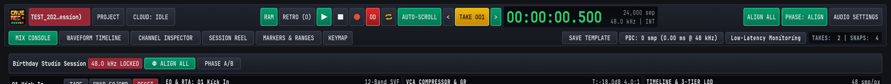
1.3.1 Top Deck Row 1: Session Identity, Transport, Timecode & Phase Controls#
The top row of the header deck is organized into three functional clusters from left to right:
| Cluster | Control / Badge | Keyboard Shortcut | Studio Function |
|---|---|---|---|
| Left: Session & Cloud | Active Session Pill (TEST_202...ession)) |
Status Indicator | Displays the currently loaded Session ID and Session Name. Highlights in studio burgundy when a live session is active on disk. |
| Left: Session & Cloud | PROJECT |
CMD + O (macOS) / CTRL + O (Win/Linux) | Opens the Project and Session Browser modal to switch Projects, create a new Session from a template, link a remote shared project, or open a recent Session. |
| Left: Session & Cloud | CLOUD: IDLE |
Mouse Click | Opens the Cloud Sync Quick Controls popover (AUTO-FLAC ON UPLOAD, SYNC SESSION FULL, SYNC SESSION MIXES) and displays real-time Google Drive transfer status. |
| Center: Transport & Take | RAM |
Mouse Click | Enables or disables the continuous 30-minute retroactive capture memory across all armed input channels. Glows emerald green when active. |
| Center: Transport & Take | RETRO (0) |
SHIFT + R | Flushes the rolling 30-minute retroactive capture memory to disk as a new numbered Take and increments the rescued-take counter. |
| Center: Transport & Take | Play (▶) |
SPACE | Starts or pauses playback of the active Take from the current playhead position. Glows green while transport is rolling. |
| Center: Transport & Take | Stop (■) |
SHIFT + SPACE | Stops playback or active recording immediately and finalizes open audio files and post-recording Snapshots. |
| Center: Transport & Take | Record (●) |
R | Starts or stops multitrack recording. Creates a new t = 0 Take (Take<NNN>) when OD is off, or records a new Overdub Pass (Rec<MMM>-OD) inside the active Take when OD is latched. |
| Center: Transport & Take | OD (Overdub Mode) |
O | Latches Overdub Mode (glows red when active). While latched, pressing Record (R) records new track-level Overdub Passes on armed channels while playing back existing tracks of the active Take. |
| Center: Transport & Take | Cycle / Loop (⇄) |
C | Toggles continuous loop playback and loop overdubbing across the active Take range. |
| Center: Transport & Take | AUTO-SCROLL |
Mouse Click | Keeps the Waveform Timeline viewport following the advancing playhead during playback and recording. |
| Center: Transport & Take | < TAKE 001 > |
ALT + [ / ALT + ] | Steps backward or forward through the Session's non-deleted Takes, immediately loading that Take's 00:00:00.000 timeline and Pass Lanes. |
| Center: Transport & Take | 00:00:00.500 / 24,000 smp |
Readout | High-contrast emerald LED timecode readout (HH:MM:SS.mmm) paired with the exact sample frame position (24,000 smp) within the active Take. |
| Center: Transport & Take | 48.0 kHz | INT |
Readout | Displays the active hardware sample rate (44.1, 48.0, 88.2, or 96.0 kHz) and digital clock lock state (INT). |
| Right: Phase & Hardware | ALIGN ALL |
Mouse Click (Bindable in KEYMAP) |
Runs automatic multi-microphone arrival-time and polarity correlation across all active channels relative to the reference channel. |
| Right: Phase & Hardware | PHASE: ALIGN |
Mouse Click | Toggles global phase alignment processing between active (PHASE: ALIGN) and bypassed (PHASE: BYP) for instant A/B listening. |
| Right: Phase & Hardware | AUDIO SETTINGS |
CMD + , (macOS) / CTRL + , (Win/Linux) | Opens the Audio Device & Latency Settings modal to configure interfaces, sample rate, buffer size, and hardware loopback calibration. |
1.3.2 Top Deck Row 2: Workspace View Tabs, Templates & Latency Diagnostics#
The second row of the Top Deck provides direct navigation across Cave Recorder's six workspace views on the left and session template and latency management on the right:
| Control / View Tab | Keyboard Shortcut | Workspace Purpose |
|---|---|---|
MIX CONSOLE |
CMD + 1 (macOS) / CTRL + 1 (Win/Linux) | Full studio mixing console with Upper Inspector Wells, 18 input strips, Subgroup Buses, Aux Returns, and Master Bus. Detailed in Chapter 4: Mix Console, Signal Flow & Channel Strips. |
WAVEFORM TIMELINE |
CMD + 2 (macOS) / CTRL + 2 (Win/Linux) | Multi-track 2D zoomable waveform editor, expandable Pass Lanes for overdub comping, marker flags, loop ranges, and Take splitting. Detailed in Chapter 6: Waveform Timeline, Pass Lanes, Markers & Ranges. |
CHANNEL INSPECTOR |
CMD + 3 (macOS) / CTRL + 3 (Win/Linux) | Dedicated full-screen channel and Subgroup Bus workbench with expanded 12-band EQ, Dual-Trace RTA, VCA Compressor, Gate, Tape Saturation, and CLAP plugin editors. Detailed in Chapter 5: Built-In Processors, Phase Alignment & CLAP Plugins. |
SESSION REEL |
CMD + 4 (macOS) / CTRL + 4 (Win/Linux) | Session dashboard containing the Takes Catalog, one-click FLAC Print encoding, offline Mixdown and Stem Bounce rendering, undo history, Snapshots, Present Stash A/B comparison, and Cloud Sync controls. Detailed in Chapter 7: Session Reel, Mixdowns, Snapshots, Disk Layout & Cloud Sync. |
MARKERS & RANGES |
CMD + 5 (macOS) / CTRL + 5 (Win/Linux) | Sortable tabular manager for all Take markers (M001..) and loop/export ranges (R001..), with one-click playhead jump (GO TO) and range-to-Take extraction (NEW TAKE). Detailed in Chapter 6: Waveform Timeline, Pass Lanes, Markers & Ranges. |
KEYMAP |
CMD + 6 (macOS) / CTRL + 6 (Win/Linux) | Interactive keyboard shortcut reference and custom keybinding editor with live conflict detection across all 58 studio actions. Detailed in Chapter 8: Action, Mouse Gesture & Keyboard Shortcut Reference. |
SAVE TEMPLATE |
Mouse Click | Opens the Save Mix Console as Template popover to store current channel names, routing, and processor racks as a reusable Session Template (excluding audio takes and undo history). |
PDC: 0 smp (0.00 ms @ 48 kHz) |
Mouse Click | Opens the Latency & Plugin Delay Compensation (PDC) Transparency Breakdown popover showing per-track and per-bus sample compensation and roundtrip I/O offsets. |
Low-Latency Monitoring |
Mouse Click | Bypasses high-latency lookahead or external plugins on record-armed monitoring paths during overdubbing so musicians hear zero-lag foldback. |
TAKES: 2 | SNAPS: 4 |
Mouse Click | Live tally of active Takes and saved console Snapshots in the current Session. Clicking opens the Session Reel. |
Hardware Setup, Audio Connections & First Session
Connecting multi-channel USB and ADAT interfaces, locking digital clocks, calibrating roundtrip loopback latency, and creating your first Project and Session.
2.1 Connecting Multi-Channel Audio Interfaces (USB, Thunderbolt & ADAT)#
Cave Recorder supports up to 18 simultaneous input channels (CH01 through CH18), making it an ideal match for rackmount 18-in / 20-out USB or Thunderbolt studio interfaces such as the Behringer UMC1820 + ADA8200, Focusrite Scarlett/Clarett 18i20 + OctoPre, RME Fireface UFX/UCX II + OctaMic, Audient iD44/EVO 16 + SP8, or Universal Audio Apollo x8p.
A standard 18-channel rehearsal and tracking rig combines three physical input groups into a single unified audio device:
- Inputs 1-8 (Primary Interface Onboard Mic/Line Preamps): Eight XLR/TRS combo preamps on the main rack unit, typically dedicated to close drum microphones, guitar cabinet mics, rack and floor toms, and stereo drum overheads.
- Inputs 9-10 (Coaxial S/PDIF or Auxiliary Line Return): Two digital coaxial S/PDIF channels or line inputs used for stereo hardware synthesizers, stage pianos, or drum machines (
SpdifSynthLandSpdifSynthR). - Inputs 11-18 (8-Channel ADAT Optical Preamp Expander): Eight additional microphone and instrument preamps fed from an external 8-channel ADAT expander into the primary interface's
ADAT OPTICAL INport over a TOSLINK fiber-optic cable, dedicated toBassDi,BassAmp,GuitarL,GuitarR,KeysL,KeysR,LeadVocal, andRoomAmbience.
2.1.1 Studio Signal & Clock Wiring Diagram#
The diagram below illustrates the physical audio, optical ADAT, Word Clock, studio monitor, and loopback calibration connections for an 18-channel tracking room:
STAGE / LIVE ROOM MICROPHONES & DI BOXES
======================================================================
[CH 01..08: Drum Kit & Cab Mics] [CH 11..18: Band & Room Mics]
Kick, Snare, Toms, Overheads Bass DI/Amp, Guitars, Keys, Vocal
| |
8x XLR Mic Cables 8x XLR/TRS Cables
v v
+-------------------------------+ +---------------------------------+
| PRIMARY 18-IN / 20-OUT AUDIO | | EXTERNAL 8-CH ADAT MIC PREAMP |
| INTERFACE (UMC1820 / 18i20) | | (ADA8200 / OctoPre / SP8) |
| | | |
| Analog In 1-8 [CH01..CH08] | | Analog Mic Pre 1-8 |
| S/PDIF Coax In [CH09..CH10]<+-\| |
| ADAT Optical In [CH11..CH18]<+--+-- ADAT Optical Out (TOSLINK) |
| | || |
| Clock: INTERNAL (48.0 kHz) | || Clock Sync: SLAVE (Word Clock |
| Word Clock Out (75-Ohm BNC) --+-++-> Word Clock In (75-Ohm BNC) |
| | |+---------------------------------+
| Main Out 1-2 -> Monitors | |
| Line Out 3-10 -> Headphones | \-- [CH 09..10: Stereo Synth S/PDIF]
| Line Out 20 -> Patch In 1 | (Coaxial 75-Ohm RCA Cable)
| (Loopback) |
+-------------------------------+
|
USB-C / Thunderbolt
v
+-------------------------------+
| WORKSTATION RUNNING CAVEREC |
| Audio Device: 18 in / 20 out |
| Sample Rate: 48.0 kHz | INT |
+-------------------------------+2.1.2 Recommended 18-Channel Full-Band Patch List#
Connecting instruments in a consistent console order allows you to reuse your saved Cave Recorder Session Templates (SAVE TEMPLATE) across every rehearsal without re-patching:
| Input & Strip | Typical Studio Source & Microphone | +48V Phantom |
Subgroup Bus | Gain-Staging Target |
|---|---|---|---|---|
IN 01 (CH01 01KickIn) |
Kick Drum Inside (Dynamic or boundary mic) | Off (On for boundary) | SUB 1 (DRUM BUS) |
Peaks at -6 dBFS on hard hits |
IN 02 (CH02 02SnrTp) |
Snare Drum Top (Dynamic cardioid, align Φ + Ø) |
Off | SUB 1 (DRUM BUS) |
Peaks at -6 dBFS on rimshots |
IN 03 (CH03 03OvrhdL) |
Mono Drum Overhead or Snare Bottom (align Φ) |
On / Off | SUB 1 (DRUM BUS) |
Peaks at -8 dBFS |
IN 04 (CH04 04GtrAmp) |
Close Guitar Cabinet Mic or Hi-Hat Condenser | Off / On | MST (MASTER BUS) |
Average -18 dBFS RMS |
IN 05 (CH05 TomRack) |
Rack Tom Clip-On Dynamic | Off | SUB 1 (DRUM BUS) |
Peaks at -6 dBFS on fills |
IN 06 (CH06 TomFloor) |
Floor Tom Dynamic | Off | SUB 2 / SUB 1 |
Peaks at -6 dBFS on fills |
IN 07 (CH07 OverheadL) |
Drum Overhead Left (Matched condenser pair) | On | SUB 1 (DRUM BUS) |
Peaks at -8 dBFS on crashes |
IN 08 (CH08 OverheadR) |
Drum Overhead Right (Matched condenser pair) | On | SUB 2 / SUB 1 |
Peaks at -8 dBFS on crashes |
IN 09 (CH09 SpdifSynthL) |
Stereo Digital Synth Left (Coaxial S/PDIF L) | Off | SUB 1 / SUB 2 |
Average -18 dBFS RMS |
IN 10 (CH10 SpdifSynthR) |
Stereo Digital Synth Right (Coaxial S/PDIF R) | Off | SUB 2 (INST BUS) |
Average -18 dBFS RMS |
IN 11 (CH11 BassDi) |
Bass Guitar Active/Passive DI Box (Line/Inst) | On (Active DI) | SUB 1 / SUB 2 |
Average -18 dBFS, peaks -8 dBFS |
IN 12 (CH12 BassAmp) |
Bass Cabinet Dynamic or FET Condenser (align Φ to CH11) |
Off / On | SUB 2 (INST BUS) |
Average -18 dBFS, peaks -8 dBFS |
IN 13 (CH13 GuitarL) |
Rhythm Guitar Amp Close Dynamic (SM57 / Ribbon) |
Off | SUB 1 / SUB 2 |
Average -18 dBFS RMS |
IN 14 (CH14 GuitarR) |
Lead Guitar Amp Close Dynamic or Second Cab Mic | Off | SUB 2 (INST BUS) |
Average -18 dBFS RMS |
IN 15 (CH15 KeysL) |
Stage Piano / Keyboard Stereo DI Left | Off | SUB 2 (INST BUS) |
Average -18 dBFS RMS |
IN 16 (CH16 KeysR) |
Stage Piano / Keyboard Stereo DI Right | Off | SUB 2 (INST BUS) |
Average -18 dBFS RMS |
IN 17 (CH17 LeadVocal) |
Lead Vocal Dynamic or Large-Diaphragm Condenser | Off / On | MST (MASTER BUS) |
Peaks at -6 dBFS on loud chorus |
IN 18 (CH18 RoomAmbience) |
Live Room Condenser or Ribbon (Never +48V on passive ribbon) |
On / Off | SUB 1 (DRUM BUS) |
Average -20 dBFS RMS |
2.1.3 Digital Clock Synchronization (INT vs. External ADAT / Word Clock)#
Whenever two or more digital audio devices convert audio simultaneously (such as a primary USB interface and an external 8-channel ADAT optical preamp), every converter in the chain must lock to a single master sample clock. If both units run on their own internal crystal oscillators, slight clock drift causes periodic clicks, pops, and high-frequency distortion across the expanded channels.
Follow one of these two studio clocking topologies:
- Topology A: Primary Interface as Master (
INT), Expander Slaved via Word Clock or Bidirectional ADAT (Recommended):- Set your primary audio interface clock source to Internal (
INT) at48.0 kHz(displayed in the Cave Recorder Top Deck as48.0 kHz | INTand in the console session bar as48.0 kHz LOCKED). - Run a 75-ohm BNC Word Clock cable from the primary interface
WORD CLOCK OUTto the ADAT expanderWORD CLOCK IN(switching the expander's rear clock selector toWC INwith 75-ohm termination active), or run a second TOSLINK cable from the primary interfaceADAT OUTto the expanderADAT INand set the expander clock selector toADAT IN.
- Set your primary audio interface clock source to Internal (
- Topology B: ADAT Expander as Master, Primary Interface Slaved to
ADAT:- If your external 8-channel preamp has only an
ADAT OUTport and noWORD CLOCK INorADAT INport, set the external preamp toINTERNAL 48 kHzand set your primary audio interface clock source to External ADAT in its hardware control panel.
- If your external 8-channel preamp has only an
2.2 Configuring Audio Device Settings (AUDIO SETTINGS)#
Click the AUDIO SETTINGS button at the top right of the Top Transport Deck (or press CMD + , on macOS / CTRL + , on Windows and Linux) to open the Audio Device & Latency Settings modal (MODAL: AUDIO DEVICE & LATENCY SETTINGS).
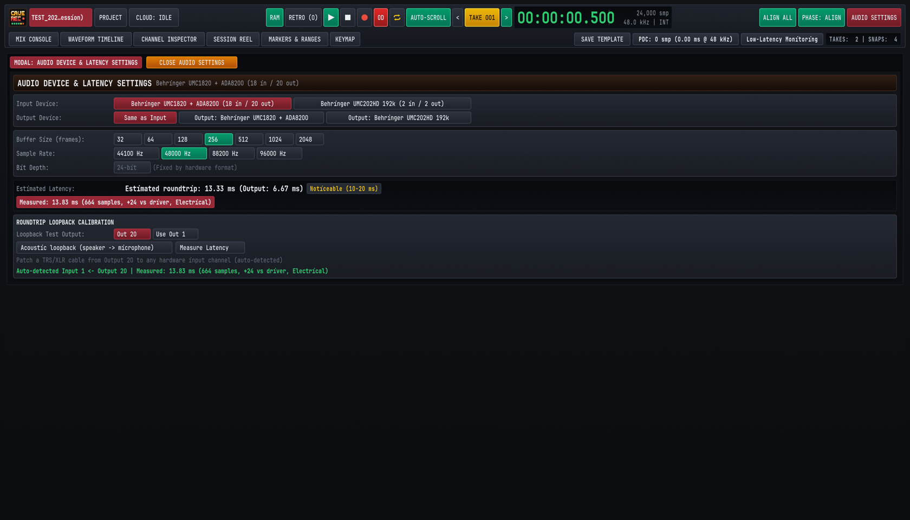
2.2.1 Selecting Input and Output Devices#
- Input Device: Displays all active CoreAudio (macOS), ASIO/WASAPI (Windows), or ALSA (Linux) recording devices detected on the workstation, along with their available channel counts (for example,
Behringer UMC1820 + ADA8200 (18 in / 20 out)orBehringer UMC202HD 192k (2 in / 2 out)). Click the desired interface button to bind Cave Recorder's input engine. - Output Device: Select
Same as Inputwhenever your studio monitors and headphone amplifiers are connected to the same multi-channel interface as your microphones. Using a single unified hardware device guarantees that input and output converters share the same sample clock and ensures deterministic roundtrip loopback calibration. Separate output devices remain selectable when monitoring through an independent desktop DAC.
2.2.2 Buffer Size (frames), Sample Rate & Bit Depth#
- Buffer Size (frames): Selectable from
32,64,128,256,512,1024, or2048sample frames per hardware buffer cycle.- Low Buffer Sizes (
32,64, or128frames): Minimize live input-to-output foldback delay when a vocalist or guitarist is monitoring their own performance through Cave Recorder's built-in console EQ, VCA compressor, andAUX 1 REVERB. - Medium Buffer Sizes (
256or512frames): Provide generous processor headroom during 18-channel full-band tracking when musicians monitor via the audio interface's direct hardware mixer, or during mixing sessions with multiple third-party CLAP plugins.
- Low Buffer Sizes (
- Sample Rate: Selectable between
44100 Hz,48000 Hz,88200 Hz, and96000 Hz. Use48000 Hz(48.0 kHz) for 18-channel USB/ADAT studio rigs and video-synchronized live sessions. - Bit Depth: Shows the hardware converter transport word length (
24-bit (Fixed by hardware format)). Regardless of the hardware interface's 24-bit converter format, Cave Recorder processes all internal signal paths and writes all on-disk multitrack stem files (rec/*.wav) in uncompressed 32-bit floating-point format.
Buffer Size (frames) |
One-Way Buffer @ 48.0 kHz |
Driver Roundtrip (incl. Converter/USB Safety) | Recommended Studio Scenario |
|---|---|---|---|
32 frames |
0.67 ms |
~4.0 - 5.5 ms |
Solo vocal or guitar tracking through software effects on fast workstations |
64 frames |
1.33 ms |
~5.5 - 7.5 ms |
Live overdubbing (OD) with software cue monitoring and Low-Latency Monitoring |
128 frames |
2.67 ms |
~8.0 - 10.5 ms |
General multi-track tracking and rehearsal capture |
256 frames |
5.33 ms |
~13.3 - 14.0 ms |
18-channel band rehearsals using hardware direct monitoring |
512 frames |
10.67 ms |
~24.0 - 26.0 ms |
Full console mixing, Subgroup Bus processing, and heavy CLAP plugin chains |
1024 / 2048 frames |
21.33 / 42.67 ms |
~45.0 - 90.0 ms |
Mastering, offline Stem Bounce preparation, and high-channel-count archival playback |
2.2.3 30-Minute Retroactive Capture Memory (RAM)#
While your audio interface is active, the green RAM button in the Top Transport Deck controls Cave Recorder's continuous 30-minute retroactive capture memory. When RAM is enabled:
- Every record-armed channel strip (
Rengaged) continuously writes incoming 32-bit float audio into a dedicated 30-minute rolling capture memory even while the main transport is stopped. - At
48.0 kHz, 30 minutes of 32-bit audio requires approximately330 MBof system memory per armed channel (roughly5.9 GBwhen all 18 channels are armed simultaneously). - If you are working on a laptop with limited memory and do not need retroactive jam rescue, click
RAMin the Top Deck to disable background capture memory.
2.3 Calibrating Roundtrip Loopback Latency (Measure Latency)#
When a musician records an Overdub Pass (Rec002-OD) while listening to playback of a Base Pass (Rec001), the backing track travels out through the digital-to-analog converter (DAC) to the musician's headphones, and the musician's new performance travels back in through the analog-to-digital converter (ADC) and USB or Thunderbolt bus.
Audio device drivers only report nominal buffer sizes (Estimated roundtrip: 13.33 ms, or 640 samples at 256 frames / 48.0 kHz). They do not account for the additional samples introduced by hardware oversampling filters, optical ADAT connections, and USB or Thunderbolt transport stages (which typically add 16 to 64 extra samples). Without hardware loopback calibration, every overdubbed track lands slightly late relative to the drums.
Cave Recorder includes a built-in hardware impulse loopback analyzer (ROUNDTRIP LOOPBACK CALIBRATION) that measures the exact physical sample delay from output jack to input jack:
- Lower Monitor Volume: Turn down your studio monitor controller and headphone amplifiers completely so the calibration test impulse does not play through loudspeakers.
- Patch a Physical Loopback Cable: Connect a balanced 1/4-inch TRS or XLR patch cable from your interface's dedicated loopback test output (
Out 20orOut 1) directly into any hardware analog input channel (such asInput 1). Ensure+48Vphantom power is turned off on that input channel and set its physical preamp gain knob near unity (roughly 9 to 10 o'clock). - Select the Loopback Test Output: Open
AUDIO SETTINGS(CMD + , / CTRL + ,) and locate the ROUNDTRIP LOOPBACK CALIBRATION panel at the bottom. ChooseOut 20(convenient on 20-output interfaces where Output 20 can stay permanently patched to an unused line input) or clickUse Out 1if patching from main Output 1. (For acoustic room delay tests through a speaker and microphone, toggleAcoustic loopback (speaker -> microphone)). - Run the Impulse Measurement: Click
Measure Latency. Cave Recorder emits a short, high-precision measurement impulse out the selected output port, automatically detects which hardware input channel received the return signal, and correlates the exact sample arrival offset. - Verify the Measured Offset: Inspect the green confirmation readout at the bottom of the modal and the red badge under Estimated Latency:
Auto-detected Input 1 <- Output 20 | Measured: 13.83 ms (664 samples, +24 vs driver, Electrical) - Close Audio Settings: Click
CLOSE AUDIO SETTINGSat the top left of the modal.
2.4 Creating Your First Project and Session (PROJECT Modal)#
Press CMD + O on macOS (CTRL + O on Windows and Linux) or click the PROJECT button in the Top Transport Deck to open the Project and Session Browser modal.
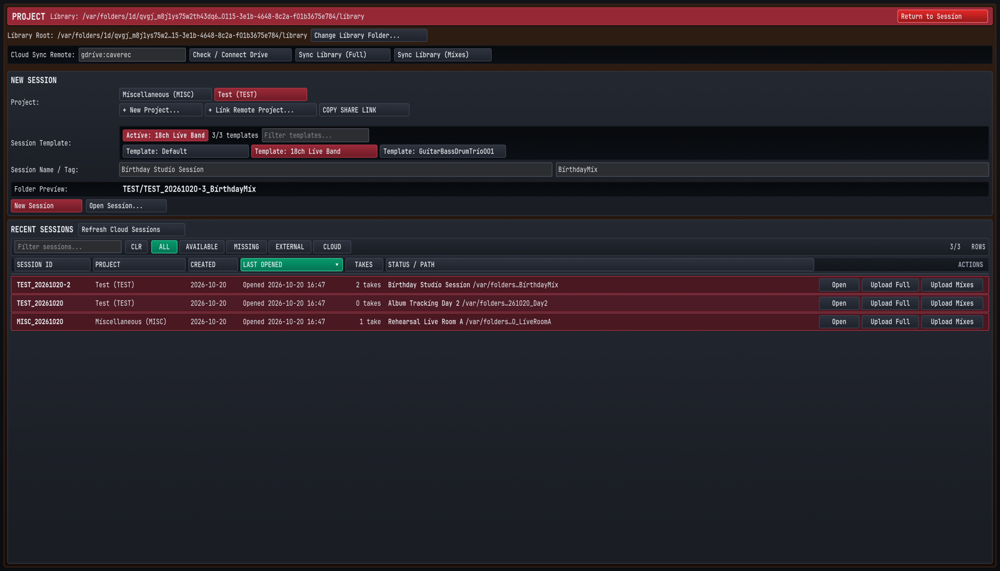
2.4.1 Configuring the Library Root and Cloud Sync Remote#
At the top of the PROJECT modal, verify your storage paths before creating your first session:
- Library Root: Displays the master local disk directory where all Projects, Sessions, and Takes are stored. Click
Change Library Folder...to point Cave Recorder at a fast internal NVMe SSD or dedicated external Thunderbolt recording drive. - Cloud Sync Remote: Displays the configured Google Drive remote path (for example,
gdrive:caverec). ClickCheck / Connect Driveto verify cloud credentials,Sync Library (Full)to synchronize complete session multitracks across machines, orSync Library (Mixes)to synchronize only the lightweight<ProjectTag>/_Mixes/reference folders.
2.4.2 Creating a New Project or Linking a Bandmate's Remote Project#
Every Session belongs to a Project (such as a band name, album project, or client ensemble) identified by an uppercase 1-to-8 character Project Tag (GF, TEST, MISC).
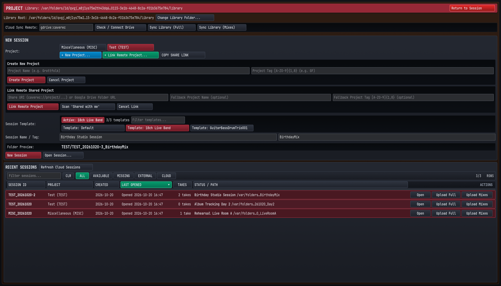
- To create a new local Project:
- In the NEW SESSION panel, click
+ New Project...below the Project selector pills. - Enter the Project Name (for example,
Grottfolk) and a short alphanumeric Project Tag consisting of 1 to 8 uppercase letters or digits (for example,GF). - Click
Create Project. Cave Recorder creates<LibraryRoot>/GF/along with<LibraryRoot>/GF/_Mixes/and selects the new Project pill.
- In the NEW SESSION panel, click
- To link a collaborator's shared Google Drive Project:
- Click
+ Link Remote Project...to expand the Link Remote Shared Project form. - Paste a
caverec://project/...share URI (copied from a bandmate'sCOPY SHARE LINKbutton) or a Google Drive folder URL, or clickScan 'Shared with me'to auto-discover Cave Recorder projects shared with your Google account. - Click
Link Remote Project.
- Click
2.4.3 Selecting a Session Template and Starting a New Session#
Once your Project pill is selected (highlighted in burgundy):
- Choose a Session Template: In the
Session Templaterow, select a starting console layout:Template: Defaultprovides a clean 4-channel starting console withDRUM BUS,INST BUS,AUX 1 REVERB,AUX 2 TAPE DLY, andMST MASTER BUS.Template: 18ch Live Bandpre-configures 18 named input channels (01KickInthroughRoomAmbience), Subgroup routing, EQ high-pass filters, and VCA compressor defaults for a full band.- Any custom studio setup you save via
SAVE TEMPLATEin the Top Deck (such asTemplate: GuitarBassDrumTrio001) appears automatically in this list and can be filtered via theFilter templates...search box.
- Enter Session Name and Session Tag: Type a descriptive Session Name in the left field (for example,
Birthday Studio Session) and a short filesystem-friendly Session Tag in the right field (for example,BirthdayMix). - Verify the Folder Preview: Inspect the
Folder Previewline (TEST/TEST_20261020-3_BirthdayMix). Cave Recorder automatically combines the Project Tag, the session date (using the 08:00 local time rollover rule), the daily session sequence number, and your Session Tag. - Launch the Session: Click
New Sessionto initialize the session folder on disk and enter theMIX CONSOLE(CMD + 1 / CTRL + 1). To reopen an existing session instead, locate it in the RECENT SESSIONS table at the bottom (filtering byALL,AVAILABLE,MISSING,EXTERNAL, orCLOUD) and clickOpen.
2.4.4 Pre-Session Track Naming, Input Routing & Gain Staging#
Before the band starts playing the first song, perform a 60-second console check in MIX CONSOLE (CMD + 1 / CTRL + 1):
- Verify Hardware Input Routing (
IN 01 v): On each channel strip, confirm the input selector dropdown (IN 01 v,IN 02 v, ...) matches the physical preamp jack where that microphone or DI box is plugged in. - Name Each Strip Clearly: Double-click any channel strip header (
01KickIn,02SnrTp, ...) to rename it. Clear strip names propagate automatically into every recorded.wavstem filename (01-KickIn_Rec001.wav) and Waveform Timeline lane. - Set Analog Preamp Gain and Digital Input Trim (
TRM): Have the band play at full rehearsal volume:- Adjust your audio interface's physical analog preamp knobs so sustained signals average around
-18 dBFSRMS (in the healthy green zone of the channel meter) and the loudest drum hits peak around-6 dBFS(in the lower amber zone, well below0.0 dBFShardware clipping). - Use each strip's digital
TRMslider (-24.0 dBto+24.0 dB) to fine-tune the level feeding the 8-slot processor rack and recorded pre-fader stem.
- Adjust your audio interface's physical analog preamp knobs so sustained signals average around
- Engage Record Arm (
R) and Input Monitoring (I): ClickRon every active input strip so it lights red, and confirm the Top DeckRAMindicator is lit green so 30-minute retroactive memory begins capturing immediately. - Save Your Room Template: Click
SAVE TEMPLATEin Row 2 of the Top Deck, enter a template name for your room setup, and clickSAVE AS TEMPLATEso future sessions load this exact configuration in one click.
Typical Studio & Rehearsal Workflows
Step-by-step guides for band rehearsal capture, 30-minute retroactive memory rescue, multi-mic drum phase alignment, overdub comping, and band mix sharing.
This chapter walks through five end-to-end studio workflows that cover the day-to-day operation of Cave Recorder: capturing a full-band rehearsal with instant stereo reference mixes, rescuing an unrecorded jam from the 30-minute retroactive memory, phase-aligning a multi-microphone drum kit and guitar rig, tracking and comping layered overdubs in Pass Lanes, and mixing with non-destructive Snapshots and Google Drive synchronization.
3.1 Workflow 1: Full-Band Rehearsal Capture & Instant Reference Prints#
Studio Scenario: A four- or five-piece band gathers for a two-hour evening rehearsal. You want to record every song run-through across 12 to 18 channels without slowing down the room, mark strong sections on the fly, and hand every band member compact 24-bit .flac stereo mixes before they finish packing up their gear.
3.1.1 Rehearsal Capture Procedure#
- Launch the Session from Your Rehearsal Template:
- Press CMD + O (macOS) or CTRL + O (Windows/Linux) to open the
PROJECTmodal. - Select your band's Project pill, click
Template: 18ch Live Band(or your custom room template), type a Session Name (Tuesday Night Rehearsal) and Session Tag (Rehearsal), and clickNew Session.
- Press CMD + O (macOS) or CTRL + O (Windows/Linux) to open the
- Arm All Active Input Channels:
- Press CMD + 1 (macOS) or CTRL + 1 (Windows/Linux) to view
MIX CONSOLE. - Confirm that
CH01throughCH18(or all active mic and DI channels) have their red Record Arm (R) buttons engaged (clickRon each strip, or select a strip and press SHIFT + A). - Verify that Overdub Mode (
OD) in the Top Transport Deck is off (unlit) so each recording starts a fresht = 0Take.
- Press CMD + 1 (macOS) or CTRL + 1 (Windows/Linux) to view
- Dial a Quick Monitor and Live Print Balance:
- While the band warms up, verify input levels average around
-18 dBFSRMS with peaks around-6 dBFS. - Set channel faders and stereo pans (
OverheadL/OverheadR,GuitarL/GuitarR,KeysL/KeysR), blend inAUX 1 REVERB(RVB) on snare and vocals, and engageTAPEsaturation, the brickwallLIM(CEIL -0.3dB), and the2-TRKlive Print button on theMST MASTER BUSstrip. Because the live stereo Print records directly from the Master Bus output whenever2-TRKis armed, this monitor balance becomes your immediate reference mix.
- While the band warms up, verify input levels average around
- Start Recording Song 1 (
Take 001):- Just before the drummer counts in, press R (or click Record
●in the Top Deck). - Cave Recorder creates
Take 001at00:00:00.000and simultaneously writes raw 32-bit float pre-fader stems (Rec001) intoTake001/rec/and the live stereo Master Bus mix (Print001.wav) intoTake001/mix/.
- Just before the drummer counts in, press R (or click Record
- Drop Cue Markers on the Fly (M):
- Whenever a chorus groove locks in, a bridge arrangement changes, or a solo stands out during the performance, press M on the keyboard.
- Cave Recorder drops a timestamped standalone marker (
M005,M006, ...) at the exact live playhead sample without interrupting recording.
- Stop at the End of the Song (SPACE):
- When the final chord rings out, press SPACE (or SHIFT + SPACE).
- Cave Recorder closes all open audio files for
Take 001and automatically captures a post-recording console Snapshot (Auto-Save (Post-Recording)).
- Capture Subsequent Songs as Independent Takes (
Take 002,Take 003, ...):- When the band counts in the next run-through or the next song, simply press R again.
- Cave Recorder automatically increments to
Take 002with a brand-new00:00:00.000timeline origin. Repeat R, play the song, and press SPACE for every song of the night.
- Tag Keeper Takes and Convert Live Prints to
.flac(FLAC PRINT/FLAC ALL PRINTS):- At the end of rehearsal, press CMD + 4 (macOS) or CTRL + 4 (Windows/Linux) to open the
SESSION REEL. - In the TAKES CATALOG, click
EDIT TAKE 001to assign a descriptive song tag (such asNewSong_Run1orChorusKeeper). - Click
FLAC PRINT 001on individual Takes, or clickFLAC ALL PRINTSin the Session Reel header bar to batch-encode every live stereo.wavPrint to 24-bit.flacand link it into<ProjectTag>/_Mixes/. (If you adjusted faders after recording and want an updated offline render instead of the live Print, clickFLACon theMST MASTER BUSstrip to render an offlineMix001.flacMixdown).
- At the end of rehearsal, press CMD + 4 (macOS) or CTRL + 4 (Windows/Linux) to open the
- Sync Reference Mixes to Bandmates' Phones:
- Click
UPLOAD SES MIXESin the Session Reel header (or open the Top DeckCLOUDpopover and clickSYNC SESSION MIXES). - Cave Recorder uploads the compact
.flacreference mixes to Google Drive in seconds so every band member can listen on the drive home.
- Click
3.2 Workflow 2: Rescuing an Unrecorded Jam with 30-Minute Retroactive Capture (RETRO)#
Studio Scenario: Between rehearsed songs, the transport is stopped while the guitarist tunes. The drummer and bassist start an improvised groove, the rest of the band joins in, and eight minutes later they finish the best song idea of the night. Nobody pressed Record.
Because Cave Recorder continuously maintains a rolling 30-minute retroactive capture memory across all armed inputs whenever RAM is active, the entire multi-channel performance is still in system memory waiting to be saved.
3.2.1 Retroactive Rescue Procedure#
- Keep
RAMActive and Channels Armed During Rehearsal:- At the start of your session, verify that the
RAMbutton in the Top Transport Deck is illuminated green and all live studio channels (CH01..CH18) have their redR(Record Arm) buttons engaged. - Even while the transport is stopped (
■), Cave Recorder continuously retains the most recent 30 minutes of incoming 32-bit float audio from every armed channel in memory.
- At the start of your session, verify that the
- Trigger Retroactive Capture (
RETRO):- As soon as the unrecorded jam finishes (or even while the band is still playing), click the
RETRO (0)button in the Top Transport Deck, or press SHIFT + R.
- As soon as the unrecorded jam finishes (or even while the band is still playing), click the
- Verify the Rescued Take:
- Cave Recorder immediately flushes the rolling multi-channel capture memory to disk as a new numbered Take (
Take<NNN>), increments the Top Deck counter badge toRETRO (1), builds the multi-tier waveform overview, and switches the active console and timeline to the rescued Take.
- Cave Recorder immediately flushes the rolling multi-channel capture memory to disk as a new numbered Take (
- Trim Pre-Jam Room Chatter into a Clean Song Take (
SPLIT TAKE):- Press CMD + 2 (macOS) or CTRL + 2 (Windows/Linux) to switch to
WAVEFORM TIMELINE. - Scrub or zoom (
ZOOM IN (+)or =, or vertical/horizontal drag on the timeline ruler) to find the exact moment the drummer counted in the jam, and click to place the playhead just before the first beat. - Click
SPLIT TAKEin the Waveform Timeline toolbar (or press M to drop a marker, openMARKERS & RANGESwith CMD + 5 / CTRL + 5, and clickNEW TAKE -> ENDon that marker row). - Cave Recorder extracts the jam from that marker forward into its own clean
00:00:00.000Take and lets you move the earlier tuning Take to the session trash viaTOMB TAKE 001(or permanently remove an unwanted retroactive Take viaPURGE RETRO 001) inSESSION REEL(CMD + 4 / CTRL + 4).
- Press CMD + 2 (macOS) or CTRL + 2 (Windows/Linux) to switch to
3.3 Workflow 3: Multi-Mic Drum & Guitar Cab Phase Alignment (ALIGN ALL & Φ)#
Studio Scenario: You are tracking a full band across 18 channels (CH01 01KickIn, CH02 02SnrTp, CH03 03OvrhdL, CH04 04GtrAmp, CH05 TomRack, CH06 TomFloor, CH07 OverheadL, CH08 OverheadR, CH09 SpdifSynthL, CH10 SpdifSynthR, CH11 BassDi, CH12 BassAmp, CH13 GuitarL, CH14 GuitarR, through CH18 RoomAmbience). Because acoustic wavefronts from the kick and snare travel several feet through the air before reaching the overhead and room microphones, and because a bass amp microphone lags behind a direct Bass DI box, summing the raw channels causes phase cancellation that thins out low-end punch and smears transient focus.
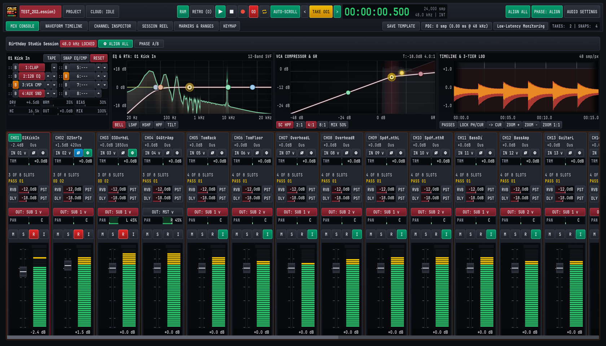
3.3.1 Multi-Mic Phase Alignment Procedure#
- Record a 10-to-15 Second Full-Kit & Band Reference Pass:
- Arm all drum and multi-miked instrument channels (
R) inMIX CONSOLE(CMD + 1 / CTRL + 1). - Press R and have the drummer play a 10-to-15 second groove that hits the kick, snare, toms, hi-hat, and cymbals clearly while the bassist and guitarist play locked eighth notes.
- Press SPACE to stop recording.
- Arm all drum and multi-miked instrument channels (
- Verify the Timing Reference Channel (
0us):- Look at the phase delay readout directly beneath each channel strip's top identifier badge (
CH01 01KickInshows-2.4dB 0us). - By default,
CH01(01KickInor Overhead L) serves as the0usacoustic timing anchor against which correlated channels are measured.
- Look at the phase delay readout directly beneath each channel strip's top identifier badge (
- Run Automatic Multi-Mic Phase Alignment (
ALIGN ALL):- Click the green
ALIGN ALLbutton in the Top Transport Deck (orΦ ALIGN ALLin the session toolbar bar). - To align only a single channel strip (such as aligning
CH12 BassAmptoCH11 BassDi), select that strip and click its individualΦbutton. BothTrigger Global Multi-Mic Phase AlignandTrigger Phase Align on Inspected Trackcan also be bound to custom keyboard shortcuts inKEYMAP(CMD + 6 / CTRL + 6). - To manually flip 180-degree polarity (
Ø) on the currently inspected channel strip at any time, clickØor press SHIFT + P while inMIX CONSOLE.
- Click the green
- Inspect Sub-Sample Delay (
us) and Polarity (Ø) Corrections:- Cave Recorder cross-correlates the recorded multi-channel waveforms and engages the green
Φphase button and blueØpolarity button where needed: - On
CH02 02SnrTp, notice the readout updates to+1.5dB 420uswith both polarity inversion (Øblue) and phase delay (Φgreen) engaged to lock the snare transient in phase with the kick and overheads. - On
CH03 03OvrhdL, notice the readout updates to+0.0dB 1850uswithΦengaged to compensate for the acoustic propagation distance between the close mics and overheads.
- Cave Recorder cross-correlates the recorded multi-channel waveforms and engages the green
- A/B Audition the Phase Alignment (
PHASE: ALIGNvs.PHASE: BYP):- Press SPACE to play back the drum recording through your studio monitors.
- Click
PHASE: ALIGNin the Top Deck (orPHASE A/Bin the session sub-header) to toggle betweenPHASE: ALIGN(active) andPHASE: BYP(bypassed). - Listen to the low-frequency weight of the kick drum, the body of the snare, and the phantom center image of the kit snap into focus when
PHASE: ALIGNis engaged. All subsequent Takes in the Session inherit these aligned delay and polarity settings automatically.
3.4 Workflow 4: Layered Guitar & Vocal Overdubs with Pass Lane Comping (OD)#
Studio Scenario: The band has tracked a solid rhythm section performance in Take 001. Now the guitarist or lead vocalist wants to loop the chorus section, record three alternate solo or vocal passes (Rec002-OD, Rec003-OD, Rec004-OD) inside Take 001, and select the best performance using Pass Lanes.
3.4.1 Overdub Tracking & Pass Lane Comping Procedure#
- Select the Target Take (
TAKE 001):- Use
< TAKE 001 >in the Top Deck (ALT + [ / ALT + ]) or clickLOAD TAKE 001inSESSION REEL(CMD + 4 / CTRL + 4) so the rhythm Take is loaded at00:00:00.000.
- Use
- Disarm Rhythm Tracks and Arm Only the Overdub Channel:
- In
MIX CONSOLE(CMD + 1 / CTRL + 1), click the redRbuttons on the drum and bass strips (CH01..CH03,CH05..CH12) to disarm them so they play back theirPASS 01(Rec001) stems from disk. - On the target overdub channel (for example,
CH04 04GtrAmporCH17 LeadVocal), engage bothR(Record Arm, or press SHIFT + A while the strip is selected inMIX CONSOLE) andI(Input Monitor, or press SHIFT + I) so the performer hears their live input blended with playback.
- In
- Latch Overdub Mode (
OD) and Low-Latency Monitoring:- Click
ODin the Top Transport Deck (or press O) so theODbutton illuminates bright red. - Click
Low-Latency Monitoringin Row 2 of the Top Deck so any high-latency plugins on non-armed buses are bypassed in the live monitoring path.
- Click
- Define the Section Loop Range (
K,L&⇄):- Press CMD + 2 (macOS) or CTRL + 2 (Windows/Linux) to open
WAVEFORM TIMELINE. - Place the playhead two bars before the solo or chorus entrance and press K (or click
RANGE START (K)). - Place the playhead a bar after the section ends and press L (or click
RANGE END (L)). - Press C (or click Cycle/Loop
⇄in the Top Deck) to enable loop playback across the range.
- Press CMD + 2 (macOS) or CTRL + 2 (Windows/Linux) to open
- Record Multiple Overdub Passes (
OD 02,OD 03,OD 04):- Press R to start overdub recording inside
Take 001. While the rhythm tracks play back, Cave Recorder captures the new performance ontoCH04asRec002-OD(displayed asOD 02) and automatically applies your calibrated roundtrip loopback offset (-640 smp (-13.3ms)). - Press SPACE at the end of the pass, return to the start of the range, and press R again to capture
OD 03(Rec003-OD) andOD 04(Rec004-OD).
- Press R to start overdub recording inside
- Expand Pass Lanes in the Waveform Timeline (E):
- In
WAVEFORM TIMELINE(CMD + 2 / CTRL + 2), press E (or clickEXPAND ALL PASSESin the timeline toolbar, or click the red pass-count pillv (2)on an individual track header) to expand the track's Pass Lanes. Press SHIFT + E (or clickCOLLAPSE ALL PASSES) at any time to fold them back into a single compact track row. - The top slice of the expanded track displays
PASS 01(BASE PASS), followed by stacked slices for each recorded Overdub Pass (OD 02,OD 03,OD 04, each badgedOVERDUBwith its sample spanSpan: 0..48000 smpand net record-offset-640 smp (-13.3ms)). Notice that the Mix Console channel strip badge also updates to showOD 02in amber when an Overdub Pass is active.
- In
- Audition and Select Active Pass Lanes (
Use PASS 01/★ OD 02):- The currently selected pass on a track is badged
ACTIVE COMP LANEand displays a green star button (★ PASS 01or★ OD 02), while every other pass is badgedSTANDBY COMP LANEwith a clickableUse PASS 01orUse OD 02button. - While looping playback (SPACE), click
Use PASS 01,Use OD 02, orUse OD 03on any Pass Lane row to promote that pass immediately as the active playback lane for the track. - To silence a pass temporarily without changing selection, click
M(Mute) on that Pass Lane row, or clickDelto remove a flawed pass from the Take.
- The currently selected pass on a track is badged
3.5 Workflow 5: Mixing, Non-Destructive Snapshots & Band Cloud Sharing#
Studio Scenario: Tracking and overdub selection are complete. Now you want to shape a polished mix using Subgroup Buses and Aux Sends, save several mix variations as Snapshots, compare a vocal-up mix against an earlier Snapshot using Present Stash, render an offline Mixdown and Stem Bounces, and synchronize the project to Google Drive.
3.5.1 Bus Mixing, Snapshot A/B & Cloud Sync Procedure#
- Organize Channels into Subgroup Buses (
DRUM BUS&INST BUS):- In
MIX CONSOLE(CMD + 1 / CTRL + 1), click the output routing selector (OUT: SUB 1 v) on all drum channels (CH01..CH08,CH18) to route them toSUB 1(DRUM BUS). - Route synths, bass, guitars, and keys (
CH09..CH16) toOUT: SUB 2 v(INST BUS), and route lead vocals (CH17) directly toOUT: MST v(MASTER BUS).
- In
- Apply Bus Processing and Spatial Aux Sends (
RVB&DLY):- Click
SELon theDRUM BUSstrip to load its 8-slot processor rack into the Upper Inspector Wells. - In the 12-Band Parametric EQ well (
2:12B EQ), sculpt a low-shelf boost around60 Hzand a gentle presence lift at4.5 kHzwhile watching the pre/post Dual-Trace RTA spectrum. - In the VCA Compressor well (
3:VCA CMP), select a4:1ratio, engage the sidechain high-pass filter (SC HPF), and setMIX 50%for punchy New York-style parallel drum compression. - Use each channel's
RVBandDLYsend sliders (togglingPSTfor post-fader send operation) to feedAUX 1 REVERB(EMT 140 Platezero-latency convolution reverb) andAUX 2 TAPE DLY(CAPSTAN TAPEecho withWOW 18%,DMP 4.2k, andPPping-pong stereo widening).
- Click
- Save Named Mix Variations as Manual Snapshots (
SNAP MANUAL):- Press CMD + S on macOS (CTRL + S on Windows and Linux) from any workspace view, or press CMD + 4 / CTRL + 4 to open
SESSION REELand clickSNAP MANUALin theHISTORYtoolbar, to capture your baseline mix asSnap 004 [MANUAL]. - Return to
MIX CONSOLE(CMD + 1 / CTRL + 1) and try a more aggressive mix variation (for example, pushingDRIVE +4.5dBon the Master Tape saturator and riding the lead guitar +2.0 dB).
- Press CMD + S on macOS (CTRL + S on Windows and Linux) from any workspace view, or press CMD + 4 / CTRL + 4 to open
- A/B Compare Historical Snapshots with Present Stash (
A/B PRESENT STASH):- In
SESSION REEL(CMD + 4 / CTRL + 4), scroll to the SNAPSHOTS & PRESENT STASH table and clickAUDITION SNAP 001(orAUDITION SNAP 004). - Cave Recorder automatically backs up your live, unsaved console adjustments into the Present Stash and displays the
AUDITION MODE: SNAP 001control bar. - While playback is rolling, click
A/B PRESENT STASHrepeatedly to toggle instantaneously between the historical Snapshot and your live working mix with zero audio dropouts. - Click
RETURN TO PRESENT(or press BACKSPACE) to restore your live working mix, or clickCOMMIT SNAPSHOTif you prefer the historical Snapshot and want to adopt it as the new working session state.
- In
- Render Offline Mixdowns and Stem Bounces:
- When your mix is finished, click
FLACon theMST MASTER BUSstrip inMIX CONSOLE(CMD + 1 / CTRL + 1) to render an offline stereo Mixdown (Mix001.flac/.wav) linked directly into<ProjectTag>/_Mixes/, or trigger offline per-track Stem Bounces (Bounce001.wav) for archival delivery.
- When your mix is finished, click
- Synchronize to Google Drive (
UPLOAD SES MIXES/UPLOAD SES FULL):- Click
UPLOAD SES MIXESinSESSION REEL(CMD + 4 / CTRL + 4) to push all stereo.flacPrints and Mixdowns to Google Drive for rapid band review. - Click
UPLOAD SES FULLto synchronize the entire session folder (including 32-bit floatrec/stems,snapshots/, and session history) so remote bandmates who have linked the project can open the full multitrack session on their own studio workstations.
- Click
Mix Console, Signal Flow & Channel Strips
Channel strip zones, input routing, reorderable 8-slot processing racks, Subgroup Buses, Aux Sends and Returns, Master Bus controls, and precision fader and knob operation.
The Cave Recorder Mix Console (CMD + 1 on macOS, CTRL + 1 on Windows and Linux) models an in-line large-format studio recording and mixing desk. Every input channel, subgroup bus, stereo auxiliary return, and master bus stage is visible on a single dark-chassis surface without hidden routing matrices or nested sub-menus.
This chapter details the end-to-end audio signal path from physical preamplifiers to disk stems and main monitors, the seven functional zones of an Input Track channel strip, the architecture of Subgroup Buses, Aux Returns, and the Master Bus, and the mouse and keyboard modifiers used for precision console mixing.
4.1 Console Architecture & End-to-End Signal Flow#
Understanding where audio is tapped for multitrack disk capture versus monitor and bus mixing is fundamental to operating Cave Recorder with confidence during live band tracking.
+====================================================================+
| CAVE RECORDER END-TO-END CONSOLE SIGNAL FLOW |
+====================================================================+
PHYSICAL AUDIO INPUT (IN 01 .. IN 18)
|
v
[Input Trim (TRM: -24.0 to +24.0 dB)] -> [Polarity Invert (Ø: 180°)]
|
v
[Sub-Sample Phase Align (Φ: 0.00 to +50.00 ms / 0 to 50,000 us)]
|
+-------------------------------+
| (Armed [R] + Record) | (When Input Mon [I] is OFF)
v v
+=============================+ +==================================+
| RAW PRE-FADER STEM RECORDER | | DISK PASS LANE PLAYBACK READER |
| <Take>/rec/..._Rec001.wav | | Active Pass: PASS 01 or OD 02..N |
| (Pre-inserts & pre-fader!) | | (See Chapter 6 for Pass Comping) |
+=============================+ +==================================+
+---------------+---------------+
| <-- AUX TAP: [PRE] (Pre-Insert / Pre-Fader)
v
+==================================================================+
| 8-SLOT REORDERABLE CHANNEL PROCESSING RACK (Slots 1..8 + TAPE) |
| * Input TAPE Saturation (DRV, WRM, BIAS, HC, OUT, MIX) |
| * 12-Band Parametric EQ (2:12B EQ) <-- AUX TAP: [EQ] (Post-EQ) |
| * Analog VCA Compressor (3:VCA CMP) & CLAP Plugins (1..8:CLAP) |
| * Movable Aux Send Tap Slot (4:AUX SND) |
+==================================================================+
|
v
[Channel Fader (-inf to +12.0 dB), Pan (PAN) & Mute/Solo (M/S)]
|
+---------------+---------------+--> AUX TAP: [PST] (Default)
| (OUT: SUB 1 / SUB 2 / MST) | (Aux Send Bus Summing)
v v
+=============================+ +==================================+
| STEREO SUBGROUPS (SUB 1..16)| | STEREO AUXILIARY RETURNS |
| DRUM BUS, INST BUS | | * AUX 1 REVERB (EMT 140 Plate) |
| * Trim (TRM), LINK & SEL | | LC, Pre-Delay (PD), Decay (DCY)|
| * 8-Slot SUB RACK & Sends | | * AUX 2 TAPE DLY (Capstan Echo) |
| * Balance (BAL), M/S, Fader| | WOW, DMP, Time (TM), FB, PP |
+=============================+ +==================================+
+---------------+---------------+
| (Summing into Master Bus)
v
+==================================================================+
| STEREO MASTER BUS (MST MASTER BUS) |
| 1. Master Tape (TAPE: DRIVE 0.0..+24.0 dB, WARM 0..100%) |
| 2. Master Bus Glue Compressor (COMP: Shared Threshold THR) |
| 3. Brickwall Limiter (LIM: THR -48..0 dB, CEIL -6.0..0.0 dB) |
| 4. Master Fader (-inf..+12.0 dB), Mute (M) & 40-Segment Meter |
+==================================================================+
| (Main Monitor Outputs 1/2) | (When [2-TRK] Enabled)
v v
[STUDIO CONTROL ROOM MONITORS] [CONCURRENT LIVE STEREO PRINT WAV]
(Plus [FLAC] Bounce -> _Mixes/)4.1.1 Dual-Path Capture: Raw Pre-Insert Stems Plus Live Processed Prints#
In traditional rehearsal spaces and project studios, engineers face a dilemma when tracking a full band:
- The Safe But Uninspiring Approach: Record flat tracks with zero processing so nothing can be ruined by an overly aggressive compressor or EQ setting, leaving the band with dry, unmixed rough bounces at the end of the night.
- The Inspiring But Risky Approach: Print heavy compression, EQ, and tape saturation directly onto the multitrack stems, risking permanent distortion or pumping if a guitarist boosts a pedal mid-song.
Cave Recorder resolves this dilemma through a split capture topology:
- Raw Pre-Fader Multitrack Stems (
<TakeFolder>/rec/): Every armed Input Track (R) writes its 32-bit floating-point WAV file (Rec001Base Pass orRec002-ODOverdub Pass) immediately after Input Trim (TRM), Polarity (Ø), and Phase Alignment (Φ), before the 8-slot insert rack and channel fader. You can dial in aggressive 8:1 drum compression, heavy tape drive, high-pass filters, or experimental CLAP plugins on the console during rehearsal knowing the underlying multitrack stem on disk remains 100% clean and unclipped. - Concurrent Live Stereo Master Print (
<TakeFolder>/mix/): Simultaneously, while the transport is recording aTake, the Master Bus (2-TRKenabled) captures the complete post-fader, post-subgroup, post-reverb, and post-limiter stereo mix in real time to aPrint<NNN>WAV file. ClickingFLACon the Master Bus renders a 24-bit.flacmix file and links it into the Project's_Mixes/folder for immediate band sharing and cloud sync, while you retain every raw multitrack stem for later remixing or offline stem bouncing (covered in Chapter 7: Session Reel, Mixdowns, Snapshots, Disk Layout & Cloud Sync).
4.2 Input Track Channel Strips (Zone by Zone)#
Cave Recorder supports up to 18 Input Track channel strips (CH01 through CH18) alongside Subgroup Buses, Aux Returns, and the Master Bus. Each Input Track strip is organized vertically from top to bottom in strict signal-flow order.
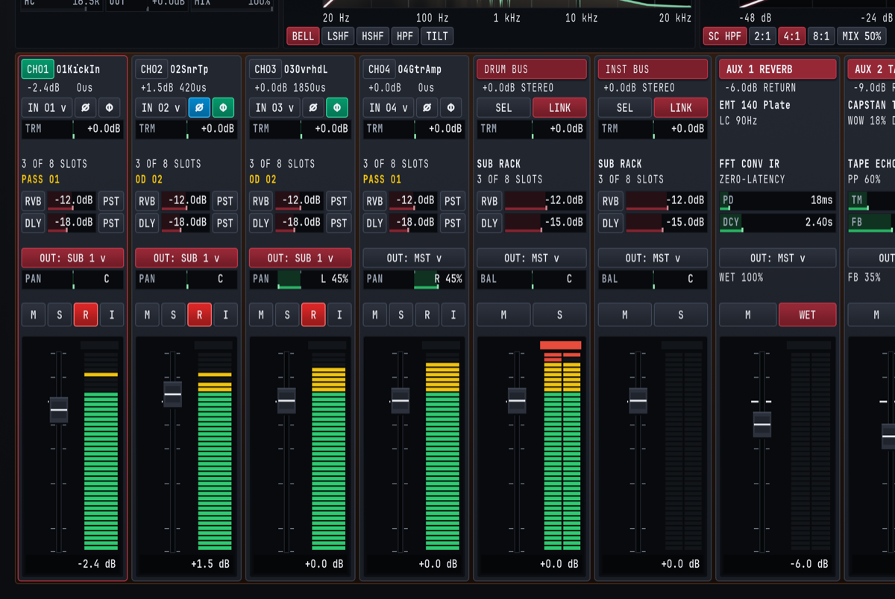
4.2.1 Input Track Control Reference Table#
| Strip Zone | UI Control / Badge | Range / States | Default | Primary Studio Function |
|---|---|---|---|---|
| 1. Header | CH01 .. CH18 Badge & Nameplate |
Custom text label (e.g., 01KickIn) |
CHNN |
Identifies channel number and scribble-strip name. Clicking selects the strip for inspection. |
| 1. Header | Level & Delay Readout | -inf..+12.0dB, 0us..50000us |
+0.0dB 0us |
Displays current fader setting and active sub-sample phase delay offset in microseconds (us). |
| 2. Input & Phase | Physical Input (IN 01 v) |
IN 01..IN 18, NONE (PLAYBACK) |
IN NN |
Assigns physical hardware audio input channel or sets the strip to pure disk playback. |
| 2. Input & Phase | Polarity Invert (Ø) |
Off / Active (cyan, SHIFT + P) | Off | Flips signal polarity by 180° on the inspected strip to correct underside snare mics or inverted cables. |
| 2. Input & Phase | Phase Align (Φ) |
Off (dark) / Active (emerald) | Off | Engages sub-sample acoustic delay compensation (0.00 ms to +50.00 ms) calculated by ALIGN ALL. |
| 2. Input & Phase | Input Trim (TRM) |
-24.0 dB to +24.0 dB |
+0.0 dB |
Adjusts pre-insert digital input gain before disk stem capture and the 8-slot rack. |
| 3. Rack & Pass | Rack Slot Summary | 0 OF 8 SLOTS .. 8 OF 8 SLOTS |
3 OF 8 SLOTS |
Shows active processor count in the channel's 8-slot insert rack. |
| 3. Rack & Pass | Active Pass Badge | PASS 01, OD 02, OD 03.. |
PASS 01 |
Displays which Pass Lane is currently selected for playback inside the active Take. |
| 4. Aux Sends | Reverb Send (RVB) |
-inf (-60.0 dB) to +12.0 dB |
-12.0 dB |
Controls send level from this channel to the stereo AUX 1 REVERB bus. |
| 4. Aux Sends | Delay Send (DLY) |
-inf (-60.0 dB) to +12.0 dB |
-18.0 dB |
Controls send level from this channel to the stereo AUX 2 TAPE DLY bus. |
| 4. Aux Sends | Send Tap Selector | PRE / EQ / PST |
PST |
Selects pre-insert (PRE), post-EQ/pre-fader (EQ), or post-fader (PST) send pickoff point. |
| 5. Routing & Pan | Output Bus (OUT: ... v) |
SUB 1..SUB 16, MST |
OUT: MST v |
Routes post-fader channel output to one or more Subgroup Buses and/or the Master Bus. |
| 5. Routing & Pan | Stereo Pan (PAN) |
L 100% .. C .. R 100% |
C (Center) |
Positions the channel across the stereo field using a constant-power panning taper. |
| 6. Switch Bank | Mute (M) |
Off / Muted (SHIFT + M) | Off | Silences post-fader channel audio and PST aux sends without stopping pre-fader recording. |
| 6. Switch Bank | Solo (S) |
Off / Soloed (SHIFT + S) | Off | Isolates soloed channels in the control room monitor path without affecting multitrack recording. |
| 6. Switch Bank | Record Arm (R) |
Unarmed / Armed (red, SHIFT + A) | Armed on active inputs | Arms the channel for disk stem capture and rolling 30-minute retroactive memory capture. |
| 6. Switch Bank | Input Monitor (I) |
Auto Playback / Live Input (SHIFT + I) | Off | Forces live physical input monitoring through the channel strip even during transport playback. |
| 7. Fader & Meter | Channel Fader & 40-Seg Meter | -inf (-60.0 dB) to +12.0 dB |
+0.0 dB |
Controls post-insert mix level alongside a 40-segment Peak/RMS bargraph with peak hold. |
4.2.2 Zone 1 & Zone 2: Track Header, Input Routing, Polarity, Phase & Trim#
At the top of each Input Track strip (CH01 through CH18), the Track Header displays the channel badge (CH01 highlighted in emerald when selected) and the custom scribble-strip name (01KickIn, 02SnrTp, 03OvrhdL, 04GtrAmp). A crimson outline borders the entire selected channel strip to show at a glance which track is currently loaded into the four Upper Console Wells (on the Mix Console view, CMD/CTRL + 1) and the full-screen CHANNEL INSPECTOR view (CMD/CTRL + 3). Immediately beneath the track name, a compact dual telemetry line reports the current fader gain and the sub-sample phase delay offset in microseconds (such as -2.4dB 0us on CH01, +1.5dB 420us on CH02, and +0.0dB 1850us on CH03).
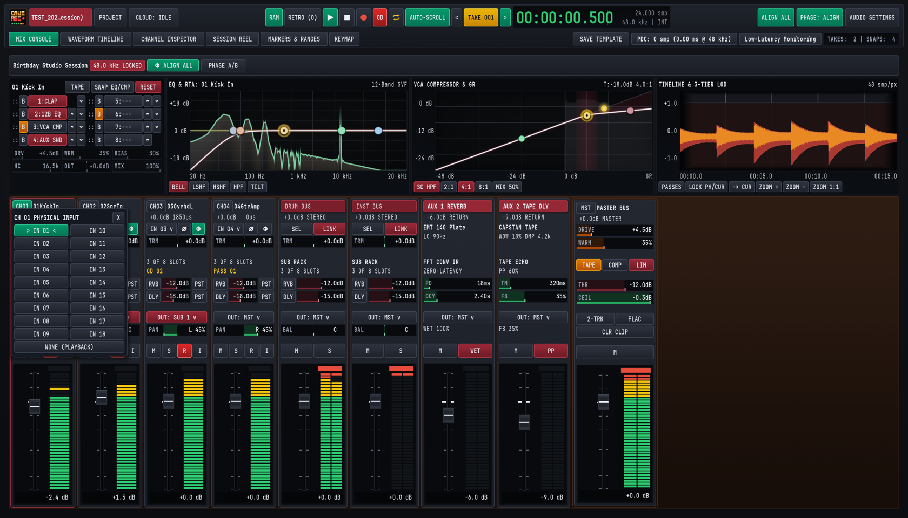
Clicking the Physical Input Selector (IN 01 v) opens the CH NN PHYSICAL INPUT popover menu, allowing you to bind the channel strip to any physical hardware input (IN 01 through IN 18) on your connected USB, Thunderbolt, or ADAT audio interface, or select NONE (PLAYBACK) for dedicated mixdown or virtual instrument return tracks.
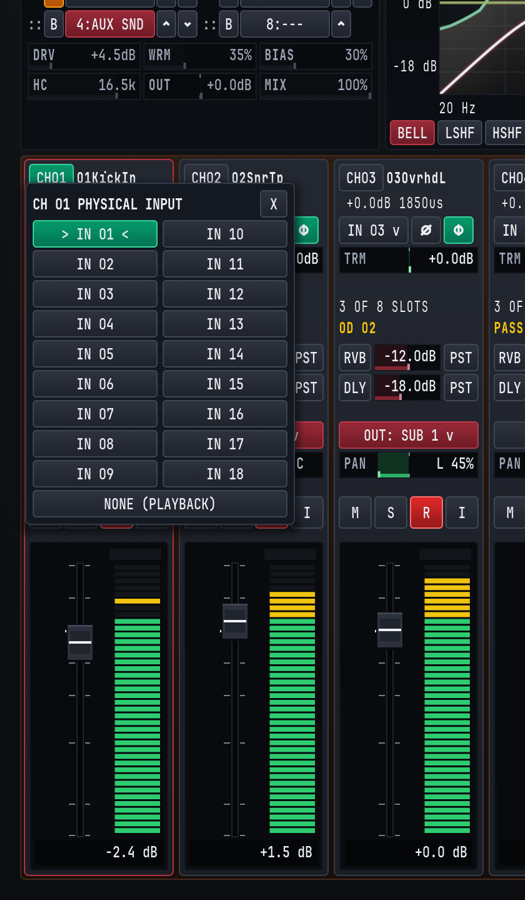
Directly to the right of the input dropdown sit two phase-conditioning switches:
Ø(Polarity Invert, SHIFT + P on the inspected strip): Reverses the positive and negative waveform excursions by180°. It illuminates cyan when active (for example, onCH02 02SnrTpwhen phase-aligning a snare microphone against overheads or a bottom snare mic).Φ(Sub-Sample Phase Alignment): Illuminates emerald when automatic or manual multi-mic time alignment is active on the channel, applying a positive delay between0.00 msand+50.00 ms(0 usto50,000 us) as shown in the header telemetry line. See Chapter 5: Built-In Processors, Phase Alignment & CLAP Plugins for the complete multi-mic alignment workflow.
Below the input and phase row, the horizontal Input Trim (TRM) bar adjusts pre-insert gain from -24.0 dB to +24.0 dB around a center 0.0 dB detent. Use TRM to normalize hot or quiet microphone preamplifiers so that raw stems hit disk around -18 dBFS to -12 dBFS RMS with generous headroom before entering the 8-slot processing rack.
4.2.3 Zone 3 & Zone 4: Insert Rack Summary, Active Pass Badge & Aux Sends#
Zone 3 provides instant status feedback for both insert processing and track-level Pass selection:
N OF 8 SLOTS: Reports how many of the channel's eight reorderable processor slots are currently populated (for example,3 OF 8 SLOTSwhen12B EQ,VCA CMP, andAUX SNDare active).- Active Pass Badge (
PASS 01/OD 02): Displays in gold which track-level Pass is currently active inside the loaded Session Take.PASS 01indicates the originalRec001Base Pass captured when theTakebegan at00:00:00.000, whileOD 02,OD 03, and higher indicate subsequent track-level Overdub Passes (Rec002-OD,Rec003-OD) recorded inside that sameTake.
Zone 4 houses the two stereo Auxiliary Sends:
RVB(Aux 1 Reverb Send): Feeds the console's stereo convolution reverb processor (AUX 1 REVERB), adjustable from-inf(-60.0 dB) to+12.0 dBby dragging horizontally across the crimson send bar.DLY(Aux 2 Tape Delay Send): Feeds the console's stereo capstan tape echo processor (AUX 2 TAPE DLY), adjustable from-inf(-60.0 dB) to+12.0 dB.- 3-Way Send Tap Selector (
PRE/EQ/PST): Clicking the tap button to the right of either send cycles through three pickoff points in the channel signal path:PRE(Pre-Insert / Pre-Fader): Taps the signal immediately afterTRM,Ø, andΦ, unaffected by channel EQ, compression, fader moves, or channel Mute (M). Ideal for feeding a dedicated musician headphone cue mix.EQ(Post-EQ / Pre-Fader): Taps the signal immediately after the12B EQslot (so low-cut filters and resonant notch cuts clean up the send) but before the VCA compressor and channel fader.PST(Post-Fader, Default): Taps the signal after the channel insert rack, fader, and Mute switch so that riding the channel fader up or down naturally scales its wet reverb and delay contribution in proportion.
4.2.4 Zone 5, Zone 6 & Zone 7: Output Routing, Switch Bank, Fader & 40-Segment Meter#
Zone 5 controls where the channel's post-fader stereo image is summed:
- Output Bus Selector (
OUT: SUB 1 v,OUT: SUB 2 v,OUT: MST v): Assigns the channel to a stereo Subgroup Bus (illuminated in crimson when routed to a Subgroup such asOUT: SUB 1 vforDRUM BUS) or directly to the stereo Master Bus (OUT: MST v). In the expandedCHANNEL INSPECTORview (CMD/CTRL + 3), clicking the Output Bus selector opens the multi-bus routing popover, where a single track or subgroup can route to multiple Subgroup Buses and the Master Bus simultaneously for parallel bus processing. - Stereo Pan Bar (
PAN): Positions the signal between left (L 100%), center (C), and right (R 100%) using a studio-3.0 dBconstant-power panning law so a signal panned hard left or right maintains the same perceived loudness as when centered.
Zone 6 provides the four primary console switches (M, S, R, I). All four switches can be clicked directly on any strip or toggled via SHIFT shortcuts on the currently inspected channel (leaving unmodified single keys free for global transport and marker actions):
M(Mute, SHIFT + M on inspected strip): Silences the post-fader output andPSTaux sends. Unmodified M drops a cue marker on the timeline without muting audio, and muting a channel on the Mix Console never interrupts pre-fader multitrack stem recording on an armed track.S(Solo, SHIFT + S on inspected strip): Engages Solo-in-Place on the monitor bus so you can inspect an individual microphone or subgroup in stereo context while keeping multitrack recording untouched.R(Record Arm, illuminates red, SHIFT + A on inspected track): Arms the track for multitrack WAV capture when transport Record (R) is engaged, and includes the channel in the rolling 30-minute retroactive memory capture (RAM/RETRO, triggered via SHIFT + R).I(Input Monitor, SHIFT + I on inspected track): Switches the channel strip's input source between automatic disk playback of the active Pass Lane (PASS 01/OD 02) and live monitoring of the physical hardware input (IN 01..IN 18). EnableIwhen rehearsing parts or checking microphone placement while playing back an existingTake.
Zone 7 contains the Logarithmic Studio Fader and 40-Segment Peak/RMS Meter:
- Fader Cap, Scale & Direct Numeric Entry: Provides smooth logarithmic resolution around the
0.0 dBunity gain mark, ranging from+12.0 dBdown to-inf(-60.0 dB), with a dedicated numeric dB readout at the bottom of the meter well (-2.4 dB,+1.5 dB,+0.0 dB). Clicking the numeric dB readout below any fader opens an inline text entry box where you can type an exact decibel value (such as-3.5or0) and press ENTER. - 40-Segment LED Bargraph: Combines instantaneous digital sample peak detection (including a floating yellow peak-hold segment and red
0.0 dBFSoverload latch) with continuous RMS loudness ballistics:- Emerald Segments (
-48 dBto-12 dB): Nominal tracking and mixing operating zone. - Amber Segments (
-12 dBto-3 dB): Healthy transient peak zone. - Red Cap (
-3 dBto0.0 dBFS): Digital full-scale peak warning. ClickCLR CLIPon the Master Bus or in the Channel Inspector (or press X in the Channel Inspector) to clear latched clip indicators.
- Emerald Segments (
4.3 Subgroup Buses, Aux Returns & Master Bus#
To the right of the Input Track strips sit the console's stereo summing and return strips: Subgroup Buses (DRUM BUS, INST BUS, expandable up to 16 stereo subgroups), two dedicated Stereo Aux Returns (AUX 1 REVERB and AUX 2 TAPE DLY), and the Master Bus (MST MASTER BUS).
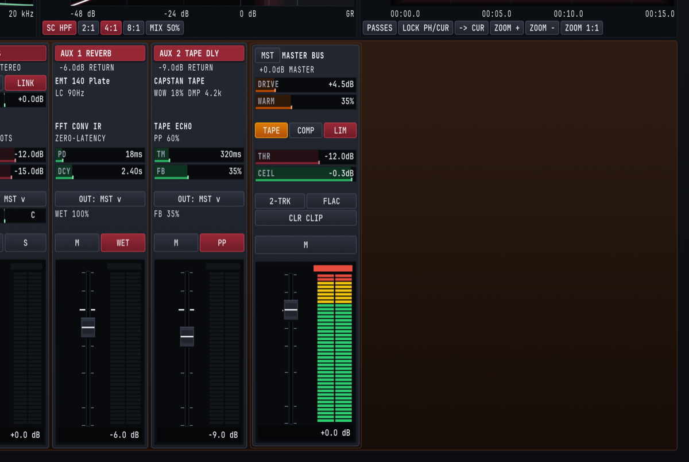
4.3.1 Stereo Subgroup Buses (DRUM BUS / SUB 1, INST BUS / SUB 2 .. SUB 16)#
Subgroup Buses let you sum related Input Tracks (such as all drum microphones into DRUM BUS, or guitars and keys into INST BUS) so you can process the entire group through a shared 8-slot insert rack and control its overall level with a single stereo fader.
Each Subgroup Bus strip provides:
- Crimson Bus Header & Stereo Readout: Displays the custom bus name (
DRUM BUS,INST BUS) and current stereo fader gain (+0.0dB STEREO). SEL(Select Bus for Inspection): ClickingSELloads the Subgroup Bus into the four Upper Console Wells (CMD/CTRL + 1) and theCHANNEL INSPECTORview (CMD/CTRL + 3). Every Cave Recorder Subgroup Bus owns a full 8-Slot ReorderableSUB RACKwith its own Tape Saturation stage, 12-Band Parametric EQ with Dual-Trace RTA, Analog VCA Bus Compressor, and CLAP plugin slots.LINK(Stereo Dynamics & Gain Link): Illuminates crimson when enabled, locking left and right detector sidechains and gain stages across the stereo bus so off-center floor tom or guitar hits never skew the stereo center image.- Subgroup Trim (
TRM,-24.0 dBto+24.0 dB): Gain-stages the summed multi-channel signal before it enters the Subgroup's 8-slotSUB RACK. If summing eight hot drum tracks drives the subgroup bus compressor too hard, pull backTRMonDRUM BUSrather than disturbing your individual drum fader balance. SUB RACKStatus (3 OF 8 SLOTS): Indicates how many processors are active in the subgroup's insert rack.- Subgroup Aux Sends (
RVB&DLY): Sends the entire post-rack subgroup mix toAUX 1 REVERB(default-12.0 dB) orAUX 2 TAPE DLY(default-15.0 dB, range-infto+12.0 dB) to place a whole drum kit or horn section into the same acoustic room. - Output Bus Selector (
OUT: MST v) & Stereo Balance (BAL): Routes the subgroup to theMASTER BUS(or cascades into downstream higher-numbered subgroups via the multi-bus routing popover in the Channel Inspector) and adjusts left/right stereo balance (L 100%..C..R 100%). - Bus Mute (
M), Solo (S), Fader (-infto+12.0 dB) & 40-Segment Meter: Controls final subgroup level and solo isolation. Soloing a Subgroup Bus automatically solos its contributing post-fader input channels in the monitor path.
4.3.2 Dedicated Stereo Aux Returns (AUX 1 REVERB & AUX 2 TAPE DLY)#
Cave Recorder includes two hardwired, zero-latency stereo effect return strips so you never have to sacrifice Input Track slots or configure third-party plugins just to set up studio plate reverb and tape slapback during a session:
| Return Strip | Header & Engine Readouts | Interactive Strip Drag Bars | Strip Switches & Routing |
|---|---|---|---|
AUX 1 REVERB |
EMT 140 Plate impulse response name, LC 90Hz input low-cut readout (20 Hz to 1000 Hz), and FFT CONV IR / ZERO-LATENCY engine status. |
PD (Pre-Delay): 0 ms to 200 ms (e.g., 18ms). DCY (Decay Time): 0.20 s to 12.00 s (e.g., 2.40s). |
OUT: MST v routing, WET 100% readout, Mute (M), WET button (toggles 100% full wet vs. 50% blend), Return Fader (-6.0 dB), and 40-segment meter. |
AUX 2 TAPE DLY |
CAPSTAN TAPE model header, WOW 18% DMP 4.2k modulation and high-cut damping readout (500 Hz to 20.0 kHz), and TAPE ECHO / PP 60% width status. |
TM (Delay Time): 1 ms to 2000 ms (e.g., 320ms). FB (Feedback): 0% to 95% strip drag bar (98% engine max, e.g., 35%). |
OUT: MST v routing, FB 35% readout, Mute (M), PP Ping-Pong stereo bounce button, Return Fader (-9.0 dB), and 40-segment meter. |
For complete acoustic modeling details and studio tuning recipes for AUX 1 REVERB and AUX 2 TAPE DLY, see Section 5.5 in Chapter 5.
4.3.3 The Stereo Master Bus (MST MASTER BUS)#
The rightmost strip on the Mix Console is the Master Bus (MST MASTER BUS), which sums all Subgroup Buses, direct Input Tracks, and Stereo Aux Returns into the final stereo program bus feeding your control room monitors and the concurrent Live Stereo Print Recorder.
+-------------------------------------------------------------------+
| MST MASTER BUS PROCESSING CHAIN |
+-------------------------------------------------------------------+
Summed Stereo Bus (Subgroups + Direct Tracks + Aux Returns)
|
v
[1] MASTER TAPE SATURATION ([TAPE] Toggle, Amber when Active)
* DRIVE: 0.0 dB to +24.0 dB (default +4.5 dB)
* WARM: 0% to 100% harmonic density (default 35%)
|
v
[2] MASTER BUS GLUE COMPRESSOR ([COMP] Toggle)
* Stereo VCA bus compression controlled by THR (-48.0..0.0 dB)
|
v
[3] LOOKAHEAD BRICKWALL LIMITER ([LIM] Toggle, Crimson when Active)
* THR (Threshold): -48.0 dB to 0.0 dB (default -12.0 dB)
* CEIL (True-Peak Ceiling): -6.0 dB to 0.0 dB (default -0.3 dB)
|
v
[4] MASTER FADER (-inf to +12.0 dB) & MASTER MUTE ([M])
|
+---> Main Hardware Monitor Outputs (Channels 1 & 2)
+---> [2-TRK] Live Stereo Print WAV + [FLAC] Bounce ActionEvery control on the MST MASTER BUS strip is designed for immediate tactile operation during tracking and mixing:
DRIVE&WARMDrag Bars: Adjust the input drive (0.0 dBto+24.0 dB, shown at+4.5dB) and analog transformer/oxide warmth (0%to100%, shown at35%) of the Master Tape stage.TAPE,COMP&LIMProcessor Toggles: Independently engage or bypass the Master Tape stage (TAPE, amber), Master Bus Glue VCA Compressor (COMP), and Lookahead Brickwall Limiter (LIM, crimson).THR(Threshold) &CEIL(Brickwall Ceiling) Drag Bars:THR(-48.0 dBto0.0 dB, default-12.0dB) sets the compression and limiting threshold, whileCEIL(-6.0 dBto0.0 dB, default-0.3dB) locks the absolute digital output ceiling so live rehearsalPrintfiles and offlineMixdownrenders never clip inter-sample converter reconstructions.2-TRK(Live 2-Track Print Toggle): When enabled, every transportRecordpass automatically records the post-Master-Bus stereo mix in real time to<TakeFolder>/mix/<SessionID>_Take<NNN>_Print<NNN>_<Stamp>.wav.FLAC(One-Click Master FLAC Bounce): ClickingFLACon the Master Bus renders a lossless 24-bit.flacmixdown of the activeTakeand links it into<ProjectTag>/_Mixes/for immediate band listening and Google Drive synchronization.CLR CLIP(Clear Clip Latches): Resets latched red peak-overload indicators across the Master Bus and all channel meters.- Master Mute (
M), Master Fader (-infto+12.0 dB) & Stereo 40-Segment Meter: Provides final control room level control and high-resolution peak/RMS metering.
4.4 Precision Mouse & Keyboard Modifiers for Faders and Knobs#
All faders, horizontal value bars (TRM, RVB, DLY, PAN, BAL, PD, DCY, TM, FB, DRIVE, WARM, THR, CEIL), rotary knobs, and interactive graph nodes across the Mix Console and Channel Inspector share a unified set of studio mouse gestures and modifier keys.
| Interaction / Gesture | macOS Modifier | Windows / Linux Modifier | Console Behavior |
|---|---|---|---|
| Standard Adjustment | Click + Drag (Vertical on faders/knobs, Horizontal on bars) |
Click + Drag |
Smoothly sweeps the parameter across its normal studio operating curve. |
| 10x Fine Precision Adjustment | SHIFT + Click + Drag |
SHIFT + Click + Drag |
Engages 10x fine-gear resolution (0.1 dB steps on faders, trim, and thresholds, 0.1 Hz on low-frequency EQ bands, 0.01 on Q, and 1% on mix/pan bars). |
| Instant Reset to Unity / Default | Double-Click or OPT + Click |
Double-Click or ALT + Click |
Resets any fader or trim to 0.0 dB unity, any PAN or BAL bar to center (C), and any EQ/compressor parameter to its neutral default. |
| Click-to-Type Numeric dB Entry | Click numeric dB readout below fader, type value, press ENTER |
Click numeric dB readout below fader, type value, press ENTER |
Opens an inline numeric entry field at the bottom of the fader well so you can type an exact level (e.g., -2.5 or 0.0) and press ENTER (or ESC to cancel). |
| Stepped Wheel Adjustment | Mouse Scroll Wheel |
Mouse Scroll Wheel |
Increments or decrements the hovered fader, bar, or knob in calibrated steps. Hovering over an EQ node and scrolling adjusts filter bandwidth (Q). |
| Live Rack Slot Reordering | Drag :: Handle or click ^ / v |
Drag :: Handle or click ^ / v |
Moves a processor slot up or down inside the 8-slot channel or subgroup rack in real time with clickless crossfading and zero audio dropouts. |
| Quick Slot Bypass | Click [B] next to any slot |
Click [B] next to any slot |
Bypasses that individual rack slot (illuminates amber when bypassed) for instant A/B comparison without unloading the processor. |
Built-In Processors, Phase Alignment & CLAP Plugins
12-Band Parametric EQ with Dual-Trace Spectrum Analyzer, Analog VCA Compressor, Tape Saturation, Convolution Reverb, Stereo Tape Delay, Multi-Mic Phase Alignment, and CLAP plugins.
Every Input Track (CH01 through CH18) and every stereo Subgroup Bus (SUB 1 through SUB 16) in Cave Recorder includes a dedicated, reorderable 8-Slot Processing Rack powered by zero-latency 64-bit internal studio processors alongside external .clap plugin hosting, automatic multi-mic phase alignment, and dedicated stereo Auxiliary Returns.
This chapter covers the dual-view inspection workflow (Upper Console Wells vs. full-screen CHANNEL INSPECTOR), the Tape Saturation (TAPE) stage, the 12-Band Parametric EQ & Dual-Trace Spectrum Analyzer (EQ & RTA), the Analog VCA Compressor (VCA COMPRESSOR & GR), the Stereo Convolution Reverb (AUX 1 REVERB) and Stereo Tape Delay (AUX 2 TAPE DLY), Automatic Multi-Mic Phase & Polarity Alignment (ALIGN ALL & Φ), and CLAP Audio Plugin Hosting (1:CLAP, PDC & Low-Latency Monitoring).
5.1 Upper Console Wells vs. Dedicated CHANNEL INSPECTOR View#
Cave Recorder provides two complementary workspaces for viewing and shaping the processors on any Input Track or Subgroup Bus:
- The Four Upper Console Wells (
MIX CONSOLEView, CMD/CTRL + 1): Docked permanently along the upper deck of the Mix Console so you can adjust inserts, EQ curves, and compression while keeping all channel faders and bus meters in view. - The Dedicated
CHANNEL INSPECTORView (CMD/CTRL + 3): Expands the selected channel or subgroup across the entire screen with a high-resolution Dual-Trace Real-Time Spectrum Analyzer, dedicated rotary parameter knobs, multi-bus output routing popovers, and a scrolling Gain Reduction history trace.
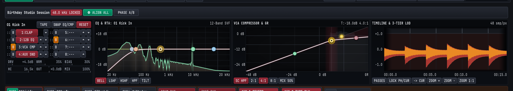
5.1.1 The Four Upper Console Wells (MIX CONSOLE)#
Clicking any Input Track header (CH01..CH18) or clicking the SEL button on any Subgroup Bus (DRUM BUS, INST BUS) immediately binds the four Upper Console Wells to that strip:
| Upper Well | Header Label | Core Controls & Displays |
|---|---|---|
| Well 1 (Far Left) | <Track/Bus Name> (e.g., 01 Kick In or DRUM BUS) |
Quick action buttons (TAPE, SWAP EQ/CMP, RESET), the 8-Slot Reorderable Rack (Slots 1..8 with :: drag handles, B bypass switches, and ^ / v move arrows), and the 6-parameter Tape Saturation bar bank (DRV, WRM, BIAS, HC, OUT, MIX). |
| Well 2 (Center-Left) | EQ & RTA: <Track Name> (12-Band SVF) |
Interactive 20 Hz to 20 kHz parametric response graph (-18 dB and +18 dB reference gridlines with full -24 dB to +24 dB band range), draggable band nodes, real-time spectrum trace, and filter shape pills (BELL, LSHF, HSHF, HPF, TILT). The 12-Band SVF badge indicates the 12-band precision studio filter bank. |
| Well 3 (Center-Right) | VCA COMPRESSOR & GR (T:-18.0dB 4.0:1) |
Interactive transfer curve (-48 dB to 0 dB), threshold and knee handles, live red Gain Reduction (GR) shading, and quick-setting pills (SC HPF, 2:1, 4:1, 8:1, MIX 50%). |
| Well 4 (Far Right) | TIMELINE & 3-TIER LOD (48 smp/px) |
Multi-resolution (3-TIER LOD) scrolling waveform monitor for the selected channel with Pass Lane and zoom triggers (PASSES, LOCK PH/CUR, -> CUR, ZOOM +, ZOOM -, ZOOM 1:1). |
5.1.2 Full-Screen CHANNEL INSPECTOR View (CMD/CTRL + 3)#
Pressing CMD + 3 (macOS) or CTRL + 3 (Windows/Linux) switches to the dedicated CHANNEL INSPECTOR view. Along the top selector bar, single-click pills (01 Kick In, 02 Snare Top, 03 Overhead L, 04 Guitar Amp, DRUM BUS, INST BUS) let you step across every Input Track and Subgroup Bus in the session without returning to the Mix Console.
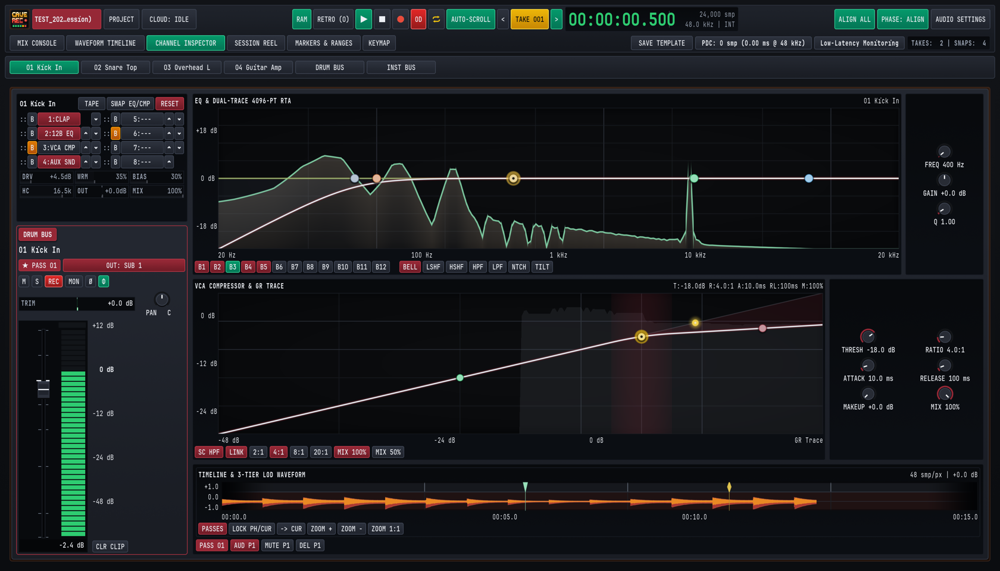
In the CHANNEL INSPECTOR view, the left column anchors a full-height channel strip (complete with active Pass selector * PASS 01 on Input Tracks or STEREO SUBGROUP / SUBGROUP BUS badges on Subgroups, Output Bus selector, M, S, REC, MON, Ø, Φ, TRIM, rotary PAN, full-scale calibrated meter with +12 dB to -48 dB markings, and CLR CLIP), while the main workspace expands:
EQ & DUAL-TRACE 4096-PT RTA: Adds direct band-select buttons for all 12 bands (B1throughB12), all seven filter shape buttons (BELL,LSHF,HSHF,HPF,LPF,NTCH,TILT), and dedicated precision rotary knobs on the right (FREQ,GAIN,Q).VCA COMPRESSOR & GR TRACE: Adds a continuous scrolling Gain Reduction (GR Trace) timeline, extended ratio and parallel blend buttons (SC HPF,LINK,2:1,4:1,8:1,20:1,MIX 100%,MIX 50%), and six dedicated rotary knobs on the right (THRESH,RATIO,ATTACK,RELEASE,MAKEUP,MIX).- Multi-Bus Output Routing Popover: Clicking the green
OUT: MSTor crimsonOUT: SUB 1button in the left inspector strip opens theOUTPUT BUSESpopover ([x] MASTER BUS,[ ] SUB 2: INST BUS), allowing any track or subgroup to feed multiple buses in parallel. - Bottom Track Waveform & Pass Action Bar: Below the compressor graph, the inspector waveform strip provides quick Pass Lane actions for the active
Take:PASSES(or E) expands Pass Lanes,PASS 01selects the active pass,AUD P1auditions that pass in isolation,MUTE P1mutes the pass, andDEL P1deactivates and hides the pass from playback. - Dedicated Inspector Keyboard Shortcuts: While inspecting any strip, press H to toggle the compressor Sidechain High-Pass Filter (
SC HPF), X to clear the channel peak overload latch (CLR CLIP), E to expand or collapse Pass Lanes (PASSES), or SHIFT + M / S / A / I / P to toggle Mute, Solo, Record Arm, Input Monitor, or Polarity (Ø).
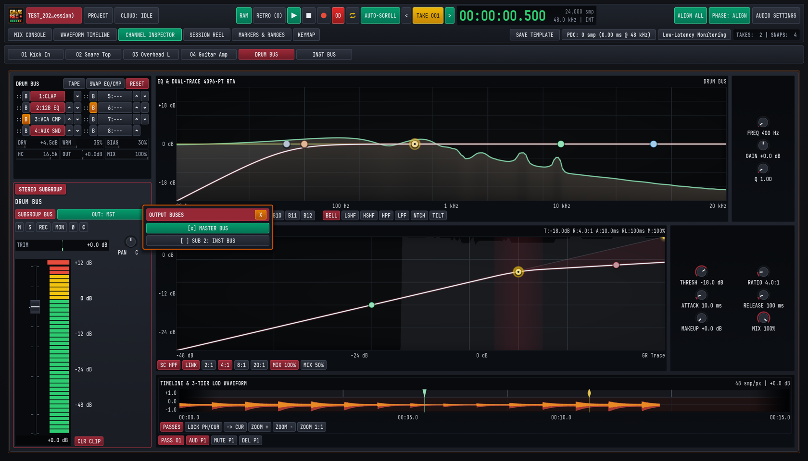
5.1.3 Reordering the 8-Slot Rack, SWAP EQ/CMP & RESET#
In Well 1 (01 Kick In or DRUM BUS), the eight processing slots (1 through 8) execute sequentially from Slot 1 down to Slot 8:
- Dragging
::or Clicking^/v: Reorders any processor (1:CLAP,2:12B EQ,3:VCA CMP,4:AUX SND) to an earlier or later slot in real time without audio clicks or dropouts. Moving4:AUX SNDabove3:VCA CMP, for example, taps the channel's Aux Sends before compression even when the send is set to rack-tap mode. SWAP EQ/CMPButton: Instant one-click macro in the top-left rack header that swaps the slot positions of the12B EQandVCA CMPprocessors. UseSWAP EQ/CMPto audition whether filtering low-end mud before the compressor detector (EQ -> CMP) or shaping tonal balance after dynamic peak control (CMP -> EQ) sounds more natural on a vocal, bass, or drum bus.B(Slot Bypass) &RESET: ClickingBnext to any slot (or on the12B EQ/VCA CMPbadge) bypasses that single processor in place (illuminated amber). Clicking the crimsonRESETbutton returns all built-in processors on the selected strip to their flat factory defaults.
5.2 Tape Saturation & Input Drive (TAPE)#
Located in Well 1 beneath the 8-slot rack, the built-in Tape Saturation (TAPE) processor models the non-linear magnetic hysteresis, transformer core warmth, bias asymmetry, and head-bump high-frequency roll-off of a calibrated analog multitrack tape machine running at 15 or 30 IPS.
Click the TAPE pill in the Well 1 header to engage or bypass the tape stage on the selected Input Track or Subgroup Bus.
5.2.1 Tape Saturation Parameter Reference#
| Parameter | UI Label | Range | Default | Acoustic & Signal Effect |
|---|---|---|---|---|
| Input Drive | DRV |
0.0 dB to +24.0 dB |
+4.5 dB |
Pushes signal level into the magnetic saturation transfer curve, smoothly soft-clipping fast transient spikes while increasing harmonic density. |
| Harmonic Warmth | WRM |
0% to 100% |
35% |
Controls the low-mid transformer head-bump and low-order (2nd and 3rd) harmonic enrichment between 80 Hz and 350 Hz. |
| Tape Bias | BIAS |
0% to 100% |
30% |
Adjusts virtual AC bias current. Lower values (10% to 25%) emphasize gritty odd-order harmonics, while higher values (40% to 75%) produce smooth, warm even-order compression. |
| High-Cut Roll-Off | HC |
4.0 kHz to 20.0 kHz |
16.5 kHz |
Simulates analog tape high-frequency self-erasure and smooths out harsh cymbal sizzle, close-mic brass bite, or digital guitar amp fizz. |
| Output Trim | OUT |
-12.0 dB to +12.0 dB |
+0.0 dB |
Compensates for loudness gained from DRV so you can A/B the TAPE button at matched perceived volume. |
| Parallel Wet/Dry Mix | MIX |
0% to 100% |
100% |
Blends the dry uncompressed input signal with the saturated tape path directly inside the processor. |
5.2.2 Studio Tape Recipes for Tracking & Mixing#
| Source Material | DRV |
WRM |
BIAS |
HC |
OUT |
MIX |
Sonic Goal |
|---|---|---|---|---|---|---|---|
Snare Top (02SnrTp) |
+6.5 dB |
40% |
35% |
14.5 kHz |
-2.5 dB |
100% |
Rounds off paper-thin stick transients by 3 dB to 4 dB on the peak meter while thickening the 200 Hz shell fundamental. |
| Bass DI Harmonic Weight | +9.0 dB |
65% |
25% |
8.5 kHz |
-4.0 dB |
70% |
Generates audible upper harmonics (200 Hz to 900 Hz) on a clean DI bass so the note pitch cuts through small speakers while keeping 30% clean sub-fundamental via MIX. |
Drum Bus Glue (DRUM BUS) |
+3.5 dB |
35% |
50% |
17.5 kHz |
-1.5 dB |
100% |
Cohesively binds kick, snare, and overheads together and absorbs micro-transients before the signal reaches the Subgroup VCA Compressor. |
| Harsh Guitar Cab Ribbon/SM57 | +4.0 dB |
50% |
60% |
11.0 kHz |
-1.5 dB |
100% |
Softens 4 kHz to 8 kHz pick harshness and adds spongy analog midrange push. |
5.3 12-Band Parametric EQ & Dual-Trace Spectrum Analyzer (EQ & RTA)#
Each Input Track and Subgroup Bus features a precision 12-Band Parametric Equalizer (2:12B EQ) paired with a Dual-Trace High-Resolution Real-Time Spectrum Analyzer (EQ & DUAL-TRACE 4096-PT RTA). Designed for zero-zipper-noise live adjustment, the equalizer handles everything from steep sub-bass rumble filtering and surgical snare-ring notch removal to broad, musical spectral tilt shaping.
5.3.1 12-Band EQ Parameter & Filter Shape Reference#
| Control / Filter Shape | UI Badge / Knob | Range / Behavior | Default | Studio Application |
|---|---|---|---|---|
| Band Selectors | B1 .. B12 |
12 independent bands | B1..B5 active |
Selects which band (B1 through B12) is bound to the filter shape pills and right-hand rotary knobs (FREQ, GAIN, Q). |
| Bell (Peaking) | BELL |
Proportional-Q peaking/dipping | Default on mid bands | Boosts or cuts a targeted frequency band around FREQ with bandwidth controlled by Q. |
| Low Shelf | LSHF |
Shelving below corner FREQ |
Band B2 |
Boosts or attenuates all frequencies below FREQ (e.g., adding 80 Hz kick weight or thinning muddy acoustic guitar low-mids). |
| High Shelf | HSHF |
Shelving above corner FREQ |
Band B5 |
Adds 10 kHz vocal and overhead air or shelves down overly bright cymbal bleed. |
| High-Pass Filter (Low-Cut) | HPF |
Steep low-cut below FREQ |
Band B1 |
Removes stage floor rumble, air-conditioning hum, and plosive energy from vocals, guitars, and overheads. |
| Low-Pass Filter (High-Cut) | LPF |
Steep high-cut above FREQ |
Optional | Rolls off ultrasonic hiss, guitar amp buzz above 7 kHz, or hi-hat bleed in kick and tom microphones. |
| Surgical Notch | NTCH |
Deep narrow band-reject | Optional | Eliminates annoying metallic snare drum overtones, acoustic guitar body wolf notes, or 50 Hz/60 Hz mains hum without dulling adjacent frequencies. |
| Spectral Tilt | TILT |
Linear dB/octave fulcrum tilt | Optional | Pivots the entire frequency spectrum around FREQ (default 1 kHz). Positive gain brightens highs while simultaneously attenuating lows, and negative gain warms lows while softening highs. |
| Center / Corner Frequency | FREQ |
20.0 Hz to 20,000 Hz |
Band-dependent | Sets the target frequency for the selected band (B1..B12). |
| Band Gain | GAIN |
-24.0 dB to +24.0 dB |
+0.0 dB |
Sets boost or attenuation depth for BELL, LSHF, HSHF, and TILT shapes (plotted against -18 dB, 0 dB, and +18 dB horizontal reference lines). |
| Bandwidth / Resonance | Q |
0.10 (wide) to 18.00 (narrow) |
1.00 |
Controls filter sharpness on BELL/NTCH bands or corner resonance/slope steepness on HPF, LPF, LSHF, and HSHF. |
5.3.2 Operating Interactive EQ Nodes & Reading the Dual-Trace RTA#
You can shape EQ either via the right-hand rotary knobs (FREQ, GAIN, Q) in the CHANNEL INSPECTOR view (CMD/CTRL + 3) or by manipulating the colored band nodes directly inside the EQ & RTA graph on both the Mix Console and Channel Inspector:
- Click + Drag Node Horizontally / Vertically: Sweeps
FREQ(20 Hzto20 kHz) andGAIN(-24.0 dBto+24.0 dB) simultaneously. - Mouse Scroll Wheel (or SHIFT + Vertical Drag) Over a Node: Narrows or widens the filter
Q(0.10to18.00). - SHIFT + Drag Node: Engages
10xfine precision (0.1 dBgain steps and sub-Hz frequency resolution) for locking onto exact room resonances. - Double-Click Node (or OPT/ALT + Click): Resets the band's
GAINto0.0 dB.
Behind the white composite EQ curve, the Dual-Trace High-Resolution Real-Time Spectrum Analyzer (4096-PT RTA) renders two live acoustic traces simultaneously:
- Pre-EQ Input Spectrum (Darker Shaded Trace): Shows the raw frequency energy entering the
12B EQslot. - Post-EQ Output Spectrum (Bright Emerald Trace): Shows the resulting frequency energy leaving the
12B EQslot after all active bands are applied.
Because the high-resolution analyzer resolves narrow intervals down into the lowest bass octaves (20 Hz to 250 Hz), you can visually distinguish between the 55 Hz fundamental of a kick drum and the 82 Hz low E string of a bass guitar, place a narrow BELL or NTCH node directly on a ringing 480 Hz snare overtone spike, and watch the emerald post-EQ trace flatten out in real time.
5.4 Analog VCA Compressor & Gain Reduction Meter (VCA COMPRESSOR & GR)#
The Analog VCA Compressor (3:VCA CMP) models a classic studio voltage-controlled amplifier dynamics processor (inspired by large-format British console bus compressors and fast American VCA limiters). It combines punchy transient control with a built-in Sidechain High-Pass Filter (SC HPF, shortcut H in the Channel Inspector) and New York Parallel Mix (MIX) stage.
5.4.1 VCA Compressor Parameter Reference#
| Parameter / Switch | UI Label | Range / Presets | Default | Studio Function |
|---|---|---|---|---|
| Threshold | THRESH |
-60.0 dB to 0.0 dB |
-18.0 dB |
Sets the input level (dBFS) above which gain reduction begins. Drag the yellow threshold node directly on the transfer graph or turn the THRESH knob. |
| Ratio | RATIO (2:1, 4:1, 8:1, 20:1) |
1.0:1 to 20.0:1 |
4.0:1 |
Determines how strongly signal excursions above THRESH are attenuated. Use the quick-ratio buttons (2:1 gentle leveling, 4:1 studio punch, 8:1 aggressive control, 20:1 peak limiting) or sweep continuously with the RATIO knob. |
| Attack Time | ATTACK |
0.1 ms to 100.0 ms |
10.0 ms |
Controls how quickly the VCA gain cell clamps down once a transient crosses THRESH. Slow attacks (15 ms to 35 ms) let drum stick snap pass through uncompressed, while fast attacks (0.5 ms to 3 ms) tame sharp peaks. |
| Release Time | RELEASE |
10.0 ms to 1000.0 ms |
100.0 ms |
Controls how fast gain recovers to 0.0 dB after the signal drops below THRESH. Set release so gain reduction recovers smoothly in time with the song's tempo without audible pumping. |
| Makeup Gain | MAKEUP |
0.0 dB to +24.0 dB |
+0.0 dB |
Restores output level to match the uncompressed peak or perceived loudness. |
| Parallel Wet/Dry Mix | MIX (MIX 100%, MIX 50%) |
0% to 100% |
100% |
Blends the uncompressed dry signal with the compressed VCA output. Click MIX 50% for instant 50/50 New York-style parallel compression. |
| Sidechain High-Pass | SC HPF (H in Inspector) |
Off / Active (crimson, 90 Hz HPF) |
Active on drums/bus | Inserts a 90 Hz high-pass filter into the compressor's detector circuit so heavy kick drum sub-bass energy does not trigger excessive gain reduction across the rest of the frequency spectrum. |
| Stereo Sidechain Link | LINK |
Off / Linked (crimson) | Linked | Links left and right level detectors on stereo channels and Subgroup Buses so both channels compress identically and preserve stereo imaging. |
5.4.2 Interactive Transfer Curve & Real-Time Gain Reduction (GR) Trace#
The VCA COMPRESSOR & GR graph displays input level (-48 dB to 0 dB) on the horizontal axis against output level (-24 dB to 0 dB) on the vertical axis:
- Interactive Threshold & Knee Nodes: Drag the highlighted gold node along the diagonal line to set
THRESH, and drag the upper slope handle (or click2:1,4:1,8:1,20:1) to tilt the compression ratio above threshold. - Scrolling Gain Reduction (
GR Trace): As audio passes through the compressor, a shaded crimson trace sweeps across the graph showing instantaneous and historical gain reduction depth in decibels. Watching theGR Tracealongside the waveform makes it easy to dialATTACKandRELEASEso the compressor breathes cleanly between snare hits or vocal phrases.
5.4.3 Studio Starting Settings for Common Sources#
| Source / Bus | RATIO |
ATTACK |
RELEASE |
SC HPF |
MIX |
Target GR |
Why It Works |
|---|---|---|---|---|---|---|---|
| Kick In & Snare Top | 4:1 |
18.0 ms |
80.0 ms |
Off | 100% |
-3 to -6 dB |
The 18 ms attack lets the initial beater click and stick crack pass through at full impact before clamping the drum decay, adding punch and tightening sustain. |
| Bass Guitar (DI or Amp) | 4:1 or 8:1 |
12.0 ms |
140.0 ms |
On (SC HPF) |
80% |
-4 to -7 dB |
Engaging SC HPF prevents the low E (41 Hz) and B (31 Hz) strings from over-triggering the VCA cell, keeping low and high notes at equal volume across the fretboard. |
| Lead & Backing Vocals | 2:1 or 4:1 |
6.0 ms |
120.0 ms |
On (SC HPF) |
100% |
-3 to -5 dB |
Catches loud chorus phrases smoothly while keeping intimate verses intelligible above the band without requiring constant fader riding. |
Drum Bus (DRUM BUS) Parallel Crush |
8:1 or 20:1 |
10.0 ms |
75.0 ms |
On (SC HPF) |
50% (MIX 50%) |
-8 to -12 dB |
Heavy compression brings up room ambience and snare sustain, while MIX 50% retains 100% of the dry, natural drum transients in parallel. |
5.5 Stereo Convolution Reverb (AUX 1 REVERB) & Stereo Tape Delay (AUX 2 TAPE DLY)#
To keep CPU overhead near zero while providing authentic vintage studio ambience during live tracking and mixing, Cave Recorder provides two dedicated stereo Aux Return processors fed by the RVB and DLY send bars on every Input Track and Subgroup Bus.
5.5.1 AUX 1 REVERB: Zero-Latency Acoustic Convolution Reverb#
AUX 1 REVERB uses a zero-latency real-time acoustic convolution engine (FFT CONV IR / ZERO-LATENCY) loaded with studio impulse responses, headed by the classic EMT 140 Plate alongside Studio Wood Room, Live Stone Chamber, and Vintage Spring Tank spaces.
| Parameter | UI Label | Range | Default | Studio Function |
|---|---|---|---|---|
| Acoustic Space / IR | Header Model Name | EMT 140 Plate, Studio Room, Chamber, Spring |
EMT 140 Plate |
Selects the acoustic impulse response profile loaded into the stereo convolution engine. |
| Input Low-Cut Filter | LC (LC 90Hz) |
20 Hz to 1000 Hz |
90 Hz |
Filters low-frequency rumble and kick/bass bleed out of the reverb input so the reverb tail stays airy and never muddies the low end of the mix. |
| Pre-Delay | PD |
0 ms to 200 ms |
18 ms |
Inserts a short clean gap before the reverb tail begins. Setting PD between 18 ms and 45 ms preserves upfront dry vocal clarity while creating the illusion of a larger room (the Haas effect). |
| Decay Time | DCY |
0.20 s to 12.00 s |
2.40 s |
Scales the RT60 reverberation decay envelope (0.8 s to 1.4 s for tight drum rooms, 1.8 s to 2.8 s for classic vocal/snare plates, 3.5 s+ for ambient ballads). |
| Wet Level Toggle | WET (WET 100%) |
100% Full Wet / 50% Blend |
100% (crimson) |
Toggles the return strip between 100% pure wet bus operation and 50% attenuated wet level while keeping AUX 1 REVERB solo-safe. |
5.5.2 AUX 2 TAPE DLY: Capstan Analog Tape Delay#
AUX 2 TAPE DLY models a multi-head magnetic capstan tape echo unit (CAPSTAN TAPE / TAPE ECHO) complete with mechanical transport wow and flutter, oxide saturation, high-frequency head damping, and stereo ping-pong regeneration.
| Parameter | UI Label | Range | Default | Studio Function |
|---|---|---|---|---|
| Capstan Wow & Flutter | WOW (WOW 18%) |
0% to 100% |
18% |
Introduces organic capstan motor speed drift and subtle pitch modulation on echoes, widening vocals and guitar leads without synthetic chorus artifacts. |
| High-Frequency Damping | DMP (DMP 4.2k) |
500 Hz to 20.0 kHz |
4.2 kHz |
Places a warm analog low-pass filter inside the feedback loop so each successive echo repeat becomes progressively darker and tucks neatly behind the dry performance. |
| Delay Time | TM |
1 ms to 2000 ms |
320 ms |
Sets the echo interval between 10 ms doubling, 75 ms to 115 ms rockabilly/vocal slapback, and 250 ms to 600 ms rhythmic quarter-note or dotted-eighth throws. |
| Feedback Regeneration | FB |
0% to 95% drag bar (98% max) |
35% |
Controls how much delayed output is fed back into the virtual record head (0% for a single slapback repeat, 25% to 45% for natural fading trails, and up to 95%/98% for sustained dub tape repeats without runaway clipping). |
| Ping-Pong Width & Toggle | PP (PP 60%) |
Off / Active (0% to 100% width) |
Active (60%) |
Alternates echo repeats between the left and right channels at the selected stereo spread width (PP 60%) while keeping AUX 2 TAPE DLY solo-safe. |
5.6 Automatic Multi-Mic Phase & Polarity Alignment (ALIGN ALL & Φ)#
When recording a drum kit, guitar cabinet, acoustic piano, or horn section with multiple microphones, physical distance differences between capsules create acoustic arrival-time offsets. Sound travels through studio air at approximately 343 meters per second (1,125 feet per second), meaning every 34.3 cm (13.5 inches) of extra distance between a close microphone and an overhead or room microphone delays the acoustic wavefront by 1.0 millisecond (1000 microseconds, or 48 samples at 48.0 kHz).
5.6.1 Why Multi-Mic Time Offsets Cause Comb Filtering & Hollow Low End#
When two microphones capture the same instrument at slightly different arrival times and are summed together on DRUM BUS or MST MASTER BUS:
- Frequencies whose half-wavelength matches the time offset arrive
180°out of phase and cancel each other out, carving deep, hollow notches across the frequency spectrum (known as comb filtering). - A snare drum captured by both
02SnrTp(close dynamic mic) and03OvrhdL(condenser mic63 cm/25 inchesabove the snare) suffers a1.85 ms(1850 us) arrival delay at the overhead capsule. Without phase alignment, summing the overheads with the close snare mic thins out the200 Hzsnare body and smears the initial stick transient into a double flam. - Similarly, a snare bottom microphone pointed upward at the snare wires moves in the opposite mechanical direction from the top snare microphone, requiring a
180°polarity inversion (Ø) in addition to time alignment.
5.6.2 Running ALIGN ALL & Auditioning with PHASE: ALIGN / PHASE A/B#
Cave Recorder eliminates manual waveform sliding and guesswork through its built-in Sub-Sample Multi-Mic Phase & Polarity Alignment engine:
- Record a Short Pass or Play Back an Existing Take: Have the drummer play the full kit for a few bars (or load any recorded
Takeon the timeline). - Click
ALIGN ALLin the Top Deck (orΦ ALIGN ALLon the Console Bar): Cave Recorder analyzes the acoustic arrival-time relationship and waveform polarity across the microphones in your session and delays closer microphones forward in time to match the furthest reference microphone. - Inspect Per-Channel
ØandΦReadouts: Within milliseconds, each aligned channel strip updates its header telemetry and phase buttons:Ø(Cyan Polarity Badge, SHIFT + P on inspected strip): Engages automatically on any channel whose acoustic waveform is inverted180°relative to the reference microphone (such asCH02 02SnrTpor a bottom snare mic).Φ(Emerald Phase Align Badge) & Microsecond Readout: Engages sub-sample time alignment (0.00 msto+50.00 ms, displayed in microseconds from0usto50000us, such as420usonCH02and1850usonCH03) so all wavefronts arrive at the subgroup summing bus at the exact same sub-sample instant.
- A/B Audition Globally (
PHASE: ALIGN/PHASE A/B): Click the emeraldPHASE: ALIGNbutton in the Top Deck (or thePHASE A/Bbutton on the Mix Console toolbar) to toggle all phase and polarity corrections in and out across the entire console simultaneously. You will immediately hear the kick and snare low-end punch tighten up and the stereo center image snap into focus. BothRun Multi-Mic Phase AlignmentandToggle Global Phase A/Bcan also be bound to custom keyboard shortcuts in theKEYMAPview (CMD/CTRL + 6).
5.7 Hosting External CLAP Audio Plugins (1:CLAP, PDC & Low-Latency Monitoring)#
While Cave Recorder's built-in TAPE, 12B EQ, VCA CMP, AUX 1 REVERB, and AUX 2 TAPE DLY processors cover 95% of studio tracking and mixing tasks with zero added latency, any of the eight insert slots (Slots 1..8) on any Input Track or Subgroup Bus can also host third-party CLAP (Clever Audio Plug-in, .clap) effects processors.
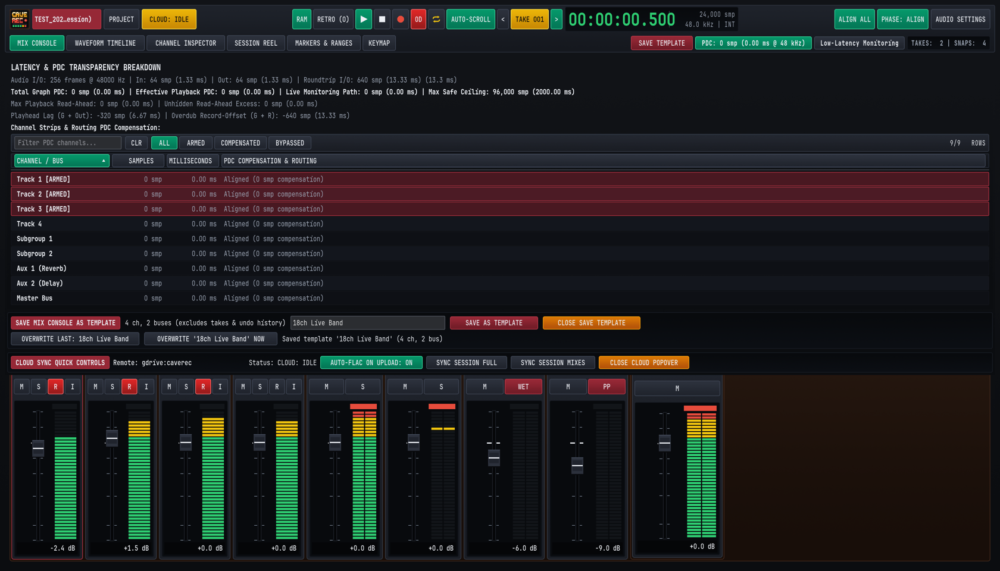
5.7.1 Scanning & Loading .clap Plugins into the 8-Slot Rack#
Cave Recorder automatically scans the standard operating system CLAP plugin directories on startup:
- macOS:
/Library/Audio/Plug-Ins/CLAPand~/Library/Audio/Plug-Ins/CLAP - Windows:
C:\Program Files\Common Files\CLAPand%LOCALAPPDATA%\Programs\Common\CLAP - Linux:
~/.clapand/usr/lib/clap
To load and operate a CLAP plugin on an Input Track or Subgroup Bus:
- Select the target track or click
SELon the target Subgroup Bus, then look at the 8-slot rack in Upper Well 1 (CMD/CTRL + 1) or the left column ofCHANNEL INSPECTOR(CMD/CTRL + 3). - Click any empty slot (
5:---..8:---) or an existing1:CLAPslot pill to assign a scanned.clapplugin to that slot, or open the plugin's native floating graphical editor window. - Use the slot's
::drag handle or^/varrows to position the CLAP plugin anywhere in the signal chain (for example, placing a third-party de-esser or dynamic resonance suppressor in1:CLAPahead of2:12B EQand3:VCA CMP). - Click the slot's
Bbutton at any time to bypass the CLAP plugin in place.
5.7.2 Automatic Plugin Delay Compensation (PDC) & Transparency Breakdown#
All built-in Cave Recorder processors (TAPE, 12B EQ, VCA CMP, AUX 1 REVERB, AUX 2 TAPE DLY) operate with zero internal sample latency (0 smp / 0.00 ms). However, when you insert a third-party CLAP plugin that uses internal lookahead buffering (such as linear-phase equalizers or lookahead limiters), that plugin reports its processing delay (in samples) to Cave Recorder.
To prevent phase cancellation or timing drift between parallel tracks and subgroups, Cave Recorder performs Automatic Plugin Delay Compensation (PDC) across the entire mixing graph:
- The Top Deck displays a live
PDC: N smp (X.XX ms @ 48 kHz)status pill at all times. - Clicking the
PDCpill in the Top Deck opens the Latency & PDC Transparency Breakdown popover (shown in Figure 5.4 above), which reports every latency stage in your studio system in both Samples (smp) and Milliseconds (ms):Audio I/O: Current hardware buffer size (256 frames @ 48000 Hz), input buffer latency (In: 64 smp / 1.33 ms), output buffer latency (Out: 64 smp / 1.33 ms), and calibrated hardwareRoundtrip I/O(640 smp / 13.33 ms).Total Graph PDC&Effective Playback PDC: Total delay compensation applied across parallel tracks and buses (Max Safe Ceiling: 96,000 smp / 2000.00 ms).Playhead Lag&Overdub Record-Offset: Exact negative sample offset (-640 smp / 13.33 ms) applied automatically when writing new Overdub Passes (Rec002-OD) to disk so that everything a musician plays against playback lands sample-accurately on the timeline.- Filterable Per-Channel Table (
ALL,ARMED,COMPENSATED,BYPASSED): Lists every Input Track (Track 1 [ARMED]..Track 18),Subgroup 1..2,Aux 1 (Reverb),Aux 2 (Delay), andMaster Buswith its individual sample and millisecond compensation state.
5.7.3 Low-Latency Monitoring During Overdubs#
When you are late in a mix and have inserted a high-latency lookahead mastering plugin or linear-phase EQ on a track or Subgroup Bus, recording a last-minute vocal or guitar overdub through that high-latency plugin would introduce a distracting echo in the musician's headphones.
Clicking Low-Latency Monitoring in the Top Deck solves this immediately:
- Cave Recorder temporarily bypasses high-latency CLAP plugins only on record-armed (
R) live monitoring paths and their downstream buses, dropping the musician's headphone monitoring latency back down to pure zero-latency built-in console processing (0 smpgraph PDC). - All unarmed playback tracks continue playing with full Plugin Delay Compensation.
- As soon as you finish recording the Overdub Pass and disarm the track (or toggle
Low-Latency Monitoringoff in the Top Deck), the high-latency CLAP plugins re-engage automatically without losing a single plugin parameter setting.
Waveform Timeline, Pass Lanes, Markers & Ranges
2D waveform scrub-zooming, expandable Pass Lanes for overdub comping, dropping cue markers on the fly, defining loop ranges, and splitting Takes.
Every multitrack recording in Cave Recorder is a self-contained Take with its own timeline starting at 00:00:00.000 (t = 0). Rather than stringing an entire evening of rehearsals along a multi-hour horizontal scroll bar or stacking separate songs on top of one another, the timeline always focuses on one active Take at a time. Within that active Take, you can scrub and zoom sample-accurate waveforms, expand Pass Lanes to comp track-level overdubs, drop timestamped cue markers on the fly, loop rehearsal sections, and split long jams into individual song Takes.
6.1 Navigating the WAVEFORM TIMELINE View & Upper Mini-Timeline Well#
Cave Recorder provides two synchronized timeline viewports for the currently active Take:
- Upper Mini-Timeline Well (
TIMELINE & 3-TIER LODon the Mix Console): Located in the right-hand well of the Upper Inspector Row on theMIX CONSOLEview (CMD/CTRL + 1). It displays the waveform of the currently inspected track alongside quick-access transport and zoom keys so you can scrub, zoom, and switch Passes without leaving the faders. - Full-Screen
WAVEFORM TIMELINEWorkspace (CMD/CTRL + 2): Displays all active tracks simultaneously with dedicated Marker (MKR) and Range (RNG) lanes, per-track headers, expandable Pass Lanes, and a two-row editing toolbar.
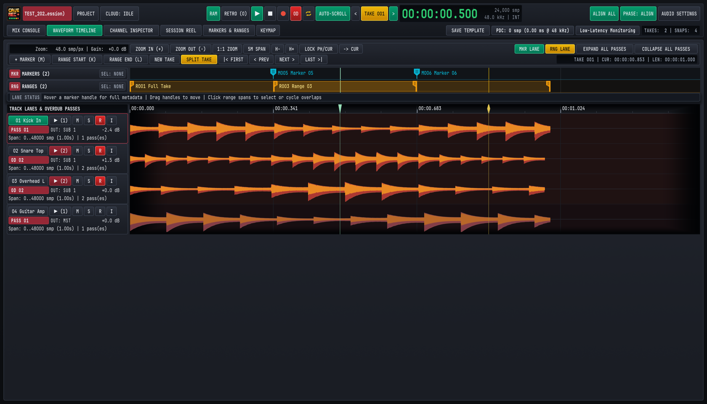
6.1.1 Three-Tier Waveform Detail (3-TIER LOD) & Viewport Readouts#
Both the Upper Mini-Timeline Well and the full-screen WAVEFORM TIMELINE view render audio using three-tier waveform detail (3-TIER LOD), covering full-song overview envelopes, medium phrase zoom, and individual sample-level waveform display. As you zoom from a 30-minute rehearsal jam down to a single snare transient, the display transitions across pre-computed resolution tiers so transient peaks remain sharp at every scale without frame drops.
The upper-left readout of the WAVEFORM TIMELINE toolbar displays the current horizontal resolution in samples per pixel (Zoom: 48.0 smp/px) and the visual waveform gain offset (Gain: +0.0 dB), while the right-hand status readout confirms the active Take number, cursor timestamp, and total Take duration (TAKE 001 | CUR: 00:00:00.853 | LEN: 00:00:01.000).
6.1.2 Upper Mini-Timeline Well Controls#
At the bottom of the TIMELINE & 3-TIER LOD well on the Mix Console (Chapter 4: Mix Console, Signal Flow & Channel Strips), six dedicated hardware buttons control the inspected track's timeline:
| Control | Keyboard Shortcut | Function |
|---|---|---|
PASSES |
E | Expands or collapses the Pass Lanes for the currently inspected channel so you can switch or mute individual overdub passes directly from the console. |
LOCK PH/CUR |
Configurable in KEYMAP |
Toggles locking the Playhead (PH, green triangle) and the Position Cursor (CUR, amber diamond) together. When locked, clicking to place the cursor moves the playback start position simultaneously. When unlocked, the Position Cursor can be placed independently as an edit or zoom anchor while playback continues. |
-> CUR |
. | Snaps the transport Playhead immediately to the current Position Cursor location. |
ZOOM + |
= | Zooms horizontally into the waveform by one octave (halving the smp/px span). |
ZOOM - |
- | Zooms horizontally out of the waveform by one octave (doubling the smp/px span). |
ZOOM 1:1 |
0 | Fits the active Take to the viewport width (or resets to the default 1:1 overview span). |
6.1.3 Full-Screen WAVEFORM TIMELINE Toolbar & Track Headers#
Pressing CMD/CTRL + 2 (or clicking WAVEFORM TIMELINE in the navigation bar) opens the multi-track timeline workspace. Above the waveform canvas, two toolbar rows provide direct access to zoom, lane visibility, marker placement, and Take splitting:
- Row 1 (Viewport & Lane Controls):
ZOOM IN (+)/ZOOM OUT (-)/1:1 ZOOM: Step horizontal zoom in (=), step out (-), or reset horizontal zoom to the default 1:1 span (0).5M SPAN: Sets the visible horizontal window to a standard 5-minute (300.0 s) rehearsal span. New sessions and live recordings initialize to this 5-minute span automatically.H-/H+(Track Lane Height): Steps the vertical height of all track waveform lanes between56 px(compact 18-channel overview) and220 px(tall surgical transient inspection). Track header heights on the left stay locked 1:1 with their waveform lanes.LOCK PH/CUR&-> CUR: Identical to the Mini-Timeline well controls, allowing coupled or decoupled Playhead and Position Cursor operation.MKR LANE&RNG LANE: Toggle visibility of the dedicatedMARKERSandRANGESruler lanes above the audio tracks.EXPAND ALL PASSES&COLLAPSE ALL PASSES: Unrolls (E) or collapses (SHIFT + E) the overdub Pass Lanes across every track in the active Take simultaneously.
- Row 2 (Markers, Ranges & Take Split Bar):
+ MARKER (M)/RANGE START (K)/RANGE END (L): Drops a cue marker at the Playhead (M) or defines the start (K) and end (L) boundaries of a loop or song range.NEW TAKE&SPLIT TAKE: Extracts the active range as a new self-contained Take (NEW TAKE) or divides the active Take into two consecutive Takes at the current Playhead/Cursor position (SPLIT TAKE).|< FIRST/< PREV/NEXT >/LAST >|: Jumps the Playhead to the first marker (SHIFT + [ or HOME), previous marker ([), next marker (]), or final marker (SHIFT + ] or END) in the active Take.
Each row in the left-hand TRACK LANES & OVERDUB PASSES column displays the track number and scribble-strip name (01 Kick In), the Pass Lane disclosure button (▶ (1) or ▶ (2) showing the number of recorded Passes on that track in the current Take), Mute (M), Solo (S), Record Arm (R), and Input Monitor (I) switches, the active Pass badge (PASS 01 or OD 02), the output bus assignment (OUT: SUB 1 or OUT: MST), the channel fader readout (-2.4 dB), and the sample span summary (Span: 0..48000 smp (1.00s) | 2 pass(es)).
6.1.4 Complete Reference of Timeline Navigation & Zoom Gestures#
Cave Recorder supports fast one-handed 2D Scrub-Zooming directly on the timeline ruler and waveform canvas, alongside standard mouse wheel, trackpad, and keyboard navigation:
| Gesture / Action | Input / Shortcut | Behavior |
|---|---|---|
| Reposition Playhead / Cursor | Single-Click (< 4 px travel) on ruler or waveform canvas |
Places the crisp 1 px Playhead or Position Cursor at the clicked timestamp. Automatically snaps to Take start (00:00:00.000) and Take end boundaries within 8 px. |
| Bypass Boundary Snapping | Hold SHIFT or CMD/CTRL + Click | Places the Playhead or Position Cursor at the exact sub-sample mouse coordinate without snapping to Take boundaries. |
| 2D Ruler / Canvas Scrub-Zoom | Click + Drag Vertically (up/down) on ruler or canvas | Continuously zooms the timeline exponentially in or out anchored directly to the sample beneath the cursor (or around the Playhead when LOCK PH/CUR is active). |
| 2D Ruler Scrub / Canvas Pan | Click + Drag Horizontally (left/right) on ruler or canvas | Dragging horizontally on the ruler scrubs the Playhead across the Take. Dragging horizontally on the waveform canvas pans the visible time window left or right. |
| Nudge Timeline Cursor | LEFT / RIGHT (hold SHIFT for 10x step) |
Nudges the Position Cursor (and the Playhead when LOCK PH/CUR is active) backward or forward by a fine or coarse sample step. |
| Horizontal Scroll Pan | Two-Finger Horizontal Trackpad Scroll or SHIFT + Mouse Wheel | Smoothly pans the visible viewport backward or forward across the active Take. |
| Modifier Scroll Zoom | CMD/CTRL + Mouse Wheel | Zooms horizontally in or out anchored at the current mouse pointer position. |
| Step Zoom In / Out | ZOOM IN (+) (=) / ZOOM OUT (-) (-) |
Zooms horizontally in or out by one octave per press. |
Reset Zoom (1:1) |
1:1 ZOOM / ZOOM 1:1 (0) |
Resets horizontal zoom and scroll to the default 1:1 overview span. |
| Toggle Timeline Auto-Scroll | AUTO-SCROLL in Top Deck (configurable in KEYMAP) |
Follows the advancing Playhead automatically during playback and live recording, paging the viewport forward whenever the Playhead reaches the right edge. Manually panning during playback temporarily suspends following until re-engaged. |
| Snap Playhead to Cursor | -> CUR (.) |
Moves the green transport Playhead to the amber Position Cursor immediately. |
6.2 Recording Overdubs (OD) & Comping in Expandable Pass Lanes (PASSES)#
In Cave Recorder, session-level songs and track-level overdubs are strictly separated so your timeline never becomes cluttered:
- Base Pass (
Rec001, labeledPASS 01): When Overdub Mode (OD) is off (the default), pressing Record (R) creates a brand-new session Take starting at00:00:00.000. Every armed channel strip records its initial multitrack stem asRec001(PASS 01). - Overdub Pass (
Rec002-OD,Rec003-OD, ..., labeledOD 02,OD 03, ...): When you want to layer a second guitar solo, punch in a vocal fix, or try three alternate bass lines inside the currently active Take, latch the redODbutton in the Top Deck transport bar (O) and arm only the target track(s). Pressing Record (R) plays back the existing tracks of the active Take from00:00:00.000while recording a new Overdub Pass (OD 02,OD 03, ...) into the active Take'srec/folder and appending a new Pass Lane under each armed track.
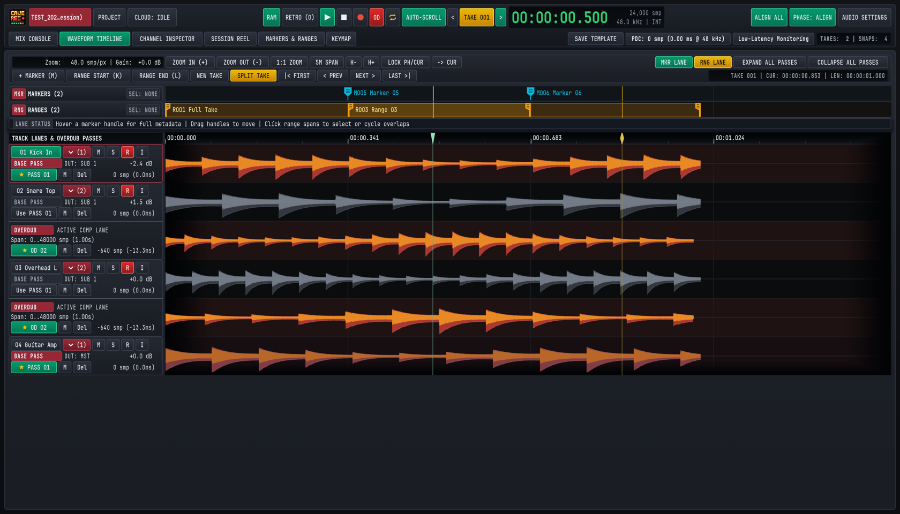
6.2.1 Step-by-Step: Recording Multi-Pass Overdubs on a Track#
- Load the Target Take: Use the
</>buttons besideTAKE 001in the Top Deck (ALT + [ / ALT + ]) or clickLOAD TAKEin theSESSION REELview (CMD/CTRL + 4) to load the Take you want to overdub onto. - Disarm Backing Tracks & Arm the Overdub Track: On the Mix Console or in the left track header column of the
WAVEFORM TIMELINEview, disarm (Roff) the backing band tracks (drums, rhythm section) so they stream from disk, and arm (Rlit crimson) only the channel(s) you are overdubbing. Enable input monitoring (I/MON) if you are monitoring through Cave Recorder's console EQ and compression. - Latch Overdub Mode (
OD): ClickODin the Top Deck transport bar (or press O) so theODindicator illuminates red. - Optional Pre-Roll or Cycle Range: Position the Playhead a few bars before the section you want to overdub, or enable Cycle Loop (
⇄, C) across a defined range (Section 6.3). - Record the Overdub Pass: Press Record (R) to begin playback and capture
OD 02. Press Stop (SPACE or SHIFT + SPACE) when finished. Cave Recorder automatically promotes the newly recorded Overdub Pass (★ OD 02) as the active playback Pass on that track and captures a post-recording Snapshot.
6.2.2 Expanding Pass Lanes, Auditioning Passes & Comping Phrases#
When a track within the active Take has more than one recorded Pass, the disclosure badge in the track header displays the total Pass count (for example, ▶ (2) on 02 Snare Top and 03 Overhead L).
- Expand or Collapse a Single Track's Pass Lanes:
- Click the
▶ (N)/▼ (N)badge in the track header on theWAVEFORM TIMELINEview. - Or select the track and click
PASSESin the Upper Mini-Timeline Well (or press E while in theCHANNEL INSPECTORview).
- Click the
- Expand or Collapse All Tracks' Pass Lanes:
- Click
EXPAND ALL PASSES(E) orCOLLAPSE ALL PASSES(SHIFT + E) in the upper-rightWAVEFORM TIMELINEtoolbar.
- Click
When expanded, each track unrolls its vertical stack of Pass Lanes in chronological order (BASE PASS PASS 01 at the top, followed by OVERDUB OD 02, OD 03, and so on):
- Visual Active vs. Standby Distinction: The currently active Pass Lane (labeled
ACTIVE COMP LANEwith a green★ PASS 01or★ OD 02badge) renders its waveform in bright amber-copper. Inactive Pass Lanes (labeledSTANDBY COMP LANEwith aUse PASS 01orUse OD 02button) render in muted slate-grey so you can immediately see which Pass is feeding the Mix Console channel strip. - Auditioning & Promoting Passes:
- Promoting a Pass on the
WAVEFORM TIMELINEView: ClickUse PASS 01(orUse OD 02,Use OD 03) in any standby Pass Lane header to promote that Pass as the active playback lane (ACTIVE COMP LANE) immediately. Because playback readers pre-buffer ahead of the Playhead, switching Passes during playback crossfades cleanly without clicks. - Promoting a Pass from the
MIX CONSOLEorCHANNEL INSPECTORView: ClickPASSESin the Upper Mini-Timeline Well (or press E in theCHANNEL INSPECTORview) to expand the inspected channel's Pass Lanes, and clickUse PASS <NN>orUse OD <NN>on the Pass you want to hear.
- Promoting a Pass on the
- Per-Pass Mute (
M) & Soft Delete (Del):- Click
Mon a Pass Lane to silence that Pass without changing your channel strip Mute state. - Click
Delon a flawed Pass Lane to mark that Pass as deleted in the session history. Because deletion is non-destructive, pressing CMD/CTRL + Z restores the Pass immediately.
- Click
- Comping Phrases Across Multiple Passes:
- When an overdub was punched in over a specific chorus or solo section (for example,
Span: 240000..480000 smp), promoting that Overdub Pass plays your new performance across its recorded span while allowing you to compare it directly against the underlyingPASS 01Base Pass or alternateOD 03passes. Every Pass promotion is recorded in the Undo history and stored in Console Snapshots (Chapter 7: Session Reel, Mixdowns, Snapshots, Disk Layout & Cloud Sync) so you can save and compare multiple comp combinations across the session.
- When an overdub was punched in over a specific chorus or solo section (for example,
6.3 Dropping Cue Markers & Defining Cycle Loop Ranges (MARKERS & RANGES)#
During a live rehearsal jam or playback review, you can drop timestamped Markers and define bounded Ranges without stopping the transport. Markers and Ranges appear both as interactive flags in the MKR and RNG lanes of the WAVEFORM TIMELINE view and as sortable, searchable rows in the dedicated MARKERS & RANGES workspace (CMD/CTRL + 5).
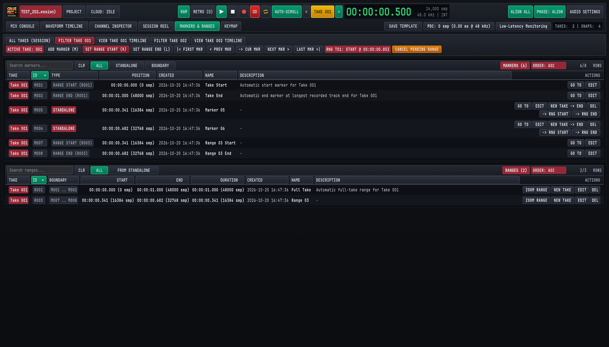
6.3.1 Dropping & Navigating Cue Markers on the Fly (M)#
Every Take automatically initializes with two boundary markers (M001 Take Start at 00:00:00.000 and M002 Take End at the end of the longest recorded stem, forming the default R001 Full Take range). To mark song transitions, solo entrances, or mix notes:
- Drop a Marker (M): Press M at any time during live recording or playback (or click
+ MARKER (M)in theWAVEFORM TIMELINEtoolbar orADD MARKER (M)in theMARKERS & RANGEStoolbar). Cave Recorder places a cyan standalone marker flag (M005 Marker 05,M006 Marker 06) at the exact sample position of the rolling Playhead (or at the Position Cursor when transport is stopped). - Reposition a Marker by Dragging: In the
MKR MARKERSlane of theWAVEFORM TIMELINEview, hover over any cyan marker flag to inspect its metadata, or click and drag the marker handle left or right to fine-tune its sample timestamp. - Jump Between Markers: Use the toolbar buttons or keyboard shortcuts to navigate between cue points instantly:
- Previous Marker (
< PREV/< PREV MKR): Press [. - Next Marker (
NEXT >/NEXT MKR >): Press ]. - First Marker in Take (
|< FIRST/|< FIRST MKR): Press SHIFT + [ or HOME. - Last Marker in Take (
LAST >|/LAST MKR >|): Press SHIFT + ] or END.
- Previous Marker (
6.3.2 Defining Ranges (K / L) & Cycle Loop Playback (⇄)#
A Range (R001, R003, ...) is a named time span bounded by a RANGE START marker and a RANGE END marker. Ranges are used for Cycle Loop playback, overdub punch/loop rehearsal, zooming to a song section, and extracting a song section as a new Take.
- Mark Range Start (
RANGE START (K)): Move the Playhead or Position Cursor to the beginning of the phrase (or press it live as the band hits the downbeat) and press K (or clickRANGE START (K)/SET RANGE START (K)). An amber status pill (RNG T01: START @ 00:00:00.853) appears in the toolbar indicating that a range start boundary is pending. - Mark Range End (
RANGE END (L)): When playback reaches the end of the section, press L (or clickRANGE END (L)/SET RANGE END (L)). Cave Recorder pairs the start and end boundaries, creates a new numbered Range span (such asR003 Range 03) in the amberRNG RANGESlane, and selects it as the active loop range. - Cancel a Pending Boundary (ESC): If you pressed K by mistake, press ESC or click
CANCEL PENDING RANGEto discard the uncompleted boundary. - Select, Drag, or Cycle Overlapping Ranges: In the
RNG RANGESlane above the waveforms, click any amber range bar to make it the active range (clicking repeatedly on overlapping spans cycles through them). Drag the left[or right]handle of any range bar in theRNGlane to adjust its start or end sample directly on the timeline. - Toggle Cycle Loop Playback (
⇄): Click the Cycle Loop button⇄in the Top Deck transport bar (or press C). When⇄is illuminated amber, playback loops continuously between the start and end boundaries of the active Range (or acrossR001 Full Takeif no sub-range is selected).
6.3.3 Managing, Renaming & Filtering in the MARKERS & RANGES View#
Pressing CMD/CTRL + 5 (or clicking MARKERS & RANGES in the workspace navigation bar) opens the MARKERS & RANGES management workspace, divided into two synchronized tables: MARKERS (top) and RANGES (bottom).
- Session-Wide vs. Per-Take Filtering: Use the top filter bar (
ALL TAKES (SESSION),FILTER TAKE 001,FILTER TAKE 002) to view cue points across every Take in the evening's Session at once, or isolate markers belonging to a single Take. ClickingVIEW TAKE 001 TIMELINEjumps directly toWAVEFORM TIMELINEwith that Take loaded. - Marker Type Filtering & Automatic Color Badges: Filter the upper table by
ALL,STANDALONE(crimsonSTANDALONEbadges, such asM005), orBOUNDARY(slateRANGE STARTandRANGE ENDbadges paired to a Range, such asRANGE START (R003)), or type intoSearch markers...to filter by marker name or description note. - Per-Marker Actions (
GO TO,EDIT,-> RNG START,-> RNG END,DEL):GO TO: Loads the owning Take (if not already active) and snaps the transport Playhead directly to that marker's exact sample position.EDIT: Opens inline editing fields to update the marker'sName(for example,Verse 2 Harmonies) and free-formDescriptionnote (SAVE M<NNN>/CANCEL), or clickPRESET MARKER HIGHLIGHT M<NNN>to emphasize key cue points.-> RNG START/-> RNG END: Promotes an existing standalone cue marker into the start or end boundary of a Range so you can drop single-key M markers during a live jam and turn them into bounded song ranges afterward.DEL: Deletes the marker (reversible via Undo CMD/CTRL + Z).
- Range Filtering (
ALL/FROM STANDALONE) & Per-Range Actions (ZOOM RANGE,NEW TAKE,EDIT,DEL):FROM STANDALONEFilter Pill: Filters theRANGEStable (alongsideALL) to show only Ranges whose start or end boundaries were promoted from standalone cue markers via-> RNG START/-> RNG END.ZOOM RANGE: Switches to theWAVEFORM TIMELINEview and zooms the horizontal viewport to frame that exact Range from edge to edge.EDIT: Opens inline fields to rename the Range (for example,R003 Chorus LooporSong 2 - Midnight Drive) and update its description.
6.4 Non-Destructive Take Splitting (Split Take at Playhead / Split by Markers)#
During a band rehearsal, musicians often hit Record once and play a continuous 25-minute block containing warm-up banter, three separate songs, and an improvised jam. Cave Recorder lets you carve that long continuous capture into independent, self-contained t = 0 Takes (Take 002, Take 003, Take 004) so each song gets its own 00:00:00.000 timeline, its own song tag, and its own stereo mixdown.
6.4.1 Three Ways to Split or Extract Independent Takes#
Cave Recorder provides three non-destructive workflows depending on whether you want to divide a Take in two or extract a specific marker/range span:
| Split / Extract Method | Where to Trigger | How It Works |
|---|---|---|
1. Split Take at Playhead / Cursor (SPLIT TAKE) |
Click SPLIT TAKE in the WAVEFORM TIMELINE toolbar |
Divides the active Take at the current Playhead/Cursor timestamp into two consecutive segments: the first part (00:00:00.000 to the split point) remains in the current Take, and the second part (from the split point to the end) becomes a brand-new t = 0 Take (Take<NNN>). |
2. Extract from Marker to End (NEW TAKE -> END) |
Click NEW TAKE -> END on any standalone marker row in the MARKERS & RANGES view (CMD/CTRL + 5) |
Extracts everything from that marker's sample timestamp through the end of the Take into a brand-new t = 0 Take (Take<NNN>), leaving the source Take's full duration untouched. |
3. Extract Bounded Range as New Take (NEW TAKE) |
Click NEW TAKE in the WAVEFORM TIMELINE toolbar (with a Range selected) or click NEW TAKE on any row in the RANGES table (CMD/CTRL + 5) |
Copies the exact sample span between the Range's START and END boundaries (R003) into a brand-new t = 0 Take (Take<NNN>) whose 00:00:00.000 origin corresponds to the start of that Range, leaving the source Take's span untouched. |
6.4.2 How Non-Destructive Splitting Preserves Stems, Passes & Phase Offsets#
When you divide a Take with SPLIT TAKE or extract a span with NEW TAKE:
- Zero Destructive File Overwrites & Full Undo: None of your original
.wavfiles on disk are ever overwritten or deleted. BothSPLIT TAKEandNEW TAKEare tracked in the Session's Undo history, so pressing CMD/CTRL + Z reverses the split or extraction immediately. - Sample-Zero (
t = 0) Alignment: Every multitrack stem in the newly created Take (Take<NNN>) starts at its own00:00:00.000timeline zero aligned to the split or range start point, with Broadcast Wave (bext) timecode metadata preserved. - Pass Structure & Console Routing Preserved: All recorded Base Passes (
Rec001) and Overdub Passes (Rec002-OD) that overlap the extracted span are preserved in their respective Pass Lanes, along with per-track phase alignment offsets, latency compensation metadata, and internal markers shifted relative to the new00:00:00.000origin. - Immediate Session Reel Registration: The newly created Take appears immediately in the
SESSION REELcatalog (Chapter 7: Session Reel, Mixdowns, Snapshots, Disk Layout & Cloud Sync) ready for tagging, live Print conversion, or offline Mixdown rendering.
Session Reel, Mixdowns, Snapshots, Disk Layout & Cloud Sync
Managing Takes, converting live Prints to FLAC, rendering offline Mixdowns and Stem Bounces, comparing Snapshots with Present Stash, disk naming rules, and Google Drive collaboration.
A typical three-hour band rehearsal or studio tracking night produces anywhere from five to twenty recorded Takes alongside evolving console mixes, overdub passes, and stereo mixes for the band group chat. Cave Recorder centralizes all session management inside the SESSION REEL workspace (CMD/CTRL + 4), combining a searchable Takes Catalog, one-click Print-to-FLAC conversion, offline Master Mixdowns and Stem Bounces, non-destructive Console Snapshots with Present Stash protection, a self-documenting disk layout, and built-in two-way Google Drive Cloud Sync.
7.1 Managing Takes in the SESSION REEL View#
Pressing CMD/CTRL + 4 (or clicking SESSION REEL in the workspace navigation bar) opens the Session Reel ledger for the currently open Session.
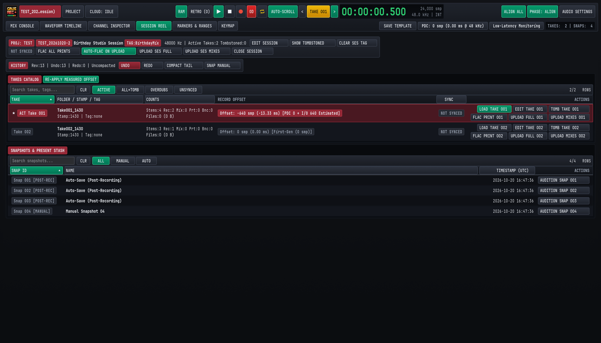
7.1.1 The Session Header & Undo/Redo History Bar#
At the top of the SESSION REEL view, two horizontal control bars summarize the active Session and its edit history:
- Session Metadata & Global Actions Bar:
- Displays the parent Project badge (
PROJ: TEST), the permanent Session ID (TEST_20261020-2), the human-readable Session display title (Birthday Studio Session), the optional folder tag (TAG:BirthdayMix), the hardware sample rate (48000 Hz), and the count of active and soft-deleted Takes. EDIT SESSION&CLEAR SES TAG: Rename the Session's display title or edit/clear its<SessionTag>. Editing a Session tag cleanly renames the Session folder on disk and updates all relative links in<ProjectTag>/_Mixes/without renaming any audio files inside.- Deleted Takes Toggle &
EMPTY TRASH: Toggle visibility of soft-deleted Takes in the catalog (paired with theALL+TOMBfilter pill below) or click the redEMPTY TRASHbutton when soft-deleted Takes are present to permanently remove their audio files from disk. FLAC ALL PRINTS&AUTO-FLAC ON UPLOAD: Batch-convert all uncompressed live stereo Prints across the Session to lossless 24-bit.flacfiles, or automatically convert Prints to.flacwhenever uploading to cloud storage.UPLOAD SES FULL/UPLOAD SES MIXES/CLOSE SESSION: Trigger a full or mixes-only cloud sync for the entire Session, or close the Session and return to thePROJECTbrowser modal (CMD/CTRL + O).
- Displays the parent Project badge (
HISTORYBar (Reversible Undo/Redo & History Pruning):- Every fader drag, EQ node move, phase alignment, marker edit, Pass promotion, and Take deletion is tracked as a reversible step in the Session's command history (
Rev:13 | Undo:13 | Redo:0). Continuous knob or fader gestures automatically group into a single undo step when you release the mouse button. - Click
UNDO(CMD/CTRL + Z) orREDO(CMD/CTRL + SHIFT + Z) to step backward or forward through your session adjustments. - Click
COMPACT TAILto prune the oldest entries from a long undo history. Cave Recorder only compacts older undo steps when an earlier saved Snapshot on disk already covers that historical revision, ensuring no earlier console state is ever lost. - Click
SNAP MANUAL(CMD/CTRL + S) to capture an immediate point-in-time Console Snapshot (Section 7.3).
- Every fader drag, EQ node move, phase alignment, marker edit, Pass promotion, and Take deletion is tracked as a reversible step in the Session's command history (
7.1.2 Switching, Starring, Renaming & Deleting Takes in the TAKES CATALOG#
The TAKES CATALOG table lists every Take recorded or split during the Session. You can filter the catalog using the search box (Search takes, tags...) or the filter pills: ACTIVE (default, showing non-deleted Takes), ALL+TOMB (showing both active Takes and soft-deleted Takes), OVERDUBS (showing only Takes that contain Rec002-OD overdub passes), and UNSYNCED (showing Takes with local changes not yet uploaded to Google Drive).
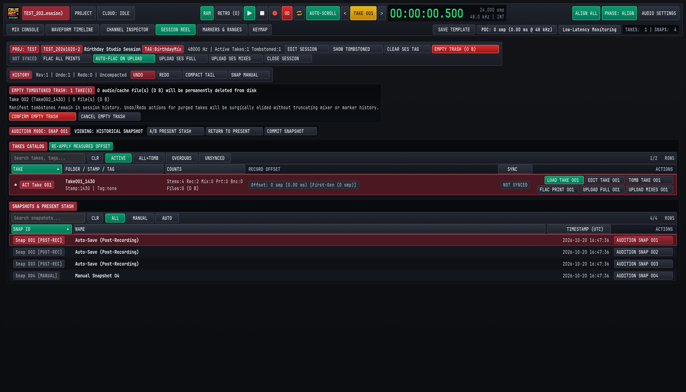
Each row in the TAKES CATALOG provides the following status columns and actions:
| Column / Action | Operation |
|---|---|
Favorite Star (★) |
Click the star icon on the far left of any row to mark a keeper Take. Starring a Take lets bandmates and engineers spot the best performance of a song at a glance. |
Active Take Badge (ACT Take 001) |
Highlights the Take currently loaded into the Mix Console and Waveform Timeline. To switch the active Take, click LOAD TAKE <NNN> in the ACTIONS column, or use the < and > buttons beside TAKE 001 in the Top Deck (ALT + [ and ALT + ]). |
FOLDER / STAMP / TAG |
Shows the on-disk Take folder name (Take001_1430), capture timestamp (Stamp:1430), and optional song tag (Tag:none or Tag:SongA). |
COUNTS |
Summarizes the audio assets inside the Take: multitrack stems (Stems:4), recording passes (Rec:2), rendered offline mixdowns (Mix:0), live stereo prints (Prt:0), and stem bounces (Bnc:0), plus total disk footprint. |
RECORD OFFSET & RE-APPLY MEASURED OFFSET |
Displays the roundtrip latency offset applied to overdub passes in that Take (Offset: -640 smp (-13.33 ms)). If you recalibrate hardware loopback latency in AUDIO SETTINGS (CMD/CTRL + ,), clicking RE-APPLY MEASURED OFFSET in the catalog header updates the alignment offset on the active Take. |
EDIT TAKE <NNN> |
Opens the Take metadata editor to rename the Take's song title, assign or change its alphanumeric <TakeTag> (for example, changing Take001_1947 to Take001_1947_MidnightDrive), and record multi-line rehearsal or mix notes. |
CONVERT TO REAL <NNN> & PURGE RETRO <NNN> |
Shown on Takes captured from the 30-minute rolling memory buffer (RETRO Takes, SHIFT + R). Click CONVERT TO REAL <NNN> to promote a retroactive memory capture into a permanent standard Session Take, or click PURGE RETRO <NNN> to discard an unwanted retroactive capture and reclaim disk space immediately. |
TOMB TAKE <NNN> (Soft Delete) |
Marks an unwanted false-start Take as deleted in the session history and hides it from the ACTIVE view. Soft-deleted Takes are never overwritten or re-downloaded during cloud sync, and can be restored at any time with UNDO (CMD/CTRL + Z) or by viewing ALL+TOMB. |
EMPTY TRASH (CONFIRM EMPTY TRASH) |
When one or more Takes have been soft-deleted, a red EMPTY TRASH button appears in the Session Reel header showing the exact byte count to be reclaimed. Clicking EMPTY TRASH opens a confirmation banner listing the exact Take folders and file counts to be removed from disk. Click CONFIRM EMPTY TRASH to permanently delete those audio files from your drive, or CANCEL EMPTY TRASH to keep them. Even after purging audio files via Empty Trash, the Take remains marked as deleted in the session history so deleted Takes are not re-downloaded during cloud sync. |
7.2 Live Stereo Prints vs. Offline Mixdowns & Stem Bounces#
Cave Recorder provides three distinct stereo and multitrack export workflows so you can share rough rehearsal recordings with the band in seconds or export studio-grade stems for external mastering.
7.2.1 Comparison of Export & Bounce Outputs#
| Output Type | Capture Mode | Signal Path & Destination | Studio Use Case |
|---|---|---|---|
1. Live Stereo Print (Print<NNN>) |
Real-time during every Take. Convert to .flac via FLAC PRINT <NNN> or FLAC ALL PRINTS. |
Live post-Master-Bus stereo mix saved to <TakeFolder>/mix/ (and linked into <ProjectTag>/_Mixes/ once converted to .flac). |
Instant post-rehearsal listening on phones or band group chats without waiting for an offline render. |
2. Offline Stereo Mixdown (Mix<NNN>) |
Faster-than-realtime offline render (including the Master Bus FLAC bounce button). |
Full Mix Console signal path (trims, phase delays, active Pass Lanes, 8-slot inserts, EQ, VCA compression, Subgroup/Aux buses, Master limiter) saved to <TakeFolder>/mix/ and linked into _Mixes/. |
Sharing polished stereo mixes in WAV or 24-bit FLAC after refining faders, EQ, dynamics, or overdub comps. |
3. Offline Stem Bounce (Bounce<NNN>) |
Faster-than-realtime offline multi-stem render. | Individual post-DSP Track channels (<CC>-<TrackName>) and/or Subgroup Buses (Bus<BB>-<BusName>) rendered from 00:00:00.000 into <TakeFolder>/bounce/. |
Delivering phase-aligned, delay-compensated instrument or bus stems (WAV or FLAC) for external remixing or mastering. |
7.2.2 Converting Live Stereo Prints to Lossless FLAC (FLAC PRINT)#
While you are tracking a Take, Cave Recorder writes the live 2-track Master Bus print as an uncompressed .wav file (Print001_<Stamp>.wav) so the audio engine expends zero processor time on compression during live recording. Once the transport stops:
- Convert a Single Take's Print: In the
SESSION REELview (CMD/CTRL + 4), clickFLAC PRINT 001in theACTIONScolumn of that Take row. - Convert All Prints in the Session: Click
FLAC ALL PRINTSin the Session Reel header bar to convert every unconverted.wavPrint across all active Takes in one batch. - Safe Write & Project
_Mixes/Linking: Cave Recorder encodes a lossless 24-bit.flaccounterpart (50-60%smaller than the source.wavfile) in the background before finalizing the file on disk. If local disk space ever runs out during encoding, any incomplete file is removed immediately so corrupt files never appear on disk. Once converted, theFLAC PRINT 001button illuminates in its active state and Cave Recorder automatically places a relative link to the.flacfile inside the top-level<ProjectTag>/_Mixes/folder.
7.2.3 Rendering Offline Stereo Mixdowns & Stem Bounces#
After you refine channel EQ, VCA compression, multi-mic phase alignment (Chapter 5: Built-In Processors, Phase Alignment & CLAP Plugins), or overdub Pass selections (Chapter 6: Waveform Timeline, Pass Lanes, Markers & Ranges), you can render an updated stereo Mixdown (Mix<NNN>) or multitrack Stem Bounce (Bounce<NNN>) faster than real time:
- Load and Verify the Take: Load the target Take into the console (
LOAD TAKE <NNN>) and verify your mute, solo, active Pass Lane, and Master Bus limiter settings. - Render an Offline Stereo Mixdown (
Mix<NNN>): Click theFLACbounce button on the Master Bus strip (Chapter 4: Mix Console, Signal Flow & Channel Strips) or trigger an offline Master Mixdown in 24-bit WAV, 32-bit Float WAV, or 24-bit Lossless FLAC. Cave Recorder processes the entire Take from00:00:00.000through the full console signal path, increments the sequential mix number (Mix001,Mix002, ...), writes the file into<TakeFolder>/mix/, and links it into<ProjectTag>/_Mixes/. - Render Processed Track or Subgroup Stems (
Bounce<NNN>): When exporting stems for an external mix or mastering session, Cave Recorder renders Individual Track Stems (01-Kick-In,02-Snare-Top, ...) and/or Stereo Subgroup Bus Stems (Bus01-Drum-Bus,Bus02-Guitar-Bus, ...) into<TakeFolder>/bounce/inWAVorFLAC. Every bounced stem starts at exact sample0(00:00:00.000) with full Plugin Delay Compensation applied so all stems line up sample-accurately when dragged into any external workstation.
7.3 Non-Destructive Console Snapshots & Present Stash (SNAPS)#
A Console Snapshot (Snap 001, Snap 002, ...) is a complete, point-in-time capture of your entire mixing console and timeline comp state stored as a compact JSON file inside <SessionFolder>/snapshots/. Because Snapshots reference your existing audio stems rather than duplicating .wav files on disk, you can save dozens of mix variations per Session with near-zero disk footprint.
7.3.1 What a Snapshot Captures & Automatic Snapshot Policies#
Every Snapshot records:
- All input channel strip parameters (input trim, 180-degree polarity invert, microsecond acoustic phase delay, reorderable 8-slot processing rack order, 12-band Parametric EQ nodes, VCA Compressor settings, Tape Saturation, CLAP plugin states, Aux send levels and tap points, pan, fader gain, mute, solo, and output bus routing).
- All stereo Subgroup Bus (
SUB 1..16), Aux Return (AUX 1Convolution Reverb,AUX 2Stereo Tape Delay), and Master Bus parameters. - Active Pass Lane selections (
PASS 01,OD 02, ...) and per-pass mute states across every Take in the Session. - The complete compact Undo/Redo history stack at that moment in time, so restoring a Snapshot also restores its undo timeline.
Snapshots are created in three ways and can be filtered in the SNAPSHOTS & PRESENT STASH table at the bottom of the SESSION REEL view using the ALL, MANUAL, and AUTO pills:
- Manual Snapshot (
[MANUAL]): ClickSNAP MANUALin the Session Reel history bar or press CMD/CTRL + S from any view to save a named milestone (for example,Manual Snapshot 04orPre-Vocal-Overdub Balance). - Post-Recording Auto-Save (
[POST-REC]): Automatically captured immediately after every normal recording stop (Auto-Save (Post-Recording)), preserving the exact monitor mix and Pass state that was active when the band finished the Take. (If you abort a false start using the clean-restart discard stop command, the post-recording auto-save is suppressed.) - Periodic 20-Minute Auto-Save (
[AUTO]): Automatically captured every 20 minutes while a Session is open, provided at least one console or timeline action has occurred since the last saved Snapshot.
7.3.2 Auditioning Historical Snapshots with Present Stash Protection#
In traditional mixing consoles, loading an old scene or snapshot overwrites your current unsaved fader moves unless you remember to save a temporary file first. Cave Recorder eliminates this hazard with Present Stash:
- Click
AUDITION SNAP <NNN>to Enter Audition Mode: The moment you clickAUDITION SNAP 001on any row in theSNAPSHOTS & PRESENT STASHtable while working on a live mix, Cave Recorder automatically saves your current unsaved working console state into Present Stash in memory and illuminates the burgundyAUDITION MODE: SNAP 001 | VIEWING: HISTORICAL SNAPSHOTbanner (see Figure 7.2). - Click Through Multiple Historical Snapshots Freely: While in Audition Mode, you can click
AUDITION SNAP 002,AUDITION SNAP 003,AUDITION SNAP 004, and so on across five or more historical Snapshots to compare balances. Your original working mix remains safely locked inside Present Stash the entire time. - Instant Zero-Latency Comparison (
A/B PRESENT STASH): ClickA/B PRESENT STASHin the Audition Mode banner to toggle directly between the historical Snapshot and your stashed present mix while audio is playing. All fader, EQ, and dynamics changes transition via sample-accurate smoothing ramps (5 to 10 ms) without audio clicks. - Restore Your Working Mix (
RETURN TO PRESENTor BACKSPACE): ClickRETURN TO PRESENTin the Audition Mode banner (or press BACKSPACE while in theSESSION REELview) to exit Audition Mode and restore your exact working console state from Present Stash with zero lost fader or EQ moves. - Adopt the Historical Snapshot (
COMMIT SNAPSHOT): If you decide you prefer the historical Snapshot over your previous working state, clickCOMMIT SNAPSHOTto promote that Snapshot as your active live session mix.
7.4 Self-Documenting Disk Folder Structure & File Naming Rules#
Cave Recorder stores all Projects, Sessions, Takes, Passes, Prints, Mixdowns, Stem Bounces, and Snapshots in an open, human-readable directory hierarchy on your drive (defaulting to ~/Music/caverec/ on macOS and Linux, and %USERPROFILE%\Music\caverec\ on Windows). Every folder and audio filename states which Project, Session, Take, Channel, and Pass it belongs to, so any engineer can open the folder in macOS Finder, Windows Explorer, Linux file managers, or any external audio editor ten years from now with zero proprietary database lock-in.
7.4.1 Complete Project & Session Directory Tree on Disk#
Conceptual studio hierarchy (Project -> Session -> Take -> Pass / Prints / Mixdowns / Snapshots):
ProjectName/
└── SessionName/
├── session.json
├── Snapshots/
├── Mixdowns/
├── Prints/
│ └── Take001_LiveMix.flac
└── Takes/
└── Take001_SongName/
├── Pass001_Base/
│ └── Ch01_Kick.wav
└── Pass002_Overdub/
└── Ch09_LeadGtr.wavOn disk inside your Cave Recorder Library Root (~/Music/caverec/), this hierarchy is organized on disk using self-identifying prefixed filenames and a project-wide _Mixes/ index folder:
~/Music/caverec/ # Library Root folder
├── .caverec/
│ ├── projects.json # Local Project registry
│ ├── drive_sync_state.json # Cloud sync state ledger
│ └── templates/
│ └── Default.json # Console session templates
├── GF/ # Project ("Grottfolk")
│ ├── .caverec_project.json # Cloud Project index
│ ├── _Mixes/ # Flat links to Mix* & Print*
│ │ ├── GF_20261015-2_Take001_Print001_1947.flac
│ │ └── GF_20261015-2_Take001_Mix001_2315.flac
│ └── GF_20261015-2_Jam/ # Session folder (tag "Jam")
│ ├── GF_20261015-2_session.json # Console & marker manifest
│ ├── snapshots/ # Saved Console Snapshots
│ │ └── GF_20261015-2_001_2026-10-15_19-34-12.json
│ ├── Take001_1947_Improv/ # Take 001 folder
│ └── Take002_0015_SongB/ # Late-night Take (same day)
└── MISC/ # Built-in default project
└── _Mixes/Inside each individual Take folder (Take001_1947_Improv/), raw multitrack passes, stereo prints/mixdowns, and stem bounces are separated into clean subfolders:
Take001_1947_Improv/ # Take 001 (tag "Improv")
├── GF_20261015-2_Take001_take.json # Take metadata & notes
├── rec/ # Base (Rec001) & Overdub (-OD)
│ ├── GF_20261015-2_Take001_01-Kick-In_Rec001_1947.wav
│ ├── GF_20261015-2_Take001_02-Snare-Top_Rec001_1947.wav
│ ├── GF_20261015-2_Take001_09-LeadGtr_Rec001_1947.wav
│ ├── GF_20261015-2_Take001_09-LeadGtr_Rec002-OD_2210.wav
│ └── GF_20261015-2_Take001_09-LeadGtr_Rec003-OD_20261019-1922.wav
├── mix/ # Live Prints & Mixdowns
│ ├── GF_20261015-2_Take001_Print001_1947.wav
│ ├── GF_20261015-2_Take001_Print001_1947.flac
│ └── GF_20261015-2_Take001_Mix001_2315.flac
├── bounce/ # Track & Subgroup Bounces
│ ├── GF_20261015-2_Take001_01-Kick-In_Bounce001_2315.wav
│ └── GF_20261015-2_Take001_Bus01-Drum-Bus_Bounce001_2315.wav
└── .cache/ # Waveform display cache7.4.2 Canonical File & Folder Naming Reference#
Every file created by Cave Recorder follows consistent, predictable naming rules so files sort chronologically and never collide when dragged into an external folder or shared across operating systems:
| Item | Naming Pattern | Concrete Example |
|---|---|---|
| Project Tag & Folder | 1 to 8 uppercase letters or digits (A-Z, 0-9) |
GF, INSOF, MISC |
Project _Mixes/ Folder |
<ProjectTag>/_Mixes/ (relative links to active Mix* and Print*.flac files) |
GF/_Mixes/GF_20261015-2_Take001_Print001_1947.flac |
| Session ID (Permanent) | <PROJECT_TAG>_<YYYYMMDD> (plus -2, -3, ... for additional sessions on the same session day) |
GF_20261015, GF_20261015-2 |
| Session Folder | <ProjectTag>/<SessionID>[_<SessionTag>] |
GF/GF_20261015-2_Jam |
| Take Folder | Take<NNN>_<Stamp>[_<TakeTag>] |
Take001_1947_Improv |
Base Pass Stem (rec/) |
<SessionID>_Take<NNN>_<CC>-<TrackName>_Rec001_<Stamp>.wav |
GF_20261015-2_Take001_01-Kick-In_Rec001_1947.wav |
Overdub Pass Stem (rec/) |
<SessionID>_Take<NNN>_<CC>-<TrackName>_Rec<MMM>-OD_<Stamp>.wav |
GF_20261015-2_Take001_09-LeadGtr_Rec002-OD_2210.wav |
Live Stereo Print (mix/) |
<SessionID>_Take<NNN>_Print<NNN>_<Stamp>.wav / .flac |
GF_20261015-2_Take001_Print001_1947.flac |
Offline Mixdown (mix/) |
<SessionID>_Take<NNN>_Mix<NNN>_<Stamp>.wav / .flac |
GF_20261015-2_Take001_Mix001_2315.flac |
Track Stem Bounce (bounce/) |
<SessionID>_Take<NNN>_<CC>-<TrackName>_Bounce<NNN>_<Stamp>.wav / .flac |
GF_20261015-2_Take001_09-LeadGtr_Bounce001_2315.wav |
Subgroup Stem Bounce (bounce/) |
<SessionID>_Take<NNN>_Bus<BB>-<BusName>_Bounce<NNN>_<Stamp>.wav / .flac |
GF_20261015-2_Take001_Bus01-Drum-Bus_Bounce001_2315.wav |
Console Snapshot (snapshots/) |
<SessionID>_<NNN>_<YYYY-MM-DD_HH-MM-SS>.json |
GF_20261015-2_001_2026-10-15_19-34-12.json |
Key studio rules governing disk files:
- 08:00 Local Time Session-Day Rollover: A studio session day runs from 08:00 to 07:59 local time the following morning. If your band starts rehearsing on October 15 at
21:00and records a Take after midnight at01:30on October 16, that late-night recording still belongs to session date20261015and receives a four-digit<Stamp>(0130). If you open the same Session four days later on October 19 to record a guitar overdub,<Stamp>automatically expands to include the calendar date (20261019-1922). - Permanent File IDs vs. Editable Folder Tags: The
<SessionID>, Take numbers (Take001,Take002), Pass numbers (Rec001,Rec002-OD), and timestamps are assigned once at creation and never change, and numbers are never reused after a deletion. Editable tags (<SessionTag>likeJamand<TakeTag>likeImprov) appear only in folder names, never inside.wavor.flacfilenames. As a result, you can rename song tags and display titles freely at any time without breaking file references or re-uploading gigabytes of audio to the cloud. - Broadcast Wave (
bext) Headers & Sample-Zero Alignment: Every.wavstem is written with standard Broadcast Wave (bext) metadata embedding the wall-clock origin timecode while aligning the start of the Take to sample0(00:00:00.000).
7.5 Band Collaboration & Google Drive Cloud Sync (CLOUD)#
Cave Recorder includes built-in two-way Google Drive Cloud Sync designed specifically for bands and production teams. Bandmates can pull lightweight stereo .flac Prints, Mixdowns, and Console Snapshots to their laptops immediately after rehearsal, while selectively downloading multi-gigabyte raw multitrack stems only for the Takes they want to remix or overdub at home.
7.5.1 Connecting a Project to Google Drive & Reading the CLOUD Badge#
- Authenticate with Google Drive: Click
PROJECTin the Top Deck (CMD/CTRL + O) to open the Project & Session Browser modal (or click theCLOUD: IDLEstatus badge in the Top Deck). In the topCloud Sync Remoterow, clickCheck / Connect Drive. Cave Recorder opens your default web browser for standard Google OAuth sign-in (with a copyable link fallback for remote studio computers) and stores your credentials securely in your operating system's user configuration folder. - Monitor the Top Deck
CLOUDStatus Pill:CLOUD: IDLE: Connected and ready, with no transfer currently running.CLOUD: SYNCING: Actively uploading or downloading session manifests, mixes, or stems in the background.CLOUD: SYNCED: All local Session changes match the remote Google Drive project index.
- Automatic Real-Time Recording Guard: If a background cloud upload or download is running when you press Record (R) on the transport bar, Cave Recorder automatically pauses and terminates the background transfer immediately so disk and network activity never compete with live multitrack audio capture.
7.5.2 Selective Sync Tiers: MIXES vs. FULL & AUTO-FLAC ON UPLOAD#
Because an evening of 18-channel 48 kHz / 24-bit multitrack stems can total 10 to 30 GB while stereo .flac Prints and Console Snapshots take only a few megabytes, Cave Recorder supports two explicit transfer modes for both uploading and downloading:
| Sync Tier | Upload / Download Buttons | What Is Transferred | When to Use |
|---|---|---|---|
Mixes & Metadata Only (MIXES) |
UPLOAD SES MIXES, UPLOAD MIXES <NNN>, Sync Library (Mixes), DOWNLOAD MIXES |
Session & Take JSON manifests, Markers & Ranges, Console Snapshots (snapshots/), converted .flac Live Prints and Mixdowns (mix/), Stem Bounces (bounce/), and <ProjectTag>/_Mixes/. Skips raw rec/ multitrack WAV stems. |
Right after rehearsal over studio Wi-Fi or mobile hotspot so bandmates can listen to every Take, inspect markers, and audition mixes within seconds. |
Full Multitrack Backup (FULL) |
UPLOAD SES FULL, UPLOAD FULL <NNN>, Sync Library (Full), DOWNLOAD FULL |
Everything in MIXES plus all raw multitrack Base Pass (Rec001) and Overdub Pass (Rec002-OD) .wav stems in rec/. |
Backing up the complete multitrack session to cloud storage, or pulling raw stems of a keeper Take (UPLOAD FULL 001 / DOWNLOAD FULL) to overdub or remix on another computer. |
7.5.3 Sharing a Project with Bandmates (+ Link Remote Project...)#
Each Project in Cave Recorder is an independent sync root, allowing you to keep personal projects in your own Google Drive while linking band projects hosted in a bandmate's Google Drive:
- Share the Project Folder: The bandmate who created the Project shares its
<ProjectTag>folder in Google Drive with the band's Google accounts (or clicksCOPY SHARE LINKin thePROJECTmodal to copy acaverec://project link to the clipboard). - Link the Remote Project: On each bandmate's computer, open the
PROJECTmodal (CMD/CTRL + O) and click+ Link Remote Project.... - Auto-Discovery or Link Paste: Cave Recorder automatically lists all Cave Recorder projects found in your Google Drive
"Shared with me"view for one-click linking, or lets you paste a Google Drive folder URL orcaverec://share URI directly. - Automatic Tag Collision Resolution: Because every Project in your local library must have a unique
<ProjectTag>, if a linked remote project uses a tag (such asGF) that already exists on your machine, Cave Recorder prompts you with three clear choices:RENAME LOCAL PROJECT TAG...: Re-tags your existing local project (for example,GFtoGF2) to freeGFfor the shared band project.MERGE SAME PROJECT (ADOPT REMOTE): Used when two bandmates independently created theGFproject before linking, adopting the shared cloud project identity cleanly.CANCEL: Aborts linking without changing local files.
7.5.4 Exclusive Session Write-Locking (Read-Only Preview) & Zero-Loss Conflict Merging#
When multiple bandmates collaborate on the same Session across different computers, Cave Recorder prevents accidental overwrites using Exclusive Session Write-Locking paired with Snapshot-Backed Conflict Merging:
- Automatic Write Lock on Open & Release on Close:
- When you open a Session while online, Cave Recorder acquires an exclusive edit lock for your computer and automatically pulls any newer cloud metadata if your local copy has no unsaved edits.
- When you close the Session (
CLOSE SESSION) or quit Cave Recorder while online, the edit lock is released automatically so another bandmate can open the Session for editing.
- Opening a Session Locked by a Bandmate (
Read-Only Preview Mode):- If a bandmate currently has the Session open on another computer, Cave Recorder alerts you and offers
OPEN READ-ONLY PREVIEW(recommended),BREAK LOCK & TAKE WRITE ACCESS, orCANCEL. - In
Read-Only Previewmode, an amberREAD-ONLY (LOCKED BY <MACHINE>)badge appears in the header. You have full playback, timeline scrubbing, and live in-memory console mixing (faders, solos, 12-band EQ, VCA compression, and Snapshot auditioning), while transportRecord/Overduband background disk writes are disabled so you never conflict with your bandmate's live recording session. - If you dial in a great mix while in
Read-Only Previewmode, clickSAVE AS LOCAL SNAPSHOTin the header bar to preserve your mix settings locally, or clickTAKE LOCKonce your bandmate finishes.
- If a bandmate currently has the Session open on another computer, Cave Recorder alerts you and offers
- Zero-Loss Merging of Offline Edits, Takes & Deletions:
- Audio files in
rec/,mix/, andbounce/are never overwritten, and new recordings and bounces are always saved as new numbered files. Pulling aMIXESupdate onto the studio computer that holds the rawrec/multitrack WAV stems adds new mixes and snapshots without ever deleting local multitrack stems. - Takes or Passes that were marked as deleted in the session history on one machine remain marked as deleted across syncs so purged false starts are never re-downloaded.
- If two bandmates both edit a Session's mix while offline and later sync to Google Drive, Cave Recorder detects that both computers edited the Session while offline, combines all newly recorded Takes, Passes, Mixdowns, and Snapshots from both machines, and prompts you to choose either
KEEP LOCAL MIX & SAVE CLOUD MIX AS SNAPSHOTorADOPT CLOUD MIX & SAVE LOCAL MIX AS SNAPSHOT. The alternate mix is automatically saved intosnapshots/so zero fader or EQ work is ever lost, and you can immediately compare both bandmates' mixes side by side using Present Stash (Section 7.3.2).
- Audio files in
Action, Mouse Gesture & Keyboard Shortcut Reference
Complete reference for all 58 keyboard actions across macOS, Windows, and Linux, mouse interaction gestures, the Keymap View, and command-line options.
Cave Recorder is engineered for fast, eyes-on-the-band operation during live rehearsals and studio tracking sessions. Every transport command, workspace switch, marker placement, channel strip toggle, timeline zoom action, and snapshot operation can be triggered from the keyboard or with direct mouse and trackpad gestures.
This chapter provides the complete reference for all 58 keyboard-assignable studio actions across macOS, Windows, and Linux, all mouse and trackpad modifiers across the console and timeline, the interactive KEYMAP configuration workspace (CMD + 6 on macOS, CTRL + 6 on Windows and Linux), and the command-line options for automated studio verification and visual inspection.
8.1 Complete Keyboard Shortcut Reference (All 58 Actions by Scope)#
Cave Recorder organizes its 58 bindable actions into seven execution scopes so that single-key shortcuts can be reused across different workspace views without colliding:
- Platform Modifier Mapping: Cave Recorder supports four modifier keys across platforms: the primary
commandmodifier maps to CMD on macOS and CTRL on Windows and Linux, thealtmodifier maps to OPT (ALT) on macOS and ALT on Windows and Linux, theshiftmodifier maps to SHIFT on all platforms, and the secondarycontrolmodifier maps to CTRL on macOS and SUPER (WIN) on Windows and Linux. Keymap profiles saved on one operating system automatically translate to the native modifiers on the other platforms. - Modal Priority (
PROJECT MODAL): While thePROJECT(Project & Session Browser) modal is open, onlyPROJECT MODALactions (ENTER and ESC) respond to keyboard input. - View-Specific Priority & Global Fallback: When a workspace view tab (
MIX CONSOLE,WAVEFORM TIMELINE,CHANNEL INSPECTOR,SESSION REEL, orMARKERS & RANGES) is active, Cave Recorder checks that view's dedicated shortcuts first and then falls back toGLOBALactions. Unmodified single-letter keys (R,O,C,M,K,L) remain reserved for global transport and cue marker actions, while channel strip toggles on the Mix Console use SHIFT combinations (SHIFT + M, SHIFT + S, SHIFT + A, SHIFT + I, SHIFT + P) so you never accidentally mute or disarm a track while dropping a marker.
8.1.1 Global Transport & Record (GLOBAL TRANSPORT)#
These 10 actions belong to the GLOBAL / TRANSPORT category (GLOBAL scope) and are active from every workspace view whenever the Project Browser modal is closed.
| Action Title | macOS Default | Windows / Linux Default | Studio Function |
|---|---|---|---|
| Play / Pause Transport | SPACE | SPACE | Starts or pauses Master Transport playback from the active Take playhead. |
| Stop Transport | SHIFT + SPACE | SHIFT + SPACE | Stops Master Transport playback or active recording immediately and finalizes open audio files. |
| Toggle Record | R | R | Starts or stops multitrack recording (creates a new t = 0 Take when OD is off, or records an Overdub Pass when OD is latched). |
| Toggle Overdub Mode (OD) | O | O | Latches Overdub Mode (OD) on the Top Deck so pressing Record captures a track-level Overdub Pass (Rec002-OD) inside the active Take. |
| Toggle Cycle / Loop | C | C | Toggles continuous loop playback and loop overdubbing (⇄) across the active Take range. |
| Capture Retroactive Take | SHIFT + R | SHIFT + R | Flushes the rolling 30-minute capture memory (RETRO) to disk as a new numbered Session Take. |
| Toggle Retroactive RAM Ring | Unbound (Assignable in KEYMAP) |
Unbound (Assignable in KEYMAP) |
Enables or disables continuous background 30-minute RAM capture across record-armed inputs. |
| Toggle Timeline Auto-Scroll | Unbound (Assignable in KEYMAP) |
Unbound (Assignable in KEYMAP) |
Toggles AUTO-SCROLL so the Waveform Timeline viewport follows the advancing playhead automatically. |
| Activate Previous Session Take | OPT + [ (ALT + [) |
ALT + [ | Loads the previous non-deleted Session Take (<) into the Waveform Timeline and Mix Console. |
| Activate Next Session Take | OPT + ] (ALT + ]) |
ALT + ] | Loads the next non-deleted Session Take (>) into the Waveform Timeline and Mix Console. |
8.1.2 Global Navigation & Modals (GLOBAL NAVIGATION & MODALS)#
This group includes the 9 GLOBAL / NAVIGATION actions (GLOBAL scope) used to switch workspace tabs and open studio configuration dialogs, plus the 2 MODAL / PROJECT actions (PROJECT MODAL scope) active inside the Project & Session Browser modal.
| Action Title | macOS Default | Windows / Linux Default | Studio Function |
|---|---|---|---|
| Switch to Mix Console View | CMD + 1 | CTRL + 1 | Activates the large-format MIX CONSOLE workspace view (Chapter 4). |
| Switch to Waveform Timeline View | CMD + 2 | CTRL + 2 | Activates the multi-track WAVEFORM TIMELINE and Pass-Lane comping view (Chapter 6). |
| Switch to Channel Inspector View | CMD + 3 | CTRL + 3 | Activates the full-screen single-channel CHANNEL INSPECTOR view (Chapter 5). |
| Switch to Session Reel View | CMD + 4 | CTRL + 4 | Activates the SESSION REEL Takes Catalog, Snapshots, and Cloud Sync view (Chapter 7). |
| Switch to Markers & Ranges View | CMD + 5 | CTRL + 5 | Activates the sortable MARKERS & RANGES table view (Chapter 6). |
| Switch to Keymap View | CMD + 6 | CTRL + 6 | Activates the interactive KEYMAP reference and shortcut configuration view (Section 8.3). |
| Open Project & Session Browser | CMD + O | CTRL + O | Opens the PROJECT modal to switch Projects, create Sessions from templates, or open recent Sessions. |
| Toggle Audio Device & Latency Settings | CMD + , | CTRL + , | Opens or closes the AUDIO SETTINGS modal for device selection, buffer size, and loopback calibration. |
| Toggle PDC Latency Breakdown | Unbound (Assignable in KEYMAP) |
Unbound (Assignable in KEYMAP) |
Opens or closes the per-channel Plugin Delay Compensation (PDC) transparency popover in the Top Deck. |
| Confirm / Open Selected Session | ENTER | ENTER | Scoped to PROJECT MODAL: opens the selected Session or confirms new Session creation in the Project Browser. |
| Close Project Browser / Dismiss Error | ESC | ESC | Scoped to PROJECT MODAL: closes the Project Browser modal or clears an inline validation message. |
8.1.3 Global Undo, Snapshots & Markers (GLOBAL UNDO / SNAPSHOTS / MARKERS)#
This group covers the 5 GLOBAL / SESSION actions (Undo, Redo, Capture Manual Console Snapshot, Template popover, and Cloud Sync popover), the 9 GLOBAL / MARKERS cue and range hotkeys, and the 3 VIEW / MARKERS TAB table filter actions scoped to the MARKERS & RANGES view.
| Action Title | macOS Default | Windows / Linux Default | Studio Function |
|---|---|---|---|
| Undo Last Console Action | CMD + Z | CTRL + Z | Reverses the most recent console parameter, routing, Pass selection, or marker edit. |
| Redo Console Action | CMD + SHIFT + Z | CTRL + SHIFT + Z | Re-applies the most recently undone console parameter, routing, Pass selection, or marker edit. |
| Capture Manual Console Snapshot | CMD + S | CTRL + S | Saves an immutable point-in-time Console Snapshot ([MANUAL]) in <SessionFolder>/snapshots/. |
| Toggle Save Console Template Popover | Unbound (Assignable in KEYMAP) |
Unbound (Assignable in KEYMAP) |
Opens or closes the SAVE TEMPLATE popover in the Top Deck to store a reusable room template. |
| Toggle Cloud Sync Status Popover | Unbound (Assignable in KEYMAP) |
Unbound (Assignable in KEYMAP) |
Opens or closes the Google Drive CLOUD sync status and quick-upload popover in the Top Deck. |
| Add Standalone Marker at Playhead | M | M | Drops a standalone cue marker (M005, M006, ...) at the active playhead or position cursor without stopping transport. |
| Set Range Start Boundary | K | K | Marks the RANGE START sample for a new Take range (or completes a pending RANGE END boundary). |
| Set Range End Boundary | L | L | Marks the RANGE END sample for a new Take range (or completes a pending RANGE START boundary). |
| Abort Pending Range / Dismiss Overlay | ESC | ESC | Cancels an in-progress range boundary definition (K or L) or closes open Top Deck popovers. |
| Jump to Previous Marker | [ | [ | Moves the transport playhead to the preceding marker or cursor stop in the active Take (< PREV). |
| Jump to Next Marker | ] | ] | Moves the transport playhead to the next marker or cursor stop in the active Take (NEXT >). |
| Jump Playhead to Position Cursor | . | . | Snaps the green transport playhead directly to the amber timeline position cursor (-> CUR). |
| Jump to First Marker in Take | SHIFT + [ (or HOME) | SHIFT + [ (or HOME) | Moves the transport playhead to the earliest marker in the active Take (|< FIRST). |
| Jump to Last Marker in Take | SHIFT + ] (or END) | SHIFT + ] (or END) | Moves the transport playhead to the final marker in the active Take (LAST >|). |
| Show All Markers in Table | Unbound (Assignable in KEYMAP) |
Unbound (Assignable in KEYMAP) |
Scoped to MARKERS & RANGES: shows both STANDALONE and BOUNDARY markers (ALL filter pill). |
| Filter Standalone Markers Only | Unbound (Assignable in KEYMAP) |
Unbound (Assignable in KEYMAP) |
Scoped to MARKERS & RANGES: filters the markers table to standalone cue markers only (STANDALONE). |
| Filter Range Boundary Markers Only | Unbound (Assignable in KEYMAP) |
Unbound (Assignable in KEYMAP) |
Scoped to MARKERS & RANGES: filters the markers table to range start/end boundary markers only (BOUNDARY). |
8.1.4 Mix Console View (MIX CONSOLE VIEW)#
These 7 actions belong to the VIEW / MIX CONSOLE category (MIX CONSOLE scope) and operate on the currently inspected Input Track or Subgroup Bus when the MIX CONSOLE tab (CMD/CTRL + 1) is active.
| Action Title | macOS Default | Windows / Linux Default | Studio Function |
|---|---|---|---|
| Toggle Mute on Inspected Strip | SHIFT + M | SHIFT + M | Toggles post-fader Mute (M) on the currently inspected Input Track or Subgroup Bus strip. |
| Toggle Solo on Inspected Strip | SHIFT + S | SHIFT + S | Toggles Solo-in-Place (S) on the currently inspected Input Track or Subgroup Bus strip. |
| Toggle Record Arm on Inspected Track | SHIFT + A | SHIFT + A | Toggles Record Arm (R) on the currently inspected Input Track (CH01..CH18). |
| Toggle Input Monitor (MON) on Inspected Track | SHIFT + I | SHIFT + I | Toggles live hardware Input Monitoring (I / MON) on the currently inspected Input Track. |
| Toggle 180 deg Polarity Invert on Inspected Strip | SHIFT + P | SHIFT + P | Toggles 180-degree Polarity Invert (Ø) on the currently inspected channel strip. |
| Trigger Phase Align on Inspected Track | Unbound (Assignable in KEYMAP) |
Unbound (Assignable in KEYMAP) |
Runs sub-sample acoustic Phase Alignment (Φ) on the currently inspected Input Track relative to the reference track. |
| Trigger Global Multi-Mic Phase Align | Unbound (Assignable in KEYMAP) |
Unbound (Assignable in KEYMAP) |
Runs automatic multi-microphone Phase Alignment (ALIGN ALL) across all active tracks in the Session. |
8.1.5 Waveform Timeline View (WAVEFORM TIMELINE VIEW)#
These 6 bindable actions belong to the VIEW / TIMELINE category (WAVEFORM TIMELINE scope) and are active when the WAVEFORM TIMELINE tab (CMD/CTRL + 2) is selected, supplemented by the direct left/right arrow cursor step keys.
| Action Title | macOS Default | Windows / Linux Default | Studio Function |
|---|---|---|---|
| Timeline Zoom In | = | = | Zooms the horizontal waveform viewport in by one octave (ZOOM IN (+)), halving the smp/px span. |
| Timeline Zoom Out | - | - | Zooms the horizontal waveform viewport out by one octave (ZOOM OUT (-)), doubling the smp/px span. |
| Timeline Zoom Reset (1:1) | 0 | 0 | Resets horizontal zoom and scroll position to the default 1:1 overview span (1:1 ZOOM). |
| Toggle Playhead & Cursor Lock | Unbound (Assignable in KEYMAP) |
Unbound (Assignable in KEYMAP) |
Toggles LOCK PH/CUR to couple or decouple the green transport Playhead and amber Position Cursor. |
| Expand All Track Pass Lanes | E | E | Expands overdub Pass Lanes (PASS 01, OD 02, ...) across all tracks in the active Take (EXPAND ALL PASSES). |
| Collapse All Track Pass Lanes | SHIFT + E | SHIFT + E | Collapses expanded overdub Pass Lanes across all tracks back to compact single-lane rows (COLLAPSE ALL PASSES). |
| Step Position Cursor (Built-In Navigation) | LEFT / RIGHT | LEFT / RIGHT | Nudges the timeline Position Cursor (and Playhead when LOCK PH/CUR is active) backward or forward by one fine step. |
| Coarse Step Position Cursor (Built-In Navigation) | SHIFT + LEFT / RIGHT | SHIFT + LEFT / RIGHT | Nudges the timeline Position Cursor (and Playhead when LOCK PH/CUR is active) backward or forward by a 10x coarse step. |
8.1.6 Channel Inspector View (CHANNEL INSPECTOR VIEW)#
These 4 actions belong to the VIEW / INSPECTOR category (CHANNEL INSPECTOR scope) and are active when the CHANNEL INSPECTOR tab (CMD/CTRL + 3) is selected.
| Action Title | macOS Default | Windows / Linux Default | Studio Function |
|---|---|---|---|
| Toggle VCA Compressor Sidechain HPF | H | H | Engages or bypasses the 90 Hz Sidechain High-Pass Filter (SC HPF) on the inspected channel's VCA Compressor. |
| Toggle VCA Compressor Stereo Link | Unbound (Assignable in KEYMAP) |
Unbound (Assignable in KEYMAP) |
Engages or bypasses stereo sidechain detector linking (LINK) on the inspected channel or Subgroup Bus. |
| Reset Channel Meter Clip Hold | X | X | Clears the latched red 0.0 dBFS overload indicator (CLR CLIP) and yellow peak-hold marker on the inspected meter. |
| Toggle Pass Lanes on Inspected Channel | E | E | Expands or collapses the overdub Pass Lanes (PASSES) for the currently inspected Input Track. |
8.1.7 Session Reel View (SESSION REEL VIEW)#
These 3 actions belong to the VIEW / SESSION REEL category (SESSION REEL scope) and are active when the SESSION REEL tab (CMD/CTRL + 4) is selected.
| Action Title | macOS Default | Windows / Linux Default | Studio Function |
|---|---|---|---|
| Return from Snapshot Audition to Live Session | BACKSPACE | BACKSPACE | Exits historical Snapshot Audition Mode (RETURN TO PRESENT) and restores the live working mix from Present Stash. |
| Show All Session Takes | Unbound (Assignable in KEYMAP) |
Unbound (Assignable in KEYMAP) |
Switches the TAKES CATALOG filter to show all active Session Takes. |
| Filter Takes with Overdubs | Unbound (Assignable in KEYMAP) |
Unbound (Assignable in KEYMAP) |
Filters the TAKES CATALOG (OVERDUBS) to display only Takes containing Rec002-OD Overdub Passes. |
8.2 Complete Mouse & Trackpad Gesture Reference#
All faders, rotary knobs, horizontal drag bars, meter overload lamps, processor rack slots, interactive EQ and compressor graphs, and timeline rulers share consistent mouse and trackpad gestures across Cave Recorder.
| Control / Surface | Mouse / Modifier Gesture | Behavior |
|---|---|---|
| Faders, Rotary Knobs & Value Bars | Click + Drag (Vertical on faders and knobs, Horizontal on strip bars) |
Sweeps the parameter smoothly along its logarithmic dB, frequency, or percentage taper. |
| Faders, Rotary Knobs & Value Bars | SHIFT + Drag (can be pressed or released mid-drag) |
Engages 10x fine precision adjustment (0.1 dB steps on faders, trims, sends, and thresholds, sub-Hz on EQ, 0.01 on Q). |
| Faders, Rotary Knobs & Value Bars | Double-Click or OPT/ALT + Click |
Resets any fader or trim to 0.0 dB unity, any PAN or BAL bar to center (C), and any processor knob to its factory default. |
| Faders, Rotary Knobs & Value Bars | Mouse Scroll Wheel |
Steps the hovered fader, knob, or horizontal bar up or down in calibrated increments. |
| Numeric dB Fader Readout Box | Click readout box below fader, type dB value, press ENTER |
Opens an inline numeric entry field at the foot of the fader well. Type an exact value (such as -3.5 or 0) and press ENTER to apply, or ESC to cancel. |
| Peak/RMS Meters & Clip Lamps | Click red clip indicator or CLR CLIP button |
Resets latched red 0.0 dBFS overload lamps and floating yellow peak-hold markers on the channel or Master Bus meter. |
8-Slot Processor Rack (Slots 1..8) |
Drag :: handle vertically or Click ^ / v arrows |
Reorders processor slots (1:CLAP, 2:12B EQ, 3:VCA CMP, 4:AUX SND) live in real time with clickless crossfading and zero audio dropouts. |
8-Slot Processor Rack (Slots 1..8) |
Click B button on any rack slot |
Bypasses or re-engages that individual processor slot in place (illuminates amber when bypassed) for instant A/B listening. |
| 8-Slot Processor Rack Header | Click SWAP EQ/CMP or RESET |
SWAP EQ/CMP exchanges the slot order of 12B EQ and VCA CMP in one click. RESET restores all built-in channel processors to flat defaults. |
12-Band Parametric EQ Graph (2:12B EQ) |
Click + Drag band node horizontally / vertically |
Sweeps the band's center/corner frequency (20 Hz to 20 kHz) and gain (-24.0 dB to +24.0 dB) simultaneously over the live Dual-Trace RTA. |
12-Band Parametric EQ Graph (2:12B EQ) |
Mouse Scroll Wheel over node or SHIFT + Drag |
Scrolling over a node narrows or widens filter bandwidth (Q, 0.10 to 18.00). Holding SHIFT while dragging engages 10x fine frequency and gain resolution. |
12-Band Parametric EQ Graph (2:12B EQ) |
Double-Click band node (or OPT/ALT + Click) |
Resets the band's gain to 0.0 dB (or toggles band bypass when double-clicking a band selector pill). |
VCA Compressor Graph (3:VCA CMP) |
Click + Drag threshold or ratio handle on transfer curve |
Adjusts compressor THRESH (-60.0 dB to 0.0 dB) and compression RATIO slope (1.0:1 to 20.0:1) directly against the scrolling GR trace. |
| Waveform Timeline Ruler & Canvas | Single-Click (< 4 px travel) on ruler or waveform canvas |
Repositions the green Playhead or amber Position Cursor to the clicked timestamp, snapping to Take start (00:00:00.000) and Take end within 8 px. |
| Waveform Timeline Ruler & Canvas | SHIFT + Click or SHIFT + Drag |
Bypasses Take-boundary snapping so you can place or scrub the Playhead and Position Cursor at exact sub-sample coordinates. |
| Waveform Timeline Ruler & Canvas | Click + Drag Horizontally (left / right) |
Dragging horizontally on the ruler scrubs the Playhead across the Take. Dragging horizontally on the waveform canvas pans the visible time window. |
| Waveform Timeline Ruler & Canvas | Click + Drag Vertically (up / down) |
Performs continuous exponential 2D Scrub-Zoom anchored at the sample under the cursor (or around the Playhead when LOCK PH/CUR is active). |
| Waveform Timeline Viewport | Two-Finger Horizontal Trackpad Scroll or SHIFT + Mouse Wheel |
Smoothly pans the horizontal waveform viewport backward or forward across the active Take. |
| Waveform Timeline Viewport | CMD + Mouse Wheel (macOS) / CTRL + Mouse Wheel (Win/Linux) |
Zooms the waveform timeline horizontally in or out anchored at the mouse pointer position. |
Marker (MKR) & Range (RNG) Lanes |
Click + Drag cyan marker flag or amber range [ / ] handles |
Moves a standalone cue marker or adjusts the start and end sample boundaries of a loop range directly on the timeline. |
8.3 Customizing Shortcuts in the KEYMAP View (CMD/CTRL + 6)#
Pressing CMD + 6 on macOS (CTRL + 6 on Windows and Linux) or clicking KEYMAP in Row 2 of the Top Transport Deck opens the KEYMAP & SHORTCUT CONFIGURATION workspace.
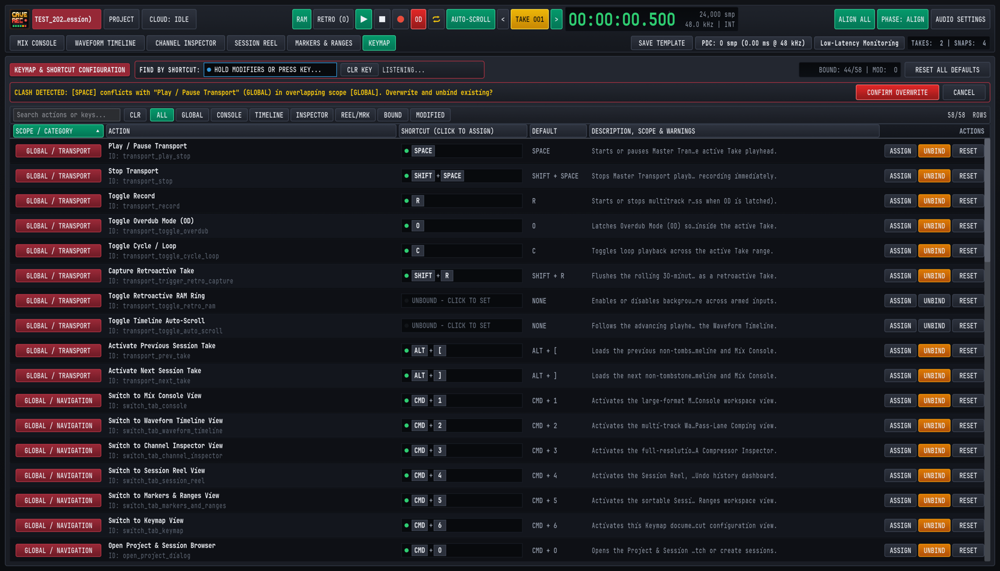
8.3.1 Searching by Action Name, Reverse-Searching by Key Chord & Filtering by Scope#
The KEYMAP view provides three complementary ways to inspect bindings across all 58 studio actions:
- Text Search (
Search actions or keys...): Type any action name (Phase Align,Snapshot,Pass Lanes), action identifier (transport_record), scope name (MIX CONSOLE), or key chord (SHIFT + M,CMD + 1) into the left search box to filter the table in real time. ClickCLRto clear the text query. - Interactive Reverse-Search by Shortcut (
FIND BY SHORTCUT:): Click inside theCLICK & PRESS KEYS TO FIND...capture well in the top header bar. Its status indicator switches fromIDLEtoLISTENING...and the prompt changes toHOLD MODIFIERS OR PRESS KEY...:- Hold Modifier Keys (
MODS: [...]): Hold down any combination of modifiers (CMD/CTRL, OPT/ALT, SHIFT) without pressing a letter key to filter the table immediately to every action whose shortcut includes those held modifiers. - Press a Trigger Key (
EXACT: [...]): Press any non-modifier key (such as SPACE, R, or 1) to lock the complete key chord and isolate the exact action(s) bound to that shortcut across all scopes. - Clear Reverse Search (
CLR KEY): ClickCLR KEYbeside the capture box to clear the key filter and restore all 58 rows.
- Hold Modifier Keys (
- Scope & Status Quick-Filter Pills: Click any of the eight filter pills in the toolbar (
58/58 ROWS) to isolate a specific subset of actions:ALL: Displays all 58 bindable studio actions.GLOBAL: Displays the 33 global actions (GLOBAL / TRANSPORT,GLOBAL / NAVIGATION,GLOBAL / MARKERS, andGLOBAL / SESSION).CONSOLE: Displays the 7VIEW / MIX CONSOLEchannel strip actions.TIMELINE: Displays the 6VIEW / TIMELINEzoom and Pass Lane actions.INSPECTOR: Displays the 4VIEW / INSPECTORprocessor and clip-reset actions.REEL/MRK: Displays theVIEW / SESSION REEL,VIEW / MARKERS TAB, andMODAL / PROJECTactions.BOUND: Displays only actions that currently have an active keyboard shortcut assigned (44/58by factory default).MODIFIED: Displays only actions whose current shortcut differs from the factory default (marked with an amber*in theDEFAULTcolumn and counted in theMOD:telemetry badge at the top right).
8.3.2 Recording Custom Shortcuts, Unbinding & Resetting Defaults#
Every row in the KEYMAP table includes an interactive SHORTCUT (CLICK TO ASSIGN) capture well and row action buttons on the far right:
- Enter Capture Mode (
ASSIGNor Click Capture Well): Click theASSIGNbutton on the target row, or click directly inside itsSHORTCUT (CLICK TO ASSIGN)box (UNBOUND - CLICK TO SET). The row's capture well highlights and promptsPRESS KEYS, THEN APPLY, while the right-hand action column switches toAPPLY,CANCEL, andUNBIND. - Press Your Desired Key Combination: Hold any desired modifier keys (CMD/CTRL, OPT/ALT, SHIFT) and press a character key (
A..Z,0..9,[,],-,=,,,.), function key (F1..F12), or named navigation key (SPACE, ENTER, TAB, BACKSPACE, DELETE, HOME, END, PGUP, PGDN, UP, DOWN, LEFT, RIGHT). Shifted punctuation symbols (such as{or+) are automatically normalized to their canonical physical base key (SHIFT + [ or SHIFT + =) for consistent cross-platform matching. - Commit the Binding (
APPLY): ClickAPPLYto validate and save the captured key chord, or clickCANCEL(or click outside the capture well) to exit without changing the shortcut. - Unbind or Reset Individual Actions (
UNBIND/RESET): ClickUNBINDon any row to clear its shortcut toUNBOUND, or clickRESETto restore that single action to its factory default binding. - Restore Factory Defaults Across the Entire Studio (
RESET ALL DEFAULTS): ClickRESET ALL DEFAULTSat the top right of theKEYMAPheader to restore all 58 actions to their original factory keybindings in one step.
8.3.3 Live Scope Conflict Detection, Shared Non-Conflicting Scopes & OS Warnings#
When you assign a custom shortcut, Cave Recorder validates the key chord against two safety layers before writing to disk:
- Scope Clash Detection (
CLASH DETECTEDConfirmation Banner):- Overlapping Scopes (Blocked Without Confirmation): Because
GLOBALshortcuts are active across every workspace view, assigning the same key chord to twoGLOBALactions, to two actions in the same workspace view, or to aGLOBALaction and a workspace view action creates an ambiguous collision. When you clickAPPLYon a colliding chord, Cave Recorder pauses and displays the amber Clash Detection Banner at the top of theKEYMAPview (CLASH DETECTED: [SPACE] conflicts with "Play / Pause Transport" (GLOBAL) in overlapping scope [GLOBAL]. Overwrite and unbind existing?). ClickCONFIRM OVERWRITEto assign the shortcut and automatically unbind the conflicting action, or clickCANCELto keep your existing bindings untouched. - Non-Conflicting Sibling Views (Allowed & Highlighted in Green): Because only one workspace view tab is visible at a time, sibling view scopes (
MIX CONSOLE,WAVEFORM TIMELINE,CHANNEL INSPECTOR,SESSION REEL, andMARKERS & RANGES) never conflict with each other, andPROJECT MODALonly runs while the modal browser is open. When two actions in separate views share the same key (such as E bound toExpand All Track Pass LanesinWAVEFORM TIMELINEandToggle Pass Lanes on Inspected ChannelinCHANNEL INSPECTOR), theDESCRIPTION, SCOPE & WARNINGScolumn highlightsSHARED IN NON-CONFLICTING SCOPE: CHANNEL INSPECTORin emerald green.
- Overlapping Scopes (Blocked Without Confirmation): Because
- Operating System Shortcut Conflict Warnings (
OS WARN):- If you assign a key combination commonly intercepted by the host desktop environment, Cave Recorder displays an amber
OS WARN (<Platform>): <System Function>badge in the row description so you know the operating system may capture the key press first: - macOS Warnings: CMD + Q (Quit Application), CMD + H (Hide Window), CMD + M (Minimize Window), CMD + W (Close Window), CMD + SPACE (Spotlight Search), CMD + TAB (Application Switcher), CMD + SHIFT + 3/4/5 (System Screenshot), and CTRL + Arrow keys (Mission Control / Desktop Spaces).
- Windows & Linux Warnings: ALT + F4 (Close Window), ALT + TAB (Window Switcher), ALT + SPACE (Window Menu), CTRL + W / CTRL + Q (Close / Quit), CTRL + SHIFT + ESC (Task Manager), CTRL + ALT + T / DELETE (Terminal / Session Dialog), and SUPER (WIN) + L/D/E/R/I/TAB/SPACE/Arrow keys.
- If you assign a key combination commonly intercepted by the host desktop environment, Cave Recorder displays an amber
8.3.4 Persisting, Backing Up & Sharing Studio Keymap Profiles (keymap.json)#
Every change you make in the KEYMAP view is saved immediately to a human-readable JSON profile (keymap.json) inside your user configuration folder (stored alongside preferences.json and recent.json):
- macOS:
~/Library/Application Support/caverec/keymap.json - Linux:
$XDG_CONFIG_HOME/caverec/keymap.json(or~/.config/caverec/keymap.jsonwhenXDG_CONFIG_HOMEis unset) - Windows:
%APPDATA%\caverec\keymap.json(or%USERPROFILE%\AppData\Roaming\caverec\keymap.json)
{
"schema_version": 1,
"bindings": {
"console_trigger_group_phase_align": {
"modifiers": {
"command": false,
"control": false,
"alt": false,
"shift": true
},
"key": {
"kind": "character",
"value": "G"
}
}
}
}To transfer your custom studio keymap to a second rehearsal computer or back it up to version control:
- Copy
keymap.jsonfrom the source workstation's configuration directory into the target workstation'scaverecconfiguration directory while Cave Recorder is closed, and launchcaverec. - On startup, Cave Recorder automatically normalizes character symbols, maps
command: trueto CMD on macOS and CTRL on Windows and Linux, populates any omitted actions with their factory defaults, and sanitizes the table so no two overlapping scopes can ever load with a conflicting shortcut.
8.4 Command-Line & Automated Studio Verification Reference#
In addition to launching Cave Recorder from your desktop application menu, studio engineers and system integrators can run caverec from a terminal shell to execute automated 18-channel signal-path verification or generate offscreen workspace captures for studio documentation and rig sign-off.
# 1. Standard interactive desktop studio launch
caverec
# 2. Run the 18-channel studio self-test & signal-path verification
caverec --self-test
caverec --stress-test
# 3. Render all 15 workspace & modal inspection screenshots
caverec --screenshot-dir /tmp/caverec-shots
# 4. Render a single workspace preset at custom dimensions
caverec --screenshot-dir /tmp/caverec-shots \
--screenshot-view console-18ch \
--screenshot-size 1680x9608.4.1 Command-Line Arguments Reference#
| Command-Line Flag | Arguments / Values | Studio Function |
|---|---|---|
| (No arguments) | None | Launches the interactive Cave Recorder desktop workstation (1680x960 default window), loads user keybindings (keymap.json) and studio preferences (preferences.json), and opens the PROJECT browser modal to select or create a Session. |
--self-test --stress-test |
None | Runs the automated 18-Channel Studio Self-Test & Hardware Verification Suite and exits with code 0 on pass or 1 on failure. Verifies 18-in/20-out routing (CH01..CH08 analog preamps, CH09..CH10 S/PDIF, CH11..CH18 ADAT optical), 48.0 kHz / 44.1 kHz sample-rate clock switching, multi-mic drum phase alignment, 30-minute retroactive memory capture, simultaneous 14-track playback + 4-track overdub pass recording, and offline mixdown and stem rendering. |
--screenshot-dir |
<dir> (Output directory path) |
Renders offscreen PNG captures of Cave Recorder's workspace views and detail regions into <dir> for studio documentation and visual rig inspection without opening an interactive desktop window. |
--screenshot-view |
<slug|all> (requires --screenshot-dir) |
Selects which workspace preset to render: all (default), console, console-18ch, console-routing, timeline, timeline-expanded, inspector-track, inspector-subgroup, session-reel, session-reel-modals, markers-ranges, keymap, device-settings, top-deck-popovers, or the PROJECT Session Browser modal presets (welcome and welcome-forms). |
--screenshot-size |
<WxH> (320x240 to 4096x4096, default 1680x960) |
Sets the logical viewport resolution used when rendering offscreen workspace captures with --screenshot-dir. Both space-separated (--screenshot-size 1920x1080) and =-separated (--screenshot-size=1920x1080) syntax are supported. |
8.4.2 Studio Environment Variables#
Cave Recorder also recognizes the following optional environment variables on startup:
| Environment Variable | Platform / Scope | Studio Function |
|---|---|---|
CLAP_PATH |
macOS, Windows, Linux | Colon-separated (macOS/Linux) or semicolon-separated (Windows) list of additional directories to scan on startup for third-party .clap audio plugins alongside the standard system plugin folders (Section 5.7.1). |
CAVEREC_GPU_POWER |
Linux (low, igpu, low_power, low-power or high, dgpu, high_performance, high-performance) |
Selects the graphics adapter power preference on multi-GPU Linux studio workstations. Low-power values (low, igpu, low_power, low-power, the default) select integrated low-noise graphics so cooling fans never bleed into live room microphones, while high-performance values (high, dgpu, high_performance, high-performance) select a discrete GPU. |
CAVEREC_GDRIVE_ACCESS_TOKEN |
macOS, Windows, Linux | Optional OAuth 2.0 access token override for unattended Google Drive cloud synchronization in automated studio backup scripts when interactive browser sign-in is not available. |
Studio Glossary & Alphabetical Index
Canonical definitions of Cave Recorder terminology, Take vs. Pass disambiguation, and an alphabetical subject index.
This chapter defines the canonical studio terminology used across every console faceplate, timeline lane, session file, and workflow in Cave Recorder (caverec), followed by the complete Alphabetical Index of the manual.
9.1 Take vs. Pass Disambiguation (Quick Guide)#
Traditional desktop digital audio workstations use the word "Take" for both an entire song recording and an overdubbed layer on a single track, causing constant confusion during band rehearsals. Cave Recorder enforces a strict four-tier studio hierarchy where Session-level Takes and Track-level Passes are completely distinct concepts:
Project (Band / Artist Workspace, e.g., GF)
└── Session (Rehearsal Night or Tracking Day, e.g., GF_20261020-1)
└── Take (Complete Song Run-Through Starting at 00:00:00.000)
└── Pass (Single-Track Stem Inside That Take: PASS 01 / OD 02)| Studio Term & Level | UI Badge & Location | On-Disk Pattern | How It Is Created & Used |
|---|---|---|---|
| Project (Level 1: Band or venture) | PROJECT modal (CMD/CTRL + O) |
<LibraryRoot>/<ProjectTag>/ |
Top-level band folder containing all Sessions plus a unified _Mixes/ folder for rapid listening and cloud sharing. |
| Session (Level 2: Rehearsal or studio day) | Session pill in Top Deck & SESSION REEL (CMD/CTRL + 4) |
<ProjectTag>/<SessionID>_<Tag>/ |
Defines the room's 18-channel microphone patch, strip names, bus routing, and console processing shared across all Takes recorded that day. |
Take (Level 3: Complete song or jam at t = 0) |
< TAKE 001 > in Top Deck & TAKES CATALOG |
Take<NNN>_<Stamp>[_<TakeTag>]/ |
Created whenever you press Record (R) with Overdub Mode (OD) off. Every Take starts at its own 00:00:00.000 origin and is never stacked on top of another Take. |
| Base Pass (Level 4A: Initial track stem) | PASS 01 (BASE PASS) on strip & Pass Lane |
rec/*_<CC>-<Name>_Rec001_<Stamp>.wav |
The initial 32-bit float pre-fader mono stem captured on a record-armed channel strip when the Take was first recorded from 00:00:00.000. |
| Overdub Pass (Level 4B: Layered track stem) | OD 02, OD 03 (OVERDUB) on strip & Pass Lane |
rec/*_<CC>-<Name>_Rec<MMM>-OD_<Stamp>.wav |
A subsequent track-level recording captured inside the currently active Take when Overdub Mode (OD, O) is latched on the Top Deck. |
| Pass Lanes (Track sub-lanes inside a Take) | PASSES (E / SHIFT + E) in WAVEFORM TIMELINE |
Stored in *_Take<NNN>_take.json |
Expandable vertical sub-lanes under a track displaying its PASS 01 Base Pass and OD 02..N Overdub Passes for one-click comp selection (Use PASS 01 / ★ OD 02). |
9.2 Studio Glossary#
The alphabetical definitions below cover every core studio concept, signal-processing stage, console switch, and workflow term in Cave Recorder, with direct links to the chapters where each topic is covered in depth.
12-Band Parametric EQ (2:12B EQ)#
Zero-latency 12-band precision state-variable parametric equalizer (B1 through B12) available in the 8-slot processor rack of every Input Track (CH01..CH18) and Subgroup Bus (SUB 1..SUB 16). Each band provides -24.0 dB to +24.0 dB gain across 20 Hz to 20 kHz, variable Q (0.10 to 18.00), and seven selectable filter shapes: peaking Bell (BELL), Low Shelf (LSHF), High Shelf (HSHF), High-Pass Filter (HPF), Low-Pass Filter (LPF), surgical Notch (NTCH), and Spectral Tilt (TILT). See Section 5.3.
30-Minute Retroactive Capture (RAM / RETRO)#
Continuous background audio capture system that retains the most recent 30 minutes of live 32-bit floating-point audio across all record-armed (R) input channels in system memory whenever the green RAM button is lit in the Top Transport Deck. Clicking RETRO (or pressing SHIFT + R) flushes the rolling 30-minute memory to disk as a new numbered Session Take (Take<NNN>) so spontaneous jams played while the transport was stopped are never lost. See Section 1.1.2, Section 2.2.3, and Section 3.2.
8-Slot Processor Rack#
Reorderable eight-slot insert processing chain (Slots 1..8) on every Input Track and Subgroup Bus. Holds Cave Recorder's zero-latency built-in processors (2:12B EQ, 3:VCA CMP, 4:AUX SND movable send tap) alongside third-party .clap audio plugins (1:CLAP). Slots can be reordered live during playback by dragging their :: handle or clicking ^ / v with clickless crossfading, or bypassed individually via B. See Section 4.1 and Section 5.1.3.
Active Comp Lane (ACTIVE COMP LANE)#
The single Pass Lane currently selected for disk playback on a track inside the active Take. Highlighted in amber-copper waveform color with a green star badge (★ PASS 01 or ★ OD 02) in WAVEFORM TIMELINE (CMD/CTRL + 2) and reflected on the channel strip's gold pass indicator badge on the Mix Console. See Section 3.4 and Section 6.2.2.
Analog VCA Compressor (3:VCA CMP)#
Zero-latency voltage-controlled amplifier dynamics processor included in every Input Track and Subgroup Bus 8-slot rack. Provides adjustable Threshold (-60.0 dB to 0.0 dB), Ratio (1.0:1 to 20.0:1 with 2:1, 4:1, 8:1, and 20:1 presets), Attack (0.1 ms to 100.0 ms), Release (10.0 ms to 1000.0 ms), Makeup Gain (0.0 dB to +24.0 dB), a 90 Hz Sidechain High-Pass Filter (SC HPF, shortcut H in Channel Inspector), Stereo Link (LINK), New York parallel blend (MIX 50%), and a real-time Gain Reduction (GR) trace. See Section 5.4.
Audio Settings Modal (AUDIO SETTINGS)#
Hardware configuration dialog opened via AUDIO SETTINGS in the Top Deck (CMD + , on macOS, CTRL + , on Windows and Linux). Selects the physical input and output audio interface, sample rate (44.1, 48.0, 88.2, or 96.0 kHz), hardware buffer size (32 to 2048 frames), and runs the automated hardware impulse loopback latency calibration (Measure Latency). See Section 2.2 and Section 2.3.
Aux Return (AUX 1 REVERB & AUX 2 TAPE DLY)#
Two dedicated, solo-safe stereo effect return strips on the right side of the Mix Console feeding the Master Bus:
AUX 1 REVERB: Zero-latency acoustic convolution reverb (EMT 140 Plate,Studio Room,Chamber,Spring) with Input Low-Cut (LC), Pre-Delay (PD,0to200 ms), Decay Time (DCY,0.20to12.00 s), andWETblend toggle.AUX 2 TAPE DLY: Capstan magnetic tape echo processor with Wow & Flutter (WOW), High-Frequency Damping (DMP), Delay Time (TM,1to2000 ms), Feedback (FB), and Stereo Ping-Pong (PP) widening.
See Section 4.3.2 and Section 5.5.
Aux Send (RVB & DLY / PRE, EQ, PST)#
Per-channel and per-subgroup stereo send level controls (-inf to +12.0 dB) feeding AUX 1 REVERB (RVB) and AUX 2 TAPE DLY (DLY), paired with a 3-way pickoff tap selector: PRE (pre-insert and pre-fader for independent cue sends), EQ (post-EQ and pre-fader), or PST (post-fader and post-mute, scaling wet effects naturally with fader moves). See Section 4.2.3.
Base Pass (Rec001 / PASS 01)#
The initial multitrack audio stem captured on a record-armed channel strip when a Session Take is originally recorded from 00:00:00.000 with Overdub Mode (OD) turned off. Stored on disk in <TakeFolder>/rec/<SessionID>_Take<NNN>_<CC>-<TrackName>_Rec001_<Stamp>.wav and displayed as PASS 01 (BASE PASS) in the channel strip header and Pass Lanes. See Section 1.2 and Section 6.2.
Channel Inspector (CHANNEL INSPECTOR)#
Full-screen single-channel and Subgroup Bus processing workbench (CMD + 3 on macOS, CTRL + 3 on Windows and Linux). Combines a full-height channel strip on the left with an expanded 12-band Parametric EQ and Dual-Trace 4096-point RTA, an expanded Analog VCA Compressor with scrolling Gain Reduction trace and dedicated rotary knobs, a multi-bus output routing popover (OUTPUT BUSES), and bottom Pass Lane comping controls. See Section 5.1.2.
CLAP Plugin (1:CLAP)#
Third-party audio effect plugin conforming to the open CLAP (Clever Audio Plug-in, .clap) standard, hostable in any of the eight reorderable slots (Slots 1..8) on any Input Track or Subgroup Bus with native floating GUI support, automatic Plugin Delay Compensation (PDC), and one-click Low-Latency Monitoring bypass. See Section 5.7.
Cloud Sync (CLOUD)#
Built-in two-way Google Drive synchronization engine for backing up Sessions and collaborating across bandmates' computers. Supports two transfer tiers (MIXES for fast synchronization of manifests, Snapshots, and .flac Prints/Mixdowns, and FULL for complete raw rec/*.wav multitrack stems), automatic Print-to-FLAC conversion (AUTO-FLAC ON UPLOAD), federated shared project linking (+ Link Remote Project...), exclusive session write-locking (Read-Only Preview), and zero-loss offline conflict merging via Snapshots. See Section 7.5.
Cycle Loop (⇄)#
Master Transport mode (C or clicking ⇄ in the Top Deck) that loops playback or overdub recording continuously between the START and END boundaries of the active Take Range (R001, R003, ...). See Section 3.4 and Section 6.3.2.
Dual-Trace Spectrum Analyzer (RTA)#
High-resolution 4096-point real-time acoustic spectrum analyzer displayed behind the 12-Band Parametric EQ curve in both the Mix Console Upper Well 2 and the CHANNEL INSPECTOR view. Plots the pre-EQ input spectrum (darker shaded trace) and post-EQ output spectrum (bright emerald trace) simultaneously from 20 Hz to 20 kHz. See Section 5.3.2.
Input Monitor (I)#
Per-track console switch (I on channel strips, MON in Channel Inspector, shortcut SHIFT + I on the inspected track in Mix Console) that routes the live physical hardware input (IN 01..IN 18) through the channel's 8-slot processor rack and fader even while transport playback is rolling, allowing musicians to rehearse or monitor live overdubs through console EQ, compression, and reverb. See Section 4.2.4.
Input Trim (TRM)#
Digital pre-insert gain control (-24.0 dB to +24.0 dB, default 0.0 dB) located at the top of every Input Track and Subgroup Bus strip. On Input Tracks, TRM sits upstream of both the raw multitrack stem recorder (rec/) and the 8-slot processor rack so you can fine-tune preamp gain staging before stems hit disk. On Subgroup Buses, TRM gain-stages the summed multi-channel signal entering the subgroup's SUB RACK. See Section 4.1 and Section 4.2.2.
Keymap View (KEYMAP)#
Interactive keyboard shortcut reference and customization workspace (CMD + 6 on macOS, CTRL + 6 on Windows and Linux). Lists all 58 studio actions across seven scopes with live substring search, interactive Reverse-Search by Shortcut (FIND BY SHORTCUT:), scope filter pills, inline key-chord capture (ASSIGN / APPLY), scope clash detection, operating-system conflict warnings (OS WARN), and automatic persistence to keymap.json. See Section 8.3.
Live Stereo Print (2-TRK / Print001)#
Real-time 2-track post-Master-Bus stereo recording captured concurrently alongside raw pre-fader multitrack stems whenever a Take is recorded with 2-TRK enabled on the MST MASTER BUS strip. Written to <TakeFolder>/mix/<SessionID>_Take<NNN>_Print<NNN>_<Stamp>.wav and convertible in one click (FLAC PRINT or FLAC ALL PRINTS) to a lossless 24-bit .flac file linked into <ProjectTag>/_Mixes/ for immediate post-rehearsal band listening. See Section 1.1.3, Section 4.1.1, and Section 7.2.
Low-Latency Monitoring#
Top Deck monitoring mode (Low-Latency Monitoring in Row 2 of the Top Deck) that temporarily bypasses high-latency lookahead CLAP plugins on record-armed (R) live monitoring paths and their downstream buses during overdubbing, dropping foldback latency to zero internal samples while keeping full Plugin Delay Compensation active on unarmed playback tracks. See Section 5.7.3.
Markers & Ranges (M001 / R001)#
Sample-accurate timeline cue flags and bounded time spans stored per Take and managed in both the WAVEFORM TIMELINE (MKR and RNG lanes) and the dedicated MARKERS & RANGES workspace (CMD/CTRL + 5). Standalone cue markers (M005, ...) are dropped on the fly with M and navigated via [, ], SHIFT + [ (HOME), and SHIFT + ] (END). Ranges (R001, R003, ...) are bounded by start (K) and end (L) markers for Cycle Loop playback (⇄) and non-destructive Take extraction (NEW TAKE). See Section 6.3.
Master Bus (MST MASTER BUS)#
The final stereo summing strip on the right edge of the Mix Console, summing all Subgroup Buses, direct Input Tracks, and Stereo Aux Returns. Incorporates a built-in Master Tape Saturation stage (TAPE with DRIVE and WARM), a Master Bus Glue VCA Compressor (COMP), a Lookahead Brickwall Limiter (LIM with THR and CEIL), the live 2-TRK Print recorder arm switch, a one-click FLAC offline Mixdown bounce button, CLR CLIP, Master Fader, and 40-segment stereo Peak/RMS meter. See Section 4.3.3.
Mix Console (MIX CONSOLE)#
Primary studio workspace view (CMD + 1 on macOS, CTRL + 1 on Windows and Linux) combining the four Upper Inspector Wells (8-Slot Rack & Tape, 12-Band EQ & RTA, VCA Compressor & GR, and Mini-Timeline) with the lower bank of 18 Input Track strips (CH01..CH18), stereo Subgroup Buses (DRUM BUS, INST BUS), Stereo Aux Returns (AUX 1 REVERB, AUX 2 TAPE DLY), and the MST MASTER BUS. See Chapter 4.
Multi-Mic Phase Alignment (ALIGN ALL & Φ)#
Automatic acoustic arrival-time and polarity correlation processor that analyzes phase relationships across multi-miked instruments (such as a drum kit or dual-miked guitar/bass cabinet) relative to a timing anchor channel (0us). Clicking ALIGN ALL in the Top Deck (or Φ on an individual strip) calculates and engages sub-sample time delay (0 to 50,000 us / 0.00 to +50.00 ms) and 180-degree polarity inversion (Ø) to eliminate comb filtering, with instant global comparison via PHASE: ALIGN / PHASE: BYP. See Section 3.3 and Section 5.6.
Offline Stereo Mixdown (Mix001)#
Faster-than-real-time stereo render of an entire Take processed from 00:00:00.000 through the complete Mix Console signal chain (including updated fader balances, 8-slot inserts, Subgroup/Aux buses, Master Bus processing, and active Pass Lane selections). Triggered via the FLAC button on the Master Bus or from the SESSION REEL view, saved to <TakeFolder>/mix/<SessionID>_Take<NNN>_Mix<NNN>_<Stamp>.flac (or .wav), and linked into <ProjectTag>/_Mixes/. See Section 7.2.3.
Overdub Mode (OD)#
Transport recording mode toggled via the red OD button in the Top Deck (or pressing O). When OD is off, pressing Record (R) creates a brand-new t = 0 Session Take. When OD is latched (illuminated red), pressing Record (R) plays back the existing tracks of the currently active Take while recording a new track-level Overdub Pass (Rec002-OD, OD 02) onto armed channels with automatic roundtrip loopback latency compensation. See Section 3.4 and Section 6.2.
Overdub Pass (Rec002-OD / OD 02)#
A layered or replacement track-level recording captured inside an existing Session Take when Overdub Mode (OD) is enabled on the transport bar. Saved as <TakeFolder>/rec/<SessionID>_Take<NNN>_<CC>-<TrackName>_Rec<MMM>-OD_<Stamp>.wav and displayed as OD 02, OD 03, and higher inside that track's expandable Pass Lanes. See Section 1.2 and Section 6.2.
Pass#
Any individual audio recording on a single channel strip belonging to a specific Session Take, encompassing both the initial Base Pass (Rec001 / PASS 01) captured when the Take was first created and any subsequent Overdub Passes (Rec002-OD / OD 02, OD 03, ...) recorded into that Take. See Section 9.1.
Pass Lanes (PASSES)#
Expandable vertical sub-lanes under an Input Track in WAVEFORM TIMELINE (CMD/CTRL + 2, expanded with E and collapsed with SHIFT + E) and CHANNEL INSPECTOR (CMD/CTRL + 3, toggled with E or PASSES). Pass Lanes display the track's PASS 01 Base Pass and all OD 02..N Overdub Passes inside the active Take for one-click comp promotion (Use PASS 01 / ★ OD 02), per-pass muting (M), and non-destructive deletion (Del). Track-level overdub lanes are always called Pass Lanes and are never called "Take Lanes". See Section 6.2.2.
Plugin Delay Compensation (PDC)#
Automatic sample-accurate delay compensation engine that aligns parallel tracks, Subgroup Buses, and Aux paths whenever a third-party CLAP plugin introduces internal lookahead buffering. Displayed live in Row 2 of the Top Deck (PDC: N smp (X.XX ms @ 48 kHz)) and detailed per channel in the Latency & PDC Transparency Breakdown popover. See Section 5.7.2.
Polarity Invert (Ø)#
Console switch (Ø, shortcut SHIFT + P on the inspected strip in Mix Console) that flips positive and negative waveform excursions by 180° (illuminates cyan when active). Used to correct phase cancellation on bottom snare microphones, rear open-back guitar cabinet microphones, or inverted balanced XLR cables, and set automatically during ALIGN ALL. See Section 4.2.2 and Section 5.6.
Present Stash (A/B PRESENT STASH & RETURN TO PRESENT)#
Automatic working-memory safeguard that preserves your live, unsaved Mix Console state the instant you click AUDITION SNAP <NNN> in the SESSION REEL view (CMD/CTRL + 4). While in Audition Mode, you can step across any number of historical Snapshots, click A/B PRESENT STASH for clickless real-time comparison against your working mix, or press BACKSPACE (RETURN TO PRESENT) to restore your exact working console state with zero lost fader moves. See Section 7.3.2.
Project & Project Tag (PROJECT / _Mixes/)#
Top-level workspace representing a band, artist, or musical venture, identified by a unique 1-to-8 character uppercase alphanumeric Project Tag (GF, TEST, MISC) and stored at <LibraryRoot>/<ProjectTag>/. Managed in the PROJECT modal (CMD/CTRL + O), each Project contains all of that band's Sessions plus a flat _Mixes/ index folder containing relative links to all active .flac Prints and Mixdowns across every Session. See Section 1.2, Section 2.4, and Section 7.4.
Roundtrip Loopback Calibration (Measure Latency)#
Built-in hardware impulse measurement tool inside the AUDIO SETTINGS modal (CMD/CTRL + ,) that transmits a calibration pulse out a selected physical output jack (Out 20 or Out 1) over a patch cable into an analog input jack to measure exact physical converter, ADAT, and USB/Thunderbolt roundtrip delay in samples. The measured offset is automatically applied as negative record-offset compensation on all subsequent Overdub Passes (OD). See Section 2.3.
Session & 08:00 Rollover Rule#
A single rehearsal evening, jam night, or studio tracking day within a Project (<ProjectTag>/<SessionID>[_<SessionTag>]/), defining the shared 18-channel hardware patch, strip names, bus topology, and console settings across all Takes recorded during that gathering. Cave Recorder rolls the session calendar date over at 08:00 local time so Takes recorded after midnight (01:30) remain grouped under the same evening session date (YYYYMMDD) as recordings started at 21:00. See Section 1.2 and Section 7.4.2.
Session Reel (SESSION REEL)#
Session management dashboard (CMD + 4 on macOS, CTRL + 4 on Windows and Linux) containing the session metadata and cloud sync header, the reversible Undo/Redo history bar (UNDO, REDO, COMPACT TAIL, SNAP MANUAL), the searchable TAKES CATALOG (Take loading, starring, tagging, FLAC PRINT encoding, soft-delete trash management, and latency offset re-application), and the SNAPSHOTS & PRESENT STASH table. See Chapter 7.
Session Template (SAVE TEMPLATE)#
Reusable console configuration file (<LibraryRoot>/.caverec/templates/<Name>.json) saved via the SAVE TEMPLATE button in Row 2 of the Top Deck and selectable when creating a new Session in the PROJECT modal. Stores all channel strip names, physical input bindings, Subgroup Bus assignments, 8-slot processor racks, EQ curves, and compressor settings while excluding recorded audio Takes and undo history. See Section 2.4.3.
Snapshot (SNAPS)#
Immutable point-in-time capture of the entire Mix Console state, active Pass Lane selections, and compact undo history stored in <SessionFolder>/snapshots/<SessionID>_<NNN>_<Timestamp>.json. Created manually via SNAP MANUAL (CMD/CTRL + S), automatically after every normal recording stop ([POST-REC]), or every 20 minutes during active editing ([AUTO]), and auditioned losslessly via Present Stash. See Section 7.3.
Standby Comp Lane (STANDBY COMP LANE)#
Any recorded Pass Lane (PASS 01 Base Pass or OD 02..N Overdub Pass) on a track that is not currently selected as the ACTIVE COMP LANE. Rendered in slate-grey waveform color with a clickable Use PASS <NN> or Use OD <NN> button that promotes the standby pass to active playback immediately without audio clicks. See Section 6.2.2.
Stem Bounce (Bounce001)#
Faster-than-real-time offline post-processor render of individual Input Track channels (<CC>-<TrackName>_Bounce<NNN>.wav / .flac) and/or stereo Subgroup Buses (Bus<BB>-<BusName>_Bounce<NNN>.wav / .flac) written into <TakeFolder>/bounce/. Bounced stems start at exact sample 0 (00:00:00.000) with all insert processing, phase alignment, and Plugin Delay Compensation applied for delivery to external remixing or mastering engineers. See Section 7.2.3.
Subgroup Bus (SUB 1 DRUM BUS & SUB 2 INST BUS)#
Stereo summing bus strip (SUB 1 through SUB 16) that combines routed Input Tracks into a shared stereo processing chain with its own Input Trim (TRM), Stereo Link (LINK), SEL inspection button, reorderable 8-Slot SUB RACK (Tape Saturation, 12-Band EQ with Dual-Trace RTA, Analog VCA Bus Compressor, and CLAP plugins), stereo Aux Sends (RVB and DLY), stereo Balance (BAL), Mute (M), Solo (S), and logarithmic stereo fader. See Section 4.3.1.
Take (TAKE 001)#
A complete, self-contained multitrack song recording or rehearsal jam captured within a Session (<SessionFolder>/Take<NNN>_<Stamp>[_<TakeTag>]/), starting at its own independent timeline origin (00:00:00.000, sample 0). Pressing Record (R) with Overdub Mode (OD) off always creates a new numbered Take (Take 001, Take 002, ...) and switches the active timeline to that Take. Two different Takes are never stacked on top of one another in the same timeline view. See Section 1.1.1 and Section 9.1.
Take Splitting (SPLIT TAKE & NEW TAKE)#
Non-destructive editing operations in WAVEFORM TIMELINE (CMD/CTRL + 2) and MARKERS & RANGES (CMD/CTRL + 5) that divide a continuous recording at the Playhead (SPLIT TAKE), extract from a standalone marker to the end (NEW TAKE -> END), or extract a bounded range (NEW TAKE) into a brand-new t = 0 Session Take while preserving all original .wav files, Pass Lanes, and phase alignment offsets with full Undo support. See Section 6.4.
Tape Saturation (TAPE)#
Zero-latency analog magnetic tape modeling stage built into every Input Track, Subgroup Bus, and the Master Bus. Models transformer core warmth, magnetic hysteresis soft-clipping, AC bias asymmetry, and high-frequency head self-erasure via six continuous controls: Input Drive (DRV), Harmonic Warmth (WRM), Tape Bias (BIAS), High-Cut Roll-Off (HC), Output Trim (OUT), and Parallel Wet/Dry Mix (MIX). See Section 5.2.
Waveform Timeline (WAVEFORM TIMELINE)#
Multi-track waveform editing and overdub comping workspace (CMD + 2 on macOS, CTRL + 2 on Windows and Linux) focused on the currently active t = 0 Session Take. Features three-tier waveform detail (3-TIER LOD), one-handed 2D ruler scrub-zooming, expandable Pass Lanes (PASSES, E / SHIFT + E), dedicated Marker (MKR) and Range (RNG) lanes, Playhead/Cursor lock (LOCK PH/CUR), and non-destructive Take splitting (SPLIT TAKE / NEW TAKE). See Chapter 6.
9.3 Alphabetical Index#
The alphabetical index below lists every studio topic, console control, processor parameter, keyboard shortcut, workflow procedure, and glossary definition across Chapters 1 through 9, with direct section links and exact PDF page numbers.
#
- 2-TRK
- Ch. 4: Live stereo Print toggle (p. 43)
- 2D Ruler Scrub-Zoom
- Ch. 6: 6.1.4 Complete Reference of Timeline Navigation & Zoom Gestures (p. 66) · Ch. 8: Mouse Gestures (p. 95)
- 8-Slot Processor Rack
- Ch. 9: Glossary definition (p. 106) · Ch. 5: Reordering and bypassing slots (p. 48)
- _Mixes Folder
- Ch. 7: 7.2.2 Converting Live Stereo Prints to Lossless FLAC (FLAC PRINT) (p. 78) · Ch. 7: Relative Links (p. 81)
A
- Actions
- Ch. 8: Scoped Execution Rules (p. 87)
- Active Comp Lane
- Ch. 9: Glossary definition (p. 106)
- ADAT Lightpipe
- Ch. 2: Optical Connection (p. 16)
- ALIGN ALL
- Ch. 3: Step-by-Step Guide (p. 28)
- Audio Interfaces
- Ch. 2: USB, Thunderbolt, and ADAT Expansion (p. 16)
- Audio Settings Modal
- Ch. 8: CMD/CTRL + , Shortcut (p. 89) · Ch. 2: Configuration (p. 19) · Ch. 9: Glossary definition (p. 107)
- AUTO-FLAC ON UPLOAD
- Ch. 7: 7.5.2 Selective Sync Tiers: MIXES vs. FULL & AUTO-FLAC ON UPLOAD (p. 84)
- Auto-Scroll
- Ch. 6: 6.1.3 Full-Screen WAVEFORM TIMELINE Toolbar & Track Headers (p. 65)
- AUX 1 REVERB
- Ch. 4: Return strip controls (p. 43)
- AUX 2 TAPE DLY
- Ch. 4: Return strip controls (p. 43)
- Aux Returns
- Ch. 4: AUX 1 REVERB and AUX 2 TAPE DLY (p. 41) · Ch. 9: Glossary definition (p. 107) · Ch. 4: Quick console strip controls (p. 43)
- Aux Sends
- Ch. 9: Glossary definition (p. 107) · Ch. 4: PRE, EQ, and PST tap points (p. 39)
B
- Base Pass
- Ch. 9: Glossary definition (p. 107)
- Base Pass vs. Overdub Pass
- Ch. 6: 6.2 Recording Overdubs (OD) & Comping in Expandable Pass Lanes (PASSES) (p. 67)
- Buffer Size
- Ch. 2: Choosing Frame Size (p. 20) · Ch. 2: Latency vs. Headroom (p. 19)
- Built-In Processors
- Ch. 5: Overview (p. 47)
- Bus Compression
- Ch. 4: Subgroup routing (p. 42)
C
- Channel Inspector
- Ch. 5: Full-screen CMD/CTRL+3 view (p. 47) · Ch. 9: Glossary definition (p. 107) · Ch. 8: H, X, and E Shortcuts (p. 94) · Ch. 5: Input Track inspection (p. 48) · Ch. 5: Subgroup Bus inspection and multi-bus routing (p. 48)
- Channel Strips
- Ch. 4: Complete control table (p. 36) · Ch. 4: Input Track zones (p. 35) · Ch. 4: Overview (p. 33) · Ch. 2: Recommended 18-Channel Patch (p. 17) · Ch. 8: SHIFT + M, S, A, I, P Shortcuts (p. 92)
- CLAP Plugins
- Ch. 5: External .clap plugin hosting (p. 60) · Ch. 9: Glossary definition (p. 108) · Ch. 5: System scan directories and loading into slots (p. 61)
- CLOUD Status Badge
- Ch. 7: 7.5 Band Collaboration & Google Drive Cloud Sync (CLOUD) (p. 83)
- Cloud Sync
- Ch. 7: Conflict Resolution via Snapshots (p. 85) · Ch. 7: Connecting Google Drive (p. 84) · Ch. 2: Connecting Google Drive in Project Modal (p. 23) · Ch. 9: Glossary definition (p. 108) · Ch. 7: Google Drive Collaboration (p. 83) · Ch. 7: Linking Remote Projects (+ Link Remote Project) (p. 85) · Ch. 7: Mixes Only vs. Full Backup Tiers (p. 84) · Ch. 3: Uploading Mixes and Full Sessions (p. 31)
- CLR CLIP
- Ch. 4: Peak overload reset (p. 43)
- Comb Filtering
- Ch. 5: Multi-mic acoustic arrival time (p. 59)
- Command-Line Interface (CLI)
- Ch. 8: Flag Reference Table (p. 101) · Ch. 8: Launch Options and Automated Flags (p. 100)
- Comping
- Ch. 3: Selecting Active Pass Lanes (p. 30)
- Comping Overdubs
- Ch. 6: 6.2.2 Expanding Pass Lanes, Auditioning Passes & Comping Phrases (p. 69)
- Conflict Detection
- Ch. 8: OS Shortcut Warnings (OS WARN) (p. 99) · Ch. 8: Overlapping vs. Sibling Scopes (p. 99) · Ch. 8: Scope Clash and OS Warnings (p. 97)
- Convolution Reverb
- Ch. 5: AUX 1 REVERB parameters (p. 57)
- Cycle / Loop (C)
- Ch. 3: Loop Overdubbing (p. 30)
- Cycle Loop Playback
- Ch. 6: 6.3.2 Defining Ranges (K / L) & Cycle Loop Playback (⇄) (p. 71) · Ch. 9: Glossary definition (p. 108)
D
- Digital Clock Synchronization
- Ch. 2: Internal vs. ADAT/Word Clock (p. 19)
- Disk Layout
- Ch. 7: Directory Tree (p. 81) · Ch. 7: Self-Documenting Folder Structure (p. 80)
- Dual-Trace RTA
- Ch. 9: Glossary definition (p. 108) · Ch. 5: Pre-EQ vs. post-EQ spectrum visualization (p. 54)
E
- EMT 140 Plate
- Ch. 5: Reverb impulse response (p. 57)
- Environment Variables
- Ch. 8: CLAP_PATH and GPU Configuration (p. 100) · Ch. 8: CLAP_PATH, CAVEREC_GPU_POWER, and Cloud Token (p. 102)
- EQ Filter Shapes
- Ch. 5: BELL, LSHF, HSHF, HPF, LPF, NTCH, TILT (p. 52)
- EQ Nodes
- Ch. 8: Mouse and Scroll Gestures (p. 95) · Ch. 5: Mouse gestures (p. 54)
- Export Workflows
- Ch. 7: Comparison Table (p. 77)
F
- Faders
- Ch. 8: Mouse and Modifier Gestures (p. 95)
- Federated Shared Projects
- Ch. 7: 7.5 Band Collaboration & Google Drive Cloud Sync (CLOUD) (p. 83)
- File Naming Rules
- Ch. 7: Overview (p. 80) · Ch. 7: Pattern Reference Table (p. 82)
- Fine Adjustment
- Ch. 4: 10x precision fader and knob control (p. 45)
- FLAC
- Ch. 4: Master Bus FLAC bounce (p. 43)
- FLAC Compression
- Ch. 7: 7.2.1 Comparison of Export & Bounce Outputs (p. 77)
- FLAC Conversion
- Ch. 3: One-Click Print Encoding (p. 26)
G
- Gain Reduction Meter
- Ch. 5: GR trace and transfer curve (p. 54)
- Gain Staging
- Ch. 2: -18 dBFS RMS Target (p. 25) · Ch. 2: Pre-Session Setup (p. 23)
H
- Hardware Setup
- Ch. 2: 18-Channel Interface Hookup (p. 16)
I
- Input Device
- Ch. 2: Selection (p. 20)
- Input Monitor
- Ch. 9: Glossary definition (p. 108) · Ch. 4: SHIFT+I shortcut (p. 40)
- Input Routing
- Ch. 4: Physical input assignment (p. 38)
- Input Track
- Ch. 4: Channel strip reference (p. 35)
- Input Trim
- Ch. 4: Gain staging (p. 38) · Ch. 9: Glossary definition (p. 108)
- Insert Rack
- Ch. 4: Channel strip slot summary (p. 39)
- Inspector Shortcuts
- Ch. 5: H, X, E, and SHIFT hotkeys (p. 48)
K
- Keyboard Shortcuts
- Ch. 8: Channel Inspector View (p. 94) · Ch. 8: Complete 58-Action Reference (p. 87) · Ch. 8: Global Navigation & Modals (p. 89) · Ch. 8: Global Transport & Record (p. 88) · Ch. 8: Mix Console View (p. 92) · Ch. 8: Session Reel View (p. 94) · Ch. 8: Undo, Snapshots & Markers (p. 90) · Ch. 8: Waveform Timeline View (p. 93)
- Keymap Profiles
- Ch. 8: Backing Up and Transferring Across Computers (p. 99)
- Keymap View (KEYMAP)
- Ch. 8: Customizing Shortcuts (CMD/CTRL + 6) (p. 97) · Ch. 9: Glossary definition (p. 109) · Ch. 8: Recording Custom Shortcuts (p. 98) · Ch. 8: Resetting to Factory Defaults (p. 98) · Ch. 8: Text Search and Scope Filter Pills (p. 97)
- keymap.json
- Ch. 8: Configuration File Locations (p. 99) · Ch. 8: Persisting and Sharing Keymaps (p. 97)
L
- Latency
- Ch. 2: Buffer Size Reference Table (p. 20)
- Library Root
- Ch. 2: Selecting Storage Folder (p. 23)
- Linked Remote Project
- Ch. 2: Connecting Shared Band Folders (p. 23)
- Live Stereo Print
- Ch. 9: Glossary definition (p. 109) · Ch. 7: Print-to-FLAC Conversion (p. 77) · Ch. 4: Rehearsal workflow (p. 35) · Ch. 7: Step-by-Step FLAC Conversion (p. 78)
- Loopback Calibration
- Ch. 9: Glossary definition (p. 112) · Ch. 2: Hardware Roundtrip Measurement (p. 21)
- Low-Latency Monitoring
- Ch. 5: Bypassing lookahead latency during overdubs (p. 60) · Ch. 3: Enabling for Overdubs (p. 30) · Ch. 9: Glossary definition (p. 109) · Ch. 1: Top Deck Toggle (p. 14) · Ch. 5: Top Deck toggle and overdub tracking workflow (p. 62)
M
- Markers
- Ch. 6: Dropping Cue Markers (p. 70) · Ch. 3: Dropping Cue Markers During Recording (M) (p. 26) · Ch. 6: Jumping Between Markers (p. 70) · Ch. 6: Keyboard Shortcuts (p. 70) · Ch. 8: M, K, L, [, ], and . Shortcuts (p. 90) · Ch. 6: Navigating Previous, Next, First, and Last (p. 70)
- Markers & Ranges
- Ch. 6: 6.3 Dropping Cue Markers & Defining Cycle Loop Ranges (MARKERS & RANGES) (p. 70) · Ch. 6: Editing, Filtering, and Highlighting (p. 71) · Ch. 9: Glossary definition (p. 109)
- Master Bus
- Ch. 9: Glossary definition (p. 109) · Ch. 4: MST MASTER BUS controls (p. 41) · Ch. 4: Tape Drive, Glue Compressor, and Brickwall Limiter (p. 43)
- Measure Latency
- Ch. 2: Step-by-Step Guide (p. 21)
- Mix Console
- Ch. 4: Architecture and layout (p. 33) · Ch. 9: Glossary definition (p. 110) · Ch. 1: Hardware-Inspired Layout (p. 5) · Ch. 6: Upper Mini-Timeline Well (p. 63)
- Mixdown
- Ch. 1: Definition (p. 5)
- Modifier Keys
- Ch. 8: Platform Mapping (macOS vs. Windows/Linux) (p. 87)
- Mouse Gestures
- Ch. 8: Complete Studio Reference (p. 95)
- Mouse Modifiers
- Ch. 4: SHIFT fine drag and ALT/OPT reset (p. 45)
- Multitrack Stems
- Ch. 1: 32-Bit Float Pre-Fader (p. 5)
- Mute
- Ch. 4: SHIFT+M shortcut (p. 40)
N
- Numeric Fader Entry
- Ch. 4: Click-to-type dB value (p. 45)
O
- Offline Stereo Mixdown
- Ch. 9: Glossary definition (p. 110) · Ch. 7: Master Bus FLAC Bounce (p. 77) · Ch. 7: Step-by-Step Rendering (p. 78)
- Offscreen Workspace Rendering (--screenshot-dir)
- Ch. 8: Studio Documentation Captures (p. 100)
- Output Bus Routing
- Ch. 4: Subgroup and Master Bus assignment (p. 40)
- Output Device
- Ch. 2: Same as Input (p. 20)
- Overdub Mode (OD)
- Ch. 6: 6.2 Recording Overdubs (OD) & Comping in Expandable Pass Lanes (PASSES) (p. 67) · Ch. 6: Automatic Latency Compensation (p. 68) · Ch. 9: Glossary definition (p. 110) · Ch. 2: Latency Offset Alignment (p. 21) · Ch. 8: O Shortcut (p. 88) · Ch. 3: Step-by-Step Tracking (p. 30)
- Overdub Pass
- Ch. 9: Glossary definition (p. 110)
- Overdub Record-Offset
- Ch. 5: Sample-accurate overdub alignment (p. 61)
- Overview & Studio Philosophy
- Ch. 1: 1.1 Why Cave Recorder Exists (p. 4)
P
- Pan Control
- Ch. 4: Constant-power stereo panning (p. 40)
- Parallel Compression
- Ch. 5: MIX 50% New York compression (p. 54)
- Parametric EQ
- Ch. 5: 12-Band studio equalizer (p. 52) · Ch. 9: Glossary definition (p. 106)
- Pass
- Ch. 1: Base vs. Overdub (p. 5) · Ch. 9: Glossary definition (p. 111)
- Pass Badge
- Ch. 4: PASS 01 and OD 02 indicators (p. 39)
- Pass Lane Disclosure Badge
- Ch. 6: 6.1.3 Full-Screen WAVEFORM TIMELINE Toolbar & Track Headers (p. 65)
- Pass Lanes
- Ch. 6: Auditioning and Switching Passes (p. 69) · Ch. 1: Definition (p. 5) · Ch. 8: E and SHIFT+E Shortcuts (p. 93) · Ch. 6: Expanding and Comping (p. 67) · Ch. 3: Expanding and Comping (E) (p. 30) · Ch. 9: Glossary definition (p. 111) · Ch. 9: Why Never Called Take Lanes (p. 104)
- Patch List
- Ch. 2: 18-Channel Band Layout (p. 17)
- Phase Alignment
- Ch. 1: Automatic Multi-Mic (ALIGN ALL) (p. 5) · Ch. 5: Automatic multi-mic ALIGN ALL (p. 59) · Ch. 3: Drum Kit and Guitar Cab Procedure (p. 28) · Ch. 9: Glossary definition (p. 110) · Ch. 8: Keyboard Shortcuts (p. 92) · Ch. 3: Reference Channel Selection (p. 29)
- Phase Bypass (PHASE A/B)
- Ch. 3: Auditioning Corrections (p. 29)
- PHASE: ALIGN
- Ch. 5: Instant A/B phase comparison (p. 59)
- Ping-Pong Delay
- Ch. 5: Stereo bounce mode (p. 57)
- Playback Read-Ahead
- Ch. 6: 6.2.1 Step-by-Step: Recording Multi-Pass Overdubs on a Track (p. 68)
- Playhead Cursor Lock
- Ch. 6: LOCK PH/CUR (p. 64)
- Plugin Delay Compensation (PDC)
- Ch. 5: Automatic PDC alignment (p. 60) · Ch. 9: Glossary definition (p. 111) · Ch. 5: Latency & PDC Transparency Breakdown popover (p. 61) · Ch. 1: Top Deck Readout (p. 14)
- Polarity Invert
- Ch. 4: 180-degree phase flip (p. 38) · Ch. 5: Automatic 180-degree detection (p. 59) · Ch. 3: Automatic Detection (p. 28) · Ch. 9: Glossary definition (p. 111)
- Pre-Fader Recording
- Ch. 4: Multitrack safety (p. 35)
- Present Stash
- Ch. 7: Auditioning and A/B Comparison (p. 79) · Ch. 8: BACKSPACE Return Shortcut (p. 94) · Ch. 1: Definition (p. 5) · Ch. 9: Glossary definition (p. 111) · Ch. 3: Loss-Free A/B Comparison (p. 31) · Ch. 7: Zero-Loss Snapshot Auditioning (p. 80)
- Ch. 4: Concurrent Master Bus capture (p. 33) · Ch. 1: Definition (p. 5) · Ch. 3: Instant Rehearsal Reference Mix (p. 26) · Ch. 1: Live Stereo Master Capture (p. 5)
- Project
- Ch. 2: Creating a New Project (p. 23) · Ch. 1: Definition (p. 5) · Ch. 9: Glossary definition (p. 111)
- Project Browser Modal (PROJECT)
- Ch. 8: CMD/CTRL + O Shortcut (p. 89) · Ch. 2: Creating Projects and Sessions (p. 23)
R
- Rack Reordering
- Ch. 4: Dragging processor slots live (p. 45)
- RAM Indicator
- Ch. 1: Continuous Capture Memory (p. 4) · Ch. 3: Continuous Warmup Capture (p. 27) · Ch. 2: Enabling in Top Deck (p. 21)
- Ranges
- Ch. 6: Cycle Loop Ranges (p. 70) · Ch. 6: Setting Start and End Boundaries (p. 71)
- Raw Stem Recording
- Ch. 4: Signal tap point (p. 33)
- Read-Only Preview Mode
- Ch. 7: 7.5.4 Exclusive Session Write-Locking (Read-Only Preview) & Zero-Loss Conflict Merging (p. 85)
- Record (R)
- Ch. 3: Capturing Independent Takes (p. 26)
- Record Arm
- Ch. 2: Pre-Session Checklist (p. 25) · Ch. 4: SHIFT+A shortcut (p. 40)
- Recording Hierarchy
- Ch. 1: Project, Session, Take, Pass (p. 5)
- Rehearsal Recording
- Ch. 1: Philosophy (p. 4) · Ch. 3: Step-by-Step Workflow (p. 26)
- RESET
- Ch. 5: Resetting channel processors (p. 50)
- Retroactive Capture (RETRO)
- Ch. 1: 30-Minute Memory (p. 4) · Ch. 9: Glossary definition (p. 106) · Ch. 2: Memory Sizing (p. 21) · Ch. 8: SHIFT+R Shortcut (p. 88) · Ch. 3: Step-by-Step Rescue Procedure (p. 27)
- Return to Present (BACKSPACE)
- Ch. 7: 7.3.2 Auditioning Historical Snapshots with Present Stash Protection (p. 80)
- Reverse Shortcut Search
- Ch. 8: FIND BY SHORTCUT (p. 97) · Ch. 8: Live Modifier and Chord Filtering (p. 97)
S
- Sample Rate
- Ch. 2: 48.0 kHz ADAT Compatibility (p. 19) · Ch. 2: Selection (p. 19)
- Sample-per-Pixel Readout
- Ch. 6: 6.1.1 Three-Tier Waveform Detail (3-TIER LOD) & Viewport Readouts (p. 64)
- Scribble Strip
- Ch. 4: Channel naming and numbering (p. 36)
- Self-Test (--self-test / --stress-test)
- Ch. 8: 18-Channel Studio Verification (p. 100)
- Session
- Ch. 1: Definition (p. 5) · Ch. 9: Glossary definition (p. 112) · Ch. 2: Naming and Folder Preview (p. 24)
- Session Day Rollover (08:00 Local Time)
- Ch. 7: 7.4.2 Canonical File & Folder Naming Reference (p. 82)
- Session Locking
- Ch. 7: Exclusive Write Lock (p. 85)
- Session Reel
- Ch. 8: Filter Shortcuts (p. 94) · Ch. 9: Glossary definition (p. 112) · Ch. 7: Managing Takes (p. 74) · Ch. 7: Overview (p. 74) · Ch. 7: Session Header Bar (p. 74)
- Session Templates
- Ch. 9: Glossary definition (p. 112) · Ch. 2: Loading and Saving (p. 23) · Ch. 2: Starting a Session from a Template (p. 24)
- Share Links
- Ch. 7: 7.5.3 Sharing a Project with Bandmates (+ Link Remote Project...) (p. 85)
- Sidechain High-Pass Filter
- Ch. 5: SC HPF button (p. 54)
- Signal Flow
- Ch. 4: End-to-end audio path (p. 33) · Ch. 4: Pre-fader stem capture vs. live stereo Print (p. 33)
- Signal Processing
- Ch. 5: Zero-latency channel and bus rack (p. 47)
- Snapshots
- Ch. 7: Auto-Save Policy (p. 79) · Ch. 8: CMD/CTRL + S Manual Snapshot Shortcut (p. 90) · Ch. 1: Definition (p. 5) · Ch. 9: Glossary definition (p. 112) · Ch. 7: Non-Destructive Console Snapshots (p. 79) · Ch. 3: Saving and Auditioning Mix Variations (p. 31) · Ch. 7: What Is Stored (p. 79)
- Solo
- Ch. 4: SHIFT+S shortcut (p. 40)
- Spectrum Analyzer
- Ch. 5: Dual-Trace high-resolution RTA (p. 52)
- SPLIT TAKE Button
- Ch. 6: 6.4.1 Three Ways to Split or Extract Independent Takes (p. 72)
- Standby Comp Lane
- Ch. 9: Glossary definition (p. 113)
- Stem Bounce
- Ch. 1: Definition (p. 5) · Ch. 9: Glossary definition (p. 113) · Ch. 7: Step-by-Step Export (p. 78) · Ch. 7: Track and Subgroup Stems (p. 77)
- Studio Glossary
- Ch. 9: Alphabetical Definitions (p. 106)
- Subgroup Buses
- Ch. 4: 8-slot SUB RACK and SEL inspection (p. 42) · Ch. 4: DRUM BUS and INST BUS (p. 41) · Ch. 9: Glossary definition (p. 113)
- SWAP EQ/CMP
- Ch. 5: Pre-EQ vs. Post-EQ compression (p. 50) · Ch. 5: Pre/post EQ and compressor routing (p. 47)
T
- Take
- Ch. 1: Definition (p. 5) · Ch. 9: Glossary definition (p. 113) · Ch. 1: Independent Zero-Based Timeline (p. 4)
- Take Splitting
- Ch. 9: Glossary definition (p. 113) · Ch. 6: Non-Destructive Split at Playhead (p. 72) · Ch. 6: Split by Markers and Ranges (p. 72) · Ch. 6: Stem and Pass Preservation (p. 73) · Ch. 6: Three Split Workflows (p. 72)
- Take vs. Pass Disambiguation
- Ch. 9: Quick Guide (p. 104)
- Takes Catalog
- Ch. 7: Loading and Tagging Takes (p. 74) · Ch. 7: Overview (p. 74) · Ch. 7: Starring, Renaming, and Deleting Takes (p. 75) · Ch. 7: Switching Active Take (p. 75)
- TAPE
- Ch. 5: Drive, Warmth, Bias, and High-Cut (p. 50)
- Tape Delay
- Ch. 5: AUX 2 TAPE DLY capstan echo (p. 57)
- Tape Saturation
- Ch. 9: Glossary definition (p. 114) · Ch. 5: Parameters and studio recipes (p. 50) · Ch. 5: Snare, Bass DI, and Drum Bus recipes (p. 51)
- Three-Tier Waveform Detail
- Ch. 6: 6.1 Navigating the WAVEFORM TIMELINE View & Upper Mini-Timeline Well (p. 63)
- Timecode Display
- Ch. 1: Milliseconds and Samples (p. 11)
- Timeline
- Ch. 6: Isolated Per-Take Zero (p. 63) · Ch. 1: Zero-Based Per Take (p. 4)
- Timeline Cursor
- Ch. 8: Arrow Key Nudging (p. 93)
- Timeline Navigation Gestures
- Ch. 6: 6.1.4 Complete Reference of Timeline Navigation & Zoom Gestures (p. 66)
- Top Deck CLOUD Status Badge
- Ch. 7: 7.5.1 Connecting a Project to Google Drive & Reading the CLOUD Badge (p. 84)
- Top Transport Deck
- Ch. 1: Row 1 Controls (p. 11) · Ch. 1: Row 2 Controls (p. 14)
- Track Header
- Ch. 4: Selection and scribble strip (p. 38)
- Track Height Presets
- Ch. 6: 6.1.3 Full-Screen WAVEFORM TIMELINE Toolbar & Track Headers (p. 65)
- Trackpad Gestures
- Ch. 8: Timeline and Console (p. 95)
- Transport Controls
- Ch. 8: Keyboard Shortcuts (p. 88) · Ch. 1: Play, Stop, Record, Overdub, Loop (p. 11)
U
- Ubiquitous Language
- Ch. 1: Hierarchy Overview (p. 5) · Ch. 9: Take vs. Pass Comparison Table (p. 104)
- Undo and Redo
- Ch. 8: CMD/CTRL + Z Shortcuts (p. 90)
- Undo and Redo History Bar
- Ch. 7: 7.1.1 The Session Header & Undo/Redo History Bar (p. 74)
- Upper Inspector Wells
- Ch. 5: Four-well breakdown (p. 48) · Ch. 5: Mix Console CMD/CTRL+1 layout (p. 47)
- Upper Mini-Timeline Well
- Ch. 6: Controls (p. 64)
- User Interface
- Ch. 1: Three-Tier Console Layout (p. 10)
V
W
- Waveform Display
- Ch. 6: Three-Tier Detail (3-TIER LOD) (p. 64)
- Waveform Timeline
- Ch. 9: Glossary definition (p. 114) · Ch. 6: Navigating (p. 63) · Ch. 6: Overview (p. 63) · Ch. 6: Toolbar Controls (p. 65) · Ch. 6: Track Headers (p. 65)
- Wiring Diagram
- Ch. 2: 18-Channel Studio Hookup (p. 16)
- Word Clock
- Ch. 2: 75-Ohm BNC Setup (p. 19)
- Workflows
- Ch. 3: Full-Band Rehearsal Capture (p. 26) · Ch. 3: Mixing, Snapshots, and Cloud Sharing (p. 31) · Ch. 3: Multi-Mic Phase Alignment (p. 28) · Ch. 3: Overdubbing and Pass Lane Comping (p. 30) · Ch. 3: Retroactive Jam Rescue (RETRO) (p. 27)
- Workspace Tour
- Ch. 1: Mix Console Overview (p. 10)
- Workspace Views
- Ch. 8: CMD/CTRL + 1-6 Shortcuts (p. 89) · Ch. 1: CMD/CTRL + 1-6 Tabs (p. 14)